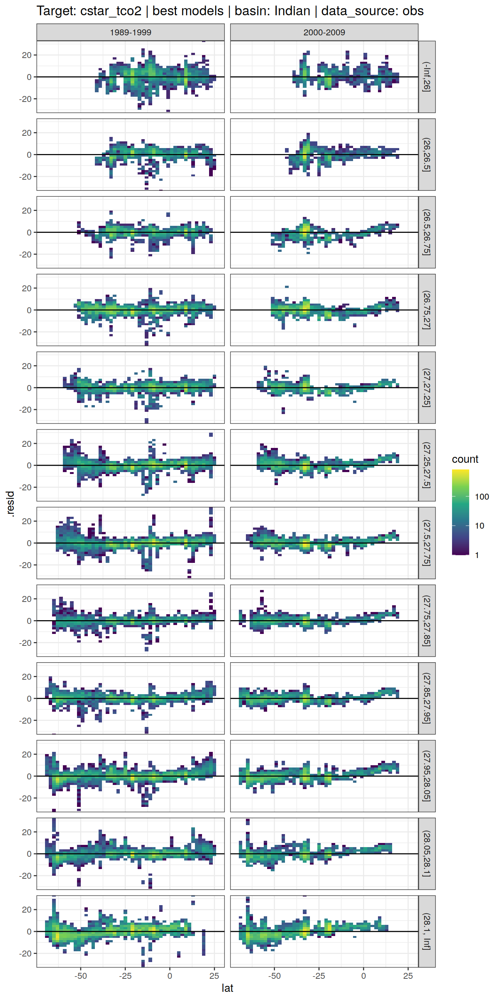

eMLR - model fitting
Jens Daniel Müller
16 April, 2021
Last updated: 2021-04-16
Checks: 7 0
Knit directory: emlr_obs_v_XXX/
This reproducible R Markdown analysis was created with workflowr (version 1.6.2). The Checks tab describes the reproducibility checks that were applied when the results were created. The Past versions tab lists the development history.
Great! Since the R Markdown file has been committed to the Git repository, you know the exact version of the code that produced these results.
Great job! The global environment was empty. Objects defined in the global environment can affect the analysis in your R Markdown file in unknown ways. For reproduciblity it’s best to always run the code in an empty environment.
The command set.seed(20200707) was run prior to running the code in the R Markdown file. Setting a seed ensures that any results that rely on randomness, e.g. subsampling or permutations, are reproducible.
Great job! Recording the operating system, R version, and package versions is critical for reproducibility.
Nice! There were no cached chunks for this analysis, so you can be confident that you successfully produced the results during this run.
Great job! Using relative paths to the files within your workflowr project makes it easier to run your code on other machines.
Great! You are using Git for version control. Tracking code development and connecting the code version to the results is critical for reproducibility.
The results in this page were generated with repository version 50290e8. See the Past versions tab to see a history of the changes made to the R Markdown and HTML files.
Note that you need to be careful to ensure that all relevant files for the analysis have been committed to Git prior to generating the results (you can use wflow_publish or wflow_git_commit). workflowr only checks the R Markdown file, but you know if there are other scripts or data files that it depends on. Below is the status of the Git repository when the results were generated:
Ignored files:
Ignored: .Rhistory
Ignored: .Rproj.user/
Untracked files:
Untracked: .Rprofile
Untracked: .gitattributes
Untracked: .gitignore
Untracked: Cant_eMLR.Rproj
Untracked: README.md
Untracked: _workflowr.yml
Untracked: analysis/_site.yml
Untracked: code/
Untracked: data/
Note that any generated files, e.g. HTML, png, CSS, etc., are not included in this status report because it is ok for generated content to have uncommitted changes.
These are the previous versions of the repository in which changes were made to the R Markdown (analysis/eMLR_model_fitting.Rmd) and HTML (docs/eMLR_model_fitting.html) files. If you’ve configured a remote Git repository (see ?wflow_git_remote), click on the hyperlinks in the table below to view the files as they were in that past version.
| File | Version | Author | Date | Message |
|---|---|---|---|---|
| html | 50290e8 | jens-daniel-mueller | 2021-04-16 | overlapping eras |
| html | a00ec94 | jens-daniel-mueller | 2021-04-16 | Build site. |
| html | b6fe355 | jens-daniel-mueller | 2021-04-16 | Build site. |
| html | 81b7c6d | jens-daniel-mueller | 2021-04-16 | Build site. |
| html | ddec5b7 | jens-daniel-mueller | 2021-04-15 | Build site. |
| html | 29edae5 | jens-daniel-mueller | 2021-04-14 | Build site. |
| html | 099d566 | jens-daniel-mueller | 2021-04-14 | Build site. |
| html | bb44686 | jens-daniel-mueller | 2021-04-14 | Build site. |
| html | bf40480 | jens-daniel-mueller | 2021-04-13 | Build site. |
| html | 9f31fe3 | jens-daniel-mueller | 2021-04-13 | Build site. |
| html | c98be84 | jens-daniel-mueller | 2021-04-13 | Build site. |
| html | 338dd3c | jens-daniel-mueller | 2021-04-09 | Build site. |
| html | a79ca2c | jens-daniel-mueller | 2021-04-09 | included model data |
| html | 7831fd3 | jens-daniel-mueller | 2021-04-09 | Build site. |
| html | 20b26d4 | jens-daniel-mueller | 2021-04-08 | Build site. |
| html | c0895f8 | jens-daniel-mueller | 2021-04-07 | Build site. |
| html | 156d5b7 | jens-daniel-mueller | 2021-04-07 | Build site. |
| html | eb827c9 | jens-daniel-mueller | 2021-04-07 | Build site. |
| html | d3c3fde | jens-daniel-mueller | 2021-03-26 | Build site. |
| Rmd | 88fa519 | jens-daniel-mueller | 2021-03-26 | included model data |
| html | 594d503 | jens-daniel-mueller | 2021-03-26 | Build site. |
| Rmd | e4ef0f6 | jens-daniel-mueller | 2021-03-26 | included model data |
| html | 06bfaf7 | jens-daniel-mueller | 2021-03-26 | Build site. |
| Rmd | 6d2102a | jens-daniel-mueller | 2021-03-26 | included model data |
| html | 2eb881a | jens-daniel-mueller | 2021-03-26 | Build site. |
| Rmd | a9e976a | jens-daniel-mueller | 2021-03-26 | included model data |
| html | 03b6009 | jens-daniel-mueller | 2021-03-23 | removed before copying template |
| html | de6256b | jens-daniel-mueller | 2021-03-23 | Build site. |
| html | f155edd | jens-daniel-mueller | 2021-03-23 | Build site. |
| html | 380d215 | jens-daniel-mueller | 2021-03-21 | Build site. |
| html | 33b385b | jens-daniel-mueller | 2021-03-20 | Build site. |
| Rmd | 6c5618b | jens-daniel-mueller | 2021-03-20 | rerun with vif threshold |
| html | 108d6b2 | jens-daniel-mueller | 2021-03-20 | Build site. |
| Rmd | 2b99ba0 | jens-daniel-mueller | 2021-03-20 | included vif removel option |
| html | 330dcd0 | jens-daniel-mueller | 2021-03-20 | Build site. |
| Rmd | 4df8990 | jens-daniel-mueller | 2021-03-20 | added vif calculation and plots |
| html | 83a13de | jens-daniel-mueller | 2021-03-20 | Build site. |
| html | cf98c6d | jens-daniel-mueller | 2021-03-16 | Build site. |
| html | a1d52ff | jens-daniel-mueller | 2021-03-15 | Build site. |
| html | 0bade3b | jens-daniel-mueller | 2021-03-15 | Build site. |
| html | 27c1f4b | jens-daniel-mueller | 2021-03-14 | Build site. |
| html | af75ebf | jens-daniel-mueller | 2021-03-14 | Build site. |
| html | 5017709 | jens-daniel-mueller | 2021-03-11 | Build site. |
| html | 585b07f | jens-daniel-mueller | 2021-03-11 | Build site. |
| html | 6482ed7 | jens-daniel-mueller | 2021-03-11 | Build site. |
| html | 85a5ed2 | jens-daniel-mueller | 2021-03-10 | Build site. |
| html | 00688a1 | jens-daniel-mueller | 2021-03-05 | Build site. |
| html | 6c0bec6 | jens-daniel-mueller | 2021-03-05 | Build site. |
| html | 3c2ec33 | jens-daniel-mueller | 2021-03-05 | Build site. |
| html | af70b94 | jens-daniel-mueller | 2021-03-04 | Build site. |
| Rmd | c9cf1fd | jens-daniel-mueller | 2021-03-04 | rebuild with NA in Cant replaced by 0 |
| html | 27ae473 | jens-daniel-mueller | 2021-02-24 | Build site. |
| Rmd | 7f77d91 | jens-daniel-mueller | 2021-02-24 | removed log10 color scale |
| html | fec3558 | jens-daniel-mueller | 2021-02-24 | Build site. |
| Rmd | 9ebedac | jens-daniel-mueller | 2021-02-24 | latitudinal residual plots |
| html | 4bc00ea | jens-daniel-mueller | 2021-02-24 | Build site. |
| Rmd | de11bfe | jens-daniel-mueller | 2021-02-24 | clean up purrr approach and residual plots |
| html | 42eca5d | jens-daniel-mueller | 2021-02-24 | Build site. |
| Rmd | 06a2f3b | jens-daniel-mueller | 2021-02-24 | purrr residual plots by basin |
| html | a1ba577 | jens-daniel-mueller | 2021-02-24 | Build site. |
| Rmd | 9ae7d87 | jens-daniel-mueller | 2021-02-24 | loop residual plots by basin |
| html | 071743d | jens-daniel-mueller | 2021-02-24 | Build site. |
| Rmd | c45672c | jens-daniel-mueller | 2021-02-24 | added residual plots |
| html | ac1a836 | jens-daniel-mueller | 2021-02-24 | Build site. |
| Rmd | 5f655e0 | jens-daniel-mueller | 2021-02-24 | added plots back to after switching to map aproach |
| html | b03fbd3 | jens-daniel-mueller | 2021-02-24 | Build site. |
| Rmd | c69736b | jens-daniel-mueller | 2021-02-24 | added plots back to after switching to map aproach |
| html | 86406d5 | jens-daniel-mueller | 2021-02-24 | Build site. |
| Rmd | 1b3c171 | jens-daniel-mueller | 2021-02-24 | introduced purrr::map to model fitting, rebuild all |
| html | 3d3b4cc | jens-daniel-mueller | 2021-02-23 | Build site. |
| Rmd | cbfc388 | jens-daniel-mueller | 2021-02-23 | introduced purrr::map to model fitting |
| html | 7b672f7 | jens-daniel-mueller | 2021-01-11 | Build site. |
| html | 33ba23c | jens-daniel-mueller | 2021-01-07 | Build site. |
| Rmd | 0ad30ba | jens-daniel-mueller | 2021-01-07 | removed GLODAP gamma filter, target variable mapped by eras+era |
| html | 318609d | jens-daniel-mueller | 2020-12-23 | adapted more variable predictor selection |
| html | 9d0b2d0 | jens-daniel-mueller | 2020-12-23 | Build site. |
| html | 0aa2b50 | jens-daniel-mueller | 2020-12-23 | remove html before duplication |
| html | 39113c3 | jens-daniel-mueller | 2020-12-23 | Build site. |
| Rmd | bef9220 | jens-daniel-mueller | 2020-12-23 | rebuild before sensitivity test |
| html | 2886da0 | jens-daniel-mueller | 2020-12-19 | Build site. |
| html | 02f0ee9 | jens-daniel-mueller | 2020-12-18 | cleaned up for copying template |
| html | 965dba3 | jens-daniel-mueller | 2020-12-18 | Build site. |
| html | 5d452fe | jens-daniel-mueller | 2020-12-18 | Build site. |
| Rmd | ca65bf5 | jens-daniel-mueller | 2020-12-18 | rebuild after final cleaning |
| html | 7bcb4eb | jens-daniel-mueller | 2020-12-18 | Build site. |
| html | d397028 | jens-daniel-mueller | 2020-12-18 | Build site. |
| Rmd | 7e1b1c0 | jens-daniel-mueller | 2020-12-18 | rebuild without na predictors |
| html | 7131186 | jens-daniel-mueller | 2020-12-17 | Build site. |
| Rmd | 737d904 | jens-daniel-mueller | 2020-12-17 | rebuild without na predictors |
| html | 22b07fb | jens-daniel-mueller | 2020-12-17 | Build site. |
| html | a84ff3c | jens-daniel-mueller | 2020-12-17 | Build site. |
| Rmd | 40369db | jens-daniel-mueller | 2020-12-17 | model selection criterion added |
| html | 5b48ef5 | jens-daniel-mueller | 2020-12-17 | Build site. |
| Rmd | e6ed2bc | jens-daniel-mueller | 2020-12-17 | plotted model results |
| html | f3a708f | jens-daniel-mueller | 2020-12-17 | Build site. |
| Rmd | 7c8ace9 | jens-daniel-mueller | 2020-12-17 | new MLR fitting routine, rmse corrected |
| html | e4ca289 | jens-daniel-mueller | 2020-12-16 | Build site. |
| Rmd | 3d5a3e2 | jens-daniel-mueller | 2020-12-16 | new MLR fitting routine |
| html | 158fe26 | jens-daniel-mueller | 2020-12-15 | Build site. |
| html | 7a9a4cb | jens-daniel-mueller | 2020-12-15 | Build site. |
| html | 61b263c | jens-daniel-mueller | 2020-12-15 | Build site. |
| html | 4d612dd | jens-daniel-mueller | 2020-12-15 | Build site. |
| html | e91cebd | jens-daniel-mueller | 2020-12-15 | Build site. |
| Rmd | d7992c4 | jens-daniel-mueller | 2020-12-15 | eMLR target variable selection |
| html | 953caf3 | jens-daniel-mueller | 2020-12-15 | Build site. |
| html | 42daf5c | jens-daniel-mueller | 2020-12-14 | Build site. |
| Rmd | 923aa7f | jens-daniel-mueller | 2020-12-14 | rebuild with new path and auto folder creation |
| html | 984697e | jens-daniel-mueller | 2020-12-12 | Build site. |
| html | 3ebff89 | jens-daniel-mueller | 2020-12-12 | Build site. |
| html | ba112d3 | jens-daniel-mueller | 2020-12-11 | Build site. |
| Rmd | 91b2b29 | jens-daniel-mueller | 2020-12-11 | selectable basinmask, try 5 |
| html | b01a367 | jens-daniel-mueller | 2020-12-09 | Build site. |
| Rmd | 71c63b0 | jens-daniel-mueller | 2020-12-09 | rerun with variable predictor assignment |
| html | 24a632f | jens-daniel-mueller | 2020-12-07 | Build site. |
| html | 92dca91 | jens-daniel-mueller | 2020-12-07 | Build site. |
| html | 6a8004b | jens-daniel-mueller | 2020-12-07 | Build site. |
| html | 70bf1a5 | jens-daniel-mueller | 2020-12-07 | Build site. |
| html | 7555355 | jens-daniel-mueller | 2020-12-07 | Build site. |
| html | 143d6fa | jens-daniel-mueller | 2020-12-07 | Build site. |
| html | abc6818 | jens-daniel-mueller | 2020-12-03 | Build site. |
| Rmd | 992ba15 | jens-daniel-mueller | 2020-12-03 | rebuild with variable inventory depth |
| html | c8c2e7b | jens-daniel-mueller | 2020-12-03 | Build site. |
| Rmd | 83203db | jens-daniel-mueller | 2020-12-03 | calculate cant with variable inventory depth |
| html | 090e4d5 | jens-daniel-mueller | 2020-12-02 | Build site. |
| html | 7c25f7a | jens-daniel-mueller | 2020-12-02 | Build site. |
| html | ec8dc38 | jens-daniel-mueller | 2020-12-02 | Build site. |
| html | c987de1 | jens-daniel-mueller | 2020-12-02 | Build site. |
| html | f8358f8 | jens-daniel-mueller | 2020-12-02 | Build site. |
| html | b03ddb8 | jens-daniel-mueller | 2020-12-02 | Build site. |
| Rmd | 9183e8f | jens-daniel-mueller | 2020-12-02 | revised assignment of era to eras |
| html | 22d0127 | jens-daniel-mueller | 2020-12-01 | Build site. |
| html | 0ff728b | jens-daniel-mueller | 2020-12-01 | Build site. |
| html | 91435ae | jens-daniel-mueller | 2020-12-01 | Build site. |
| Rmd | 17d09be | jens-daniel-mueller | 2020-12-01 | auto eras naming |
| html | cf19652 | jens-daniel-mueller | 2020-11-30 | Build site. |
| Rmd | 0895ad6 | jens-daniel-mueller | 2020-11-30 | rebuild with all plot output |
| Rmd | 2842970 | jens-daniel-mueller | 2020-11-30 | cleaned for eMLR part only |
| html | 196be51 | jens-daniel-mueller | 2020-11-30 | Build site. |
| Rmd | 7a4b015 | jens-daniel-mueller | 2020-11-30 | first rebuild on ETH server |
| Rmd | bc61ce3 | Jens Müller | 2020-11-30 | Initial commit |
1 Required data
Required are:
- cleaned and prepared GLODAPv2_2020 file
GLODAP <-
read_csv(paste(path_version_data,
"GLODAPv2.2020_MLR_fitting_ready.csv",
sep = ""))2 Predictor combinations
Find all possible combinations of following considered predictor variables:
- sal, temp, aou, nitrate, silicate, phosphate, phosphate_star
# the following code is a workaround to find all predictor combinations
# using the olsrr package and fit all models for one era, slab, and basin
i_basin <- unique(GLODAP$basin)[1]
i_era <- unique(GLODAP$era)[1]
# subset one basin and era for fitting
GLODAP_basin_era <- GLODAP %>%
filter(basin == i_basin, era == i_era,
data_source == "obs")
i_gamma_slab <- unique(GLODAP_basin_era$gamma_slab)[3]
print(i_gamma_slab)
# subset one gamma slab
GLODAP_basin_era_slab <- GLODAP_basin_era %>%
filter(gamma_slab == i_gamma_slab)
# fit the full linear model, i.e. all predictor combinations
lm_full <- lm(paste(
params_local$MLR_target,
paste(params_local$MLR_predictors, collapse = " + "),
sep = " ~ "
),
data = GLODAP_basin_era_slab)
# fit linear models for all possible predictor combinations
# unfortunately, this functions does not provide model coefficients (yet)
lm_all <- ols_step_all_possible(lm_full)
# convert to tibble
lm_all <- as_tibble(lm_all)
# format model formula
lm_all <- lm_all %>%
select(n, predictors) %>%
mutate(model = str_replace_all(predictors, " ", " + "),
model = paste(params_local$MLR_target, "~", model))
# remove helper objects
rm(i_gamma_slab,
i_era,
i_basin,
GLODAP_basin_era,
GLODAP_basin_era_slab,
lm_full)3 Apply predictor threshold
Select combinations with a total number of predictors in the range:
- Minimum: 2
- Maximum: 5
lm_all <- lm_all %>%
filter(n >= params_local$MLR_predictors_min,
n <= params_local$MLR_predictors_max)This results in a total number of MLR models of:
- 112
4 Fit all models
Individual linear regression models were fitted for the chosen target variable:
- cstar_tref
as a function of each predictor combination. Fitting was performed separately within each basin, era, and slab. Model diagnostics, such as the root mean squared error (RMSE), were calculated for each fitted model.
# prepare nested data frame
GLODAP %>%
filter_all(any_vars(is.na(.)))
GLODAP_nested <- GLODAP %>%
# filter(gamma_slab %in% unique(GLODAP$gamma_slab)[c(5,6)]) %>%
group_by(gamma_slab, era, basin, data_source) %>%
nest()
# expand with model definitions
GLODAP_nested_lm <- expand_grid(
GLODAP_nested,
lm_all
)
# fit models and extract tidy model output
GLODAP_nested_lm_fit <- GLODAP_nested_lm %>%
mutate(
fit = map2(.x = data, .y = model,
~ lm(as.formula(.y), data = .x)),
tidied = map(fit, tidy),
glanced = map(fit, glance),
augmented = map(fit, augment),
vif = map(fit, ols_vif_tol)
)
# test parallel processing
#
# library(parallel)
# library(multidplyr)
#
# n_cores <- detectCores()
# system.time(
# cluster <- new_cluster(5)
# )
#
# cluster
#
# system.time(
# GLODAP_nested_lm <-
# expand_grid(GLODAP,
# lm_all) %>%
# group_by(gamma_slab, era, basin, data_source, model, predictors, n) %>%
# partition(cluster)
# )
#
# GLODAP_nested_lm
#
# cluster %>%
# cluster_library(c("tidyverse",
# "broom",
# "olsrr",
# "purrr"))
#
# cluster_call(cluster, search())
#
# system.time(
# GLODAP_nested_lm_fit <- GLODAP_nested_lm %>%
# mutate(
# fit = map2(.x = data, .y = model,
# ~ lm(as.formula(.y), data = .x)),
# tidied = map(fit, tidy),
# glanced = map(fit, glance),
# augmented = map(fit, augment),
# vif = map(fit, ols_vif_tol)
# )
# )
#
# system.time(
# GLODAP_nested_lm_fit <- GLODAP_nested_lm_fit %>%
# collect()
# )
#
#
#
# library(furrr)
#
# plan(sequential)
# plan(multisession, workers = 5)
#
# # This does run in parallel!
# system.time(
# GLODAP_nested_lm_fit <- GLODAP_nested_lm %>%
# mutate(
# fit = future_map2(.x = data, .y = model,
# ~ lm(as.formula(.y), data = .x))
# # tidied = future_map(fit, tidy),
# # glanced = future_map(fit, glance),
# # augmented = future_map(fit, augment),
# # vif = future_map(fit, ols_vif_tol)
# )
# )
# print(object.size(GLODAP_nested), units = "MB")
# print(object.size(GLODAP_nested_lm), units = "MB")
# print(object.size(GLODAP_nested_lm_fit), units = "MB")5 Tidy models
# extract glanced model output (model diagnostics, such as AIC)
GLODAP_glanced <- GLODAP_nested_lm_fit %>%
select(-c(data, fit, tidied, augmented, vif)) %>%
unnest(glanced) %>%
rename(n_predictors = n)
# extract tidy model output (model coefficients)
GLODAP_tidy <- GLODAP_nested_lm_fit %>%
select(-c(data, fit, glanced, augmented, vif)) %>%
unnest(tidied)
# extract augmented model output (fitted values and residuals)
GLODAP_augmented <- GLODAP_nested_lm_fit %>%
select(-c(data, fit, tidied, glanced, vif)) %>%
unnest(augmented)
# print(object.size(GLODAP_augmented), units = "MB")
# extract VIC from output
GLODAP_glanced_vif <- GLODAP_nested_lm_fit %>%
select(-c(data, fit, tidied, augmented, glanced)) %>%
unnest(vif)
# calculte max vif per model
GLODAP_glanced_vif_max <- GLODAP_glanced_vif %>%
group_by(data_source, era, basin, gamma_slab, model, n) %>%
summarise(vif_max = max(VIF)) %>%
ungroup()
# calculate RMSE from augmented output
GLODAP_glanced_rmse <- GLODAP_augmented %>%
group_by(data_source, era, basin, gamma_slab, model) %>%
summarise(rmse = sqrt(c(crossprod(.resid)) / length(.resid))) %>%
ungroup()
# add RMSE and vif_max to glanced output
GLODAP_glanced <- full_join(GLODAP_glanced, GLODAP_glanced_rmse)
GLODAP_glanced <- full_join(GLODAP_glanced, GLODAP_glanced_vif_max)
rm(GLODAP_glanced_rmse)
rm(GLODAP_glanced_vif_max)
# extract input data
GLODAP_data <- GLODAP_nested_lm_fit %>%
select(-c(fit, tidied, glanced, augmented, vif)) %>%
unnest(data)
# append input data with augmented data
GLODAP_augmented <- bind_cols(
GLODAP_data,
GLODAP_augmented %>% select(.fitted, .resid)
)
rm(GLODAP, GLODAP_nested, GLODAP_nested_lm, GLODAP_nested_lm_fit, lm_all,
GLODAP_data)6 Prepare coeffcients
Coefficients are prepared for the mapping of Cant and the chosen target variable.
6.1 VIF threshold
To avoid multicollinearity among predictors, models were excluded with a VIF above:
- 200
After removing models affected by multicollinearity, the targeted number of MLRs (10) was undercut in following fitting units:
GLODAP_glanced_clean <- GLODAP_glanced %>%
filter(vif_max <= params_local$vif_max)
GLODAP_glanced_clean %>%
group_by(data_source, era, basin, gamma_slab) %>%
count() %>%
filter(n < params_local$MLR_number)# A tibble: 0 x 5
# Groups: data_source, era, basin, gamma_slab [0]
# … with 5 variables: data_source <chr>, era <chr>, basin <chr>,
# gamma_slab <chr>, n <int>6.2 Predictor selection
Within each basin and slab, the following number of best linear regression models was selected:
- 10
The criterion used to select the best models was:
- rmse
The criterion was summed up for two adjacent eras, and the models with lowest summed values were selected.
# calculate RMSE sum for adjacent eras
lm_all_eras <- GLODAP_glanced_clean %>%
select(data_source, basin, gamma_slab, model, era, AIC, BIC, rmse) %>%
arrange(era) %>%
group_by(data_source, basin, gamma_slab, model) %>%
mutate(eras = paste(lag(era), era, sep = " --> "),
rmse_sum = rmse + lag(rmse),
aic_sum = AIC + lag(AIC),
bic_sum = BIC + lag(BIC)
) %>%
ungroup() %>%
select(-c(era)) %>%
drop_na()
# subset models with lowest summed criterion
# chose which criterion is applied
if (params_local$MLR_criterion == "aic") {
lm_best_eras <- lm_all_eras %>%
group_by(data_source, basin, gamma_slab, eras) %>%
slice_min(order_by = aic_sum,
with_ties = FALSE,
n = params_local$MLR_number) %>%
ungroup() %>%
arrange(basin, gamma_slab, eras, model)
}
if (params_local$MLR_criterion == "bic") {
lm_best_eras <- lm_all_eras %>%
group_by(data_source, basin, gamma_slab, eras) %>%
slice_min(order_by = bic_sum,
with_ties = FALSE,
n = params_local$MLR_number) %>%
ungroup() %>%
arrange(basin, gamma_slab, eras, model)
}
if (params_local$MLR_criterion == "rmse") {
lm_best_eras <- lm_all_eras %>%
group_by(data_source, basin, gamma_slab, eras) %>%
slice_min(order_by = rmse_sum,
with_ties = FALSE,
n = params_local$MLR_number) %>%
ungroup() %>%
arrange(basin, gamma_slab, eras, model)
}
# print table
lm_best_eras %>%
kable() %>%
add_header_above() %>%
kable_styling() %>%
scroll_box(width = "100%", height = "400px")| data_source | basin | gamma_slab | model | AIC | BIC | rmse | eras | rmse_sum | aic_sum | bic_sum |
|---|---|---|---|---|---|---|---|---|---|---|
| obs | Atlantic | (-Inf,26] | cstar_tref ~ sal + aou + nitrate + phosphate + phosphate_star | 856.13727 | 876.10148 | 6.4925812 | 2000-2007 –> 2008-2019 | 15.209613 | 1121.0325 | 1151.8841 |
| mod | Atlantic | (-Inf,26] | cstar_tref ~ sal + aou + nitrate + silicate + phosphate_star | 81.00336 | 94.52613 | 0.4667120 | 2000-2007 –> 2008-2019 | 4.888661 | 757.4617 | 790.1379 |
| mod | Atlantic | (-Inf,26] | cstar_tref ~ sal + aou + silicate + phosphate + phosphate_star | 111.24637 | 124.76914 | 0.6277942 | 2000-2007 –> 2008-2019 | 4.649971 | 766.1000 | 798.7762 |
| obs | Atlantic | (-Inf,26] | cstar_tref ~ sal + aou + silicate + phosphate + phosphate_star | 845.60867 | 865.57288 | 6.2309751 | 2000-2007 –> 2008-2019 | 15.299592 | 1113.2718 | 1144.1234 |
| mod | Atlantic | (-Inf,26] | cstar_tref ~ sal + nitrate + silicate + phosphate + phosphate_star | 78.62159 | 92.14437 | 0.4559402 | 2000-2007 –> 2008-2019 | 4.362919 | 726.8498 | 759.5260 |
| mod | Atlantic | (-Inf,26] | cstar_tref ~ sal + nitrate + silicate + phosphate_star | 85.37282 | 96.96377 | 0.4967854 | 2000-2007 –> 2008-2019 | 4.933249 | 760.5783 | 788.5865 |
| obs | Atlantic | (-Inf,26] | cstar_tref ~ sal + temp + aou + nitrate | 859.45924 | 876.57142 | 6.6289678 | 2000-2007 –> 2008-2019 | 15.408447 | 1122.8541 | 1149.2984 |
| obs | Atlantic | (-Inf,26] | cstar_tref ~ sal + temp + aou + nitrate + phosphate | 856.53065 | 876.49487 | 6.5025658 | 2000-2007 –> 2008-2019 | 15.273363 | 1121.8563 | 1152.7079 |
| obs | Atlantic | (-Inf,26] | cstar_tref ~ sal + temp + aou + nitrate + phosphate_star | 856.57373 | 876.53794 | 6.5036599 | 2000-2007 –> 2008-2019 | 15.272494 | 1121.8837 | 1152.7353 |
| mod | Atlantic | (-Inf,26] | cstar_tref ~ sal + temp + aou + nitrate + silicate | 79.71701 | 93.23979 | 0.4608631 | 2000-2007 –> 2008-2019 | 4.783940 | 751.0195 | 783.6957 |
| obs | Atlantic | (-Inf,26] | cstar_tref ~ sal + temp + aou + nitrate + silicate | 846.10768 | 866.07190 | 6.2431328 | 2000-2007 –> 2008-2019 | 15.019112 | 1111.4747 | 1142.3263 |
| mod | Atlantic | (-Inf,26] | cstar_tref ~ sal + temp + aou + silicate + phosphate | 110.59840 | 124.12118 | 0.6238188 | 2000-2007 –> 2008-2019 | 4.523716 | 758.4131 | 791.0892 |
| obs | Atlantic | (-Inf,26] | cstar_tref ~ sal + temp + aou + silicate + phosphate | 846.57359 | 866.53780 | 6.2545053 | 2000-2007 –> 2008-2019 | 15.392347 | 1114.7690 | 1145.6206 |
| mod | Atlantic | (-Inf,26] | cstar_tref ~ sal + temp + aou + silicate + phosphate_star | 110.72894 | 124.25172 | 0.6246176 | 2000-2007 –> 2008-2019 | 4.945571 | 781.9195 | 814.5956 |
| obs | Atlantic | (-Inf,26] | cstar_tref ~ sal + temp + aou + silicate + phosphate_star | 846.72465 | 866.68886 | 6.2581969 | 2000-2007 –> 2008-2019 | 15.404712 | 1114.9864 | 1145.8381 |
| mod | Atlantic | (-Inf,26] | cstar_tref ~ sal + temp + nitrate + phosphate + phosphate_star | 132.93692 | 146.45970 | 0.7765530 | 2000-2007 –> 2008-2019 | 4.842423 | 790.2540 | 822.9302 |
| obs | Atlantic | (-Inf,26] | cstar_tref ~ sal + temp + nitrate + phosphate + phosphate_star | 856.78832 | 876.75253 | 6.5091139 | 2000-2007 –> 2008-2019 | 15.306864 | 1122.3287 | 1153.1804 |
| mod | Atlantic | (-Inf,26] | cstar_tref ~ sal + temp + nitrate + silicate + phosphate_star | 82.71450 | 96.23728 | 0.4746076 | 2000-2007 –> 2008-2019 | 4.816686 | 755.0170 | 787.6932 |
| mod | Atlantic | (-Inf,26] | cstar_tref ~ sal + temp + silicate + phosphate + phosphate_star | 110.51059 | 124.03336 | 0.6232819 | 2000-2007 –> 2008-2019 | 4.841591 | 776.2196 | 808.8958 |
| obs | Atlantic | (-Inf,26] | cstar_tref ~ sal + temp + silicate + phosphate + phosphate_star | 846.83892 | 866.80313 | 6.2609911 | 2000-2007 –> 2008-2019 | 15.422151 | 1115.2127 | 1146.0644 |
| mod | Atlantic | (26,26.5] | cstar_tref ~ aou + nitrate + silicate + phosphate + phosphate_star | 2261.17517 | 2289.28827 | 3.7491119 | 2000-2007 –> 2008-2019 | 8.317448 | 3444.5341 | 3495.7003 |
| mod | Atlantic | (26,26.5] | cstar_tref ~ sal + temp + aou + nitrate + phosphate | 2224.65930 | 2252.77240 | 3.5858209 | 2000-2007 –> 2008-2019 | 7.918988 | 3386.9838 | 3438.1500 |
| obs | Atlantic | (26,26.5] | cstar_tref ~ sal + temp + aou + nitrate + phosphate | 3866.27426 | 3897.22562 | 5.5455276 | 2000-2007 –> 2008-2019 | 11.354313 | 6397.4957 | 6456.3170 |
| mod | Atlantic | (26,26.5] | cstar_tref ~ sal + temp + aou + nitrate + phosphate_star | 2224.91682 | 2253.02992 | 3.5869472 | 2000-2007 –> 2008-2019 | 8.022908 | 3396.5726 | 3447.7388 |
| obs | Atlantic | (26,26.5] | cstar_tref ~ sal + temp + aou + nitrate + phosphate_star | 3868.57040 | 3899.52176 | 5.5558895 | 2000-2007 –> 2008-2019 | 11.459257 | 6412.5839 | 6471.4052 |
| obs | Atlantic | (26,26.5] | cstar_tref ~ sal + temp + aou + nitrate + silicate | 3888.40154 | 3919.35290 | 5.6461925 | 2000-2007 –> 2008-2019 | 11.859631 | 6472.9587 | 6531.7799 |
| mod | Atlantic | (26,26.5] | cstar_tref ~ sal + temp + aou + silicate + phosphate | 2190.20865 | 2218.32175 | 3.4382907 | 2000-2007 –> 2008-2019 | 8.364969 | 3403.6229 | 3454.7891 |
| obs | Atlantic | (26,26.5] | cstar_tref ~ sal + temp + aou + silicate + phosphate | 3970.64560 | 4001.59696 | 6.0366336 | 2000-2007 –> 2008-2019 | 11.914894 | 6511.2835 | 6570.1048 |
| mod | Atlantic | (26,26.5] | cstar_tref ~ sal + temp + aou + silicate + phosphate_star | 2190.84564 | 2218.95874 | 3.4409627 | 2000-2007 –> 2008-2019 | 8.510148 | 3415.6089 | 3466.7751 |
| mod | Atlantic | (26,26.5] | cstar_tref ~ sal + temp + nitrate + phosphate + phosphate_star | 2225.75193 | 2253.86503 | 3.5906021 | 2000-2007 –> 2008-2019 | 8.125516 | 3406.1883 | 3457.3545 |
| obs | Atlantic | (26,26.5] | cstar_tref ~ sal + temp + nitrate + phosphate + phosphate_star | 3878.41887 | 3909.37022 | 5.6005534 | 2000-2007 –> 2008-2019 | 11.634797 | 6439.7990 | 6498.6202 |
| mod | Atlantic | (26,26.5] | cstar_tref ~ sal + temp + silicate + phosphate + phosphate_star | 2191.18921 | 2219.30231 | 3.4424047 | 2000-2007 –> 2008-2019 | 8.562802 | 3419.9531 | 3471.1193 |
| obs | Atlantic | (26,26.5] | cstar_tref ~ temp + aou + nitrate + phosphate | 3926.23749 | 3952.76722 | 5.8320488 | 2000-2007 –> 2008-2019 | 11.648077 | 6456.4459 | 6506.8642 |
| obs | Atlantic | (26,26.5] | cstar_tref ~ temp + aou + nitrate + phosphate_star | 3928.20372 | 3954.73345 | 5.8413792 | 2000-2007 –> 2008-2019 | 11.747413 | 6470.5749 | 6520.9931 |
| mod | Atlantic | (26,26.5] | cstar_tref ~ temp + aou + nitrate + silicate + phosphate | 2257.31619 | 2285.42929 | 3.7315098 | 2000-2007 –> 2008-2019 | 8.357168 | 3445.6380 | 3496.8042 |
| obs | Atlantic | (26,26.5] | cstar_tref ~ temp + aou + nitrate + silicate + phosphate | 3928.21608 | 3959.16744 | 5.8319473 | 2000-2007 –> 2008-2019 | 11.555642 | 6447.7501 | 6506.5714 |
| mod | Atlantic | (26,26.5] | cstar_tref ~ temp + aou + nitrate + silicate + phosphate_star | 2252.90224 | 2281.01534 | 3.7114775 | 2000-2007 –> 2008-2019 | 8.390898 | 3445.8231 | 3496.9893 |
| obs | Atlantic | (26,26.5] | cstar_tref ~ temp + aou + nitrate + silicate + phosphate_star | 3930.17347 | 3961.12482 | 5.8412355 | 2000-2007 –> 2008-2019 | 11.616282 | 6456.7814 | 6515.6027 |
| mod | Atlantic | (26,26.5] | cstar_tref ~ temp + nitrate + silicate + phosphate + phosphate_star | 2254.23723 | 2282.35033 | 3.7175249 | 2000-2007 –> 2008-2019 | 8.448263 | 3451.4991 | 3502.6653 |
| obs | Atlantic | (26,26.5] | cstar_tref ~ temp + nitrate + silicate + phosphate + phosphate_star | 3932.99112 | 3963.94248 | 5.8546318 | 2000-2007 –> 2008-2019 | 11.717274 | 6471.5220 | 6530.3432 |
| mod | Atlantic | (26.5,26.75] | cstar_tref ~ sal + aou + nitrate + silicate + phosphate | 3051.41386 | 3081.31077 | 4.2714914 | 2000-2007 –> 2008-2019 | 7.160253 | 4632.6264 | 4688.8135 |
| mod | Atlantic | (26.5,26.75] | cstar_tref ~ sal + temp + aou + nitrate + phosphate | 2962.32512 | 2992.22203 | 3.9265382 | 2000-2007 –> 2008-2019 | 7.095388 | 4602.0234 | 4658.2105 |
| obs | Atlantic | (26.5,26.75] | cstar_tref ~ sal + temp + aou + nitrate + phosphate | 5659.17701 | 5692.87881 | 5.3623500 | 2000-2007 –> 2008-2019 | 10.864161 | 8715.9684 | 8778.9880 |
| mod | Atlantic | (26.5,26.75] | cstar_tref ~ sal + temp + aou + nitrate + phosphate_star | 2966.68447 | 2996.58139 | 3.9427504 | 2000-2007 –> 2008-2019 | 7.016187 | 4587.0609 | 4643.2480 |
| obs | Atlantic | (26.5,26.75] | cstar_tref ~ sal + temp + aou + nitrate + phosphate_star | 5656.15917 | 5689.86097 | 5.3534755 | 2000-2007 –> 2008-2019 | 10.896799 | 8720.2720 | 8783.2917 |
| mod | Atlantic | (26.5,26.75] | cstar_tref ~ sal + temp + aou + silicate + phosphate | 3008.43394 | 3038.33086 | 4.1014448 | 2000-2007 –> 2008-2019 | 6.991750 | 4589.9839 | 4646.1710 |
| mod | Atlantic | (26.5,26.75] | cstar_tref ~ sal + temp + aou + silicate + phosphate_star | 3015.68585 | 3045.58277 | 4.1296541 | 2000-2007 –> 2008-2019 | 6.970525 | 4586.3330 | 4642.5201 |
| obs | Atlantic | (26.5,26.75] | cstar_tref ~ sal + temp + aou + silicate + phosphate_star | 5722.11675 | 5755.81855 | 5.5508253 | 2000-2007 –> 2008-2019 | 11.091512 | 8785.7663 | 8848.7859 |
| mod | Atlantic | (26.5,26.75] | cstar_tref ~ sal + temp + nitrate + phosphate + phosphate_star | 2974.55738 | 3004.45430 | 3.9721991 | 2000-2007 –> 2008-2019 | 6.920575 | 4568.6795 | 4624.8666 |
| obs | Atlantic | (26.5,26.75] | cstar_tref ~ sal + temp + nitrate + phosphate + phosphate_star | 5652.88504 | 5686.58684 | 5.3438639 | 2000-2007 –> 2008-2019 | 10.885305 | 8716.6672 | 8779.6868 |
| mod | Atlantic | (26.5,26.75] | cstar_tref ~ sal + temp + nitrate + silicate + phosphate_star | 3043.78397 | 3073.68089 | 4.2407978 | 2000-2007 –> 2008-2019 | 7.176336 | 4635.1482 | 4691.3353 |
| mod | Atlantic | (26.5,26.75] | cstar_tref ~ sal + temp + silicate + phosphate + phosphate_star | 3016.92208 | 3046.81900 | 4.1344822 | 2000-2007 –> 2008-2019 | 6.972551 | 4586.9454 | 4643.1325 |
| obs | Atlantic | (26.5,26.75] | cstar_tref ~ temp + aou + nitrate + phosphate | 5708.35830 | 5737.24555 | 5.5151179 | 2000-2007 –> 2008-2019 | 11.017777 | 8763.3000 | 8817.3168 |
| obs | Atlantic | (26.5,26.75] | cstar_tref ~ temp + aou + nitrate + phosphate_star | 5703.48296 | 5732.37022 | 5.5003802 | 2000-2007 –> 2008-2019 | 11.043974 | 8765.6433 | 8819.6602 |
| obs | Atlantic | (26.5,26.75] | cstar_tref ~ temp + aou + nitrate + silicate + phosphate | 5709.35673 | 5743.05853 | 5.5120870 | 2000-2007 –> 2008-2019 | 11.014448 | 8766.2455 | 8829.2652 |
| mod | Atlantic | (26.5,26.75] | cstar_tref ~ temp + aou + nitrate + silicate + phosphate_star | 2976.80814 | 3006.70506 | 3.9806584 | 2000-2007 –> 2008-2019 | 7.094142 | 4605.3664 | 4661.5535 |
| obs | Atlantic | (26.5,26.75] | cstar_tref ~ temp + aou + nitrate + silicate + phosphate_star | 5704.56804 | 5738.26984 | 5.4976188 | 2000-2007 –> 2008-2019 | 11.023921 | 8765.6856 | 8828.7052 |
| obs | Atlantic | (26.5,26.75] | cstar_tref ~ temp + nitrate + phosphate + phosphate_star | 5701.24380 | 5730.13106 | 5.4936246 | 2000-2007 –> 2008-2019 | 11.035099 | 8763.0318 | 8817.0486 |
| mod | Atlantic | (26.5,26.75] | cstar_tref ~ temp + nitrate + silicate + phosphate + phosphate_star | 2981.43092 | 3011.32783 | 3.9980894 | 2000-2007 –> 2008-2019 | 7.064958 | 4600.4552 | 4656.6424 |
| obs | Atlantic | (26.5,26.75] | cstar_tref ~ temp + nitrate + silicate + phosphate + phosphate_star | 5702.26000 | 5735.96180 | 5.4906591 | 2000-2007 –> 2008-2019 | 11.017064 | 8763.3957 | 8826.4153 |
| mod | Atlantic | (26.75,27] | cstar_tref ~ aou + silicate + phosphate + phosphate_star | 5263.63285 | 5293.39494 | 2.9222340 | 2000-2007 –> 2008-2019 | 5.231430 | 7472.8191 | 7527.7108 |
| mod | Atlantic | (26.75,27] | cstar_tref ~ sal + aou + nitrate + silicate + phosphate | 5019.30023 | 5054.02267 | 2.5999503 | 2000-2007 –> 2008-2019 | 4.975200 | 7257.9562 | 7321.9965 |
| mod | Atlantic | (26.75,27] | cstar_tref ~ sal + aou + silicate + phosphate | 5186.47896 | 5216.24105 | 2.8172124 | 2000-2007 –> 2008-2019 | 5.192496 | 7423.1489 | 7478.0406 |
| obs | Atlantic | (26.75,27] | cstar_tref ~ sal + temp + aou + nitrate + phosphate_star | 7059.31025 | 7094.70951 | 5.0289815 | 2000-2007 –> 2008-2019 | 11.341488 | 10432.6257 | 10497.7342 |
| obs | Atlantic | (26.75,27] | cstar_tref ~ sal + temp + aou + phosphate_star | 7066.69604 | 7097.03826 | 5.0493503 | 2000-2007 –> 2008-2019 | 11.367776 | 10438.9769 | 10494.7841 |
| mod | Atlantic | (26.75,27] | cstar_tref ~ sal + temp + aou + silicate + phosphate | 5154.16705 | 5188.88948 | 2.7717278 | 2000-2007 –> 2008-2019 | 4.921905 | 7295.8592 | 7359.8994 |
| obs | Atlantic | (26.75,27] | cstar_tref ~ sal + temp + aou + silicate + phosphate | 7031.09718 | 7066.49644 | 4.9682474 | 2000-2007 –> 2008-2019 | 11.157662 | 10384.1296 | 10449.2380 |
| mod | Atlantic | (26.75,27] | cstar_tref ~ sal + temp + aou + silicate + phosphate_star | 5180.98932 | 5215.71175 | 2.8072207 | 2000-2007 –> 2008-2019 | 5.021837 | 7351.4424 | 7415.4827 |
| obs | Atlantic | (26.75,27] | cstar_tref ~ sal + temp + aou + silicate + phosphate_star | 7024.58263 | 7059.98188 | 4.9543281 | 2000-2007 –> 2008-2019 | 11.094276 | 10369.3500 | 10434.4584 |
| obs | Atlantic | (26.75,27] | cstar_tref ~ sal + temp + nitrate + phosphate + phosphate_star | 7059.67316 | 7095.07242 | 5.0297675 | 2000-2007 –> 2008-2019 | 11.347471 | 10433.8363 | 10498.9448 |
| obs | Atlantic | (26.75,27] | cstar_tref ~ sal + temp + nitrate + silicate + phosphate_star | 7022.56470 | 7057.96396 | 4.9500245 | 2000-2007 –> 2008-2019 | 11.093128 | 10367.8614 | 10432.9698 |
| obs | Atlantic | (26.75,27] | cstar_tref ~ sal + temp + phosphate + phosphate_star | 7066.70223 | 7097.04445 | 5.0493638 | 2000-2007 –> 2008-2019 | 11.368410 | 10439.0843 | 10494.8915 |
| mod | Atlantic | (26.75,27] | cstar_tref ~ sal + temp + silicate + phosphate + phosphate_star | 5191.35081 | 5226.07325 | 2.8210531 | 2000-2007 –> 2008-2019 | 5.061622 | 7373.1518 | 7437.1921 |
| obs | Atlantic | (26.75,27] | cstar_tref ~ sal + temp + silicate + phosphate + phosphate_star | 7024.40248 | 7059.80174 | 4.9539438 | 2000-2007 –> 2008-2019 | 11.090001 | 10368.5170 | 10433.6255 |
| obs | Atlantic | (26.75,27] | cstar_tref ~ sal + temp + silicate + phosphate_star | 7034.55930 | 7064.90153 | 4.9799481 | 2000-2007 –> 2008-2019 | 11.214293 | 10393.0416 | 10448.8488 |
| mod | Atlantic | (26.75,27] | cstar_tref ~ temp + aou + nitrate + silicate + phosphate | 4852.94150 | 4887.66393 | 2.4026553 | 2000-2007 –> 2008-2019 | 4.644044 | 7035.0989 | 7099.1392 |
| mod | Atlantic | (26.75,27] | cstar_tref ~ temp + aou + nitrate + silicate + phosphate_star | 4862.09182 | 4896.81425 | 2.4131073 | 2000-2007 –> 2008-2019 | 4.668039 | 7050.1163 | 7114.1566 |
| obs | Atlantic | (26.75,27] | cstar_tref ~ temp + aou + nitrate + silicate + phosphate_star | 7021.96856 | 7057.36782 | 4.9487538 | 2000-2007 –> 2008-2019 | 11.374453 | 10413.5899 | 10478.6984 |
| mod | Atlantic | (26.75,27] | cstar_tref ~ temp + aou + silicate + phosphate | 5312.06289 | 5341.82498 | 2.9901478 | 2000-2007 –> 2008-2019 | 5.294843 | 7519.3488 | 7574.2405 |
| mod | Atlantic | (26.75,27] | cstar_tref ~ temp + nitrate + silicate + phosphate + phosphate_star | 4885.05520 | 4919.77764 | 2.4395381 | 2000-2007 –> 2008-2019 | 4.719285 | 7083.7403 | 7147.7805 |
| mod | Atlantic | (27,27.25] | cstar_tref ~ sal + aou + nitrate + silicate | 6430.63583 | 6462.15240 | 2.3489056 | 2000-2007 –> 2008-2019 | 4.643786 | 9718.0818 | 9777.1401 |
| mod | Atlantic | (27,27.25] | cstar_tref ~ sal + aou + silicate + phosphate | 6315.43537 | 6346.95194 | 2.2550139 | 2000-2007 –> 2008-2019 | 4.657464 | 9669.5778 | 9728.6361 |
| mod | Atlantic | (27,27.25] | cstar_tref ~ sal + aou + silicate + phosphate_star | 6561.18756 | 6592.70413 | 2.4600431 | 2000-2007 –> 2008-2019 | 4.996668 | 9994.4571 | 10053.5154 |
| obs | Atlantic | (27,27.25] | cstar_tref ~ sal + temp + aou + nitrate + phosphate_star | 12530.87821 | 12569.97873 | 5.8004419 | 2000-2007 –> 2008-2019 | 11.405502 | 19112.9295 | 19186.6924 |
| mod | Atlantic | (27,27.25] | cstar_tref ~ sal + temp + aou + nitrate + silicate | 6138.71381 | 6175.48315 | 2.1167237 | 2000-2007 –> 2008-2019 | 4.242058 | 9316.4091 | 9385.3106 |
| mod | Atlantic | (27,27.25] | cstar_tref ~ sal + temp + aou + silicate + phosphate | 6316.73997 | 6353.50931 | 2.2544587 | 2000-2007 –> 2008-2019 | 4.580383 | 9625.7498 | 9694.6513 |
| obs | Atlantic | (27,27.25] | cstar_tref ~ sal + temp + aou + silicate + phosphate | 12570.53891 | 12609.63943 | 5.8591250 | 2000-2007 –> 2008-2019 | 11.182551 | 19044.8453 | 19118.6082 |
| mod | Atlantic | (27,27.25] | cstar_tref ~ sal + temp + aou + silicate + phosphate_star | 6402.89929 | 6439.66863 | 2.3243015 | 2000-2007 –> 2008-2019 | 4.675794 | 9727.8272 | 9796.7286 |
| obs | Atlantic | (27,27.25] | cstar_tref ~ sal + temp + aou + silicate + phosphate_star | 12556.48807 | 12595.58860 | 5.8382674 | 2000-2007 –> 2008-2019 | 11.127474 | 19017.3163 | 19091.0792 |
| obs | Atlantic | (27,27.25] | cstar_tref ~ sal + temp + nitrate + phosphate + phosphate_star | 12537.40600 | 12576.50652 | 5.8100601 | 2000-2007 –> 2008-2019 | 11.434993 | 19126.8544 | 19200.6173 |
| obs | Atlantic | (27,27.25] | cstar_tref ~ sal + temp + nitrate + silicate + phosphate_star | 12580.23603 | 12619.33655 | 5.8735632 | 2000-2007 –> 2008-2019 | 11.212183 | 19060.4988 | 19134.2618 |
| mod | Atlantic | (27,27.25] | cstar_tref ~ sal + temp + silicate + phosphate + phosphate_star | 6425.75359 | 6462.52293 | 2.3431881 | 2000-2007 –> 2008-2019 | 4.706606 | 9758.0463 | 9826.9477 |
| obs | Atlantic | (27,27.25] | cstar_tref ~ sal + temp + silicate + phosphate + phosphate_star | 12556.86426 | 12595.96478 | 5.8388249 | 2000-2007 –> 2008-2019 | 11.131574 | 19019.0918 | 19092.8547 |
| obs | Atlantic | (27,27.25] | cstar_tref ~ sal + temp + silicate + phosphate_star | 12596.59929 | 12630.11403 | 5.9010022 | 2000-2007 –> 2008-2019 | 11.309612 | 19102.0842 | 19165.3096 |
| mod | Atlantic | (27,27.25] | cstar_tref ~ temp + aou + nitrate + silicate | 6282.22913 | 6313.74571 | 2.2286534 | 2000-2007 –> 2008-2019 | 4.474072 | 9537.9506 | 9597.0089 |
| mod | Atlantic | (27,27.25] | cstar_tref ~ temp + aou + nitrate + silicate + phosphate | 6283.62171 | 6320.39104 | 2.2281741 | 2000-2007 –> 2008-2019 | 4.472635 | 9540.7219 | 9609.6234 |
| obs | Atlantic | (27,27.25] | cstar_tref ~ temp + aou + nitrate + silicate + phosphate | 12501.91253 | 12541.01305 | 5.7579552 | 2000-2007 –> 2008-2019 | 11.397866 | 19096.9188 | 19170.6818 |
| mod | Atlantic | (27,27.25] | cstar_tref ~ temp + aou + nitrate + silicate + phosphate_star | 6280.09903 | 6316.86837 | 2.2253964 | 2000-2007 –> 2008-2019 | 4.468908 | 9536.5832 | 9605.4846 |
| obs | Atlantic | (27,27.25] | cstar_tref ~ temp + aou + nitrate + silicate + phosphate_star | 12473.63328 | 12512.73380 | 5.7167756 | 2000-2007 –> 2008-2019 | 11.268296 | 19035.6249 | 19109.3878 |
| obs | Atlantic | (27,27.25] | cstar_tref ~ temp + aou + silicate + phosphate_star | 12559.05591 | 12592.57064 | 5.8450399 | 2000-2007 –> 2008-2019 | 11.445536 | 19137.4047 | 19200.6300 |
| mod | Atlantic | (27.25,27.5] | cstar_tref ~ sal + aou + nitrate + silicate | 13401.98422 | 13436.89480 | 3.5756234 | 2000-2007 –> 2008-2019 | 6.604632 | 20444.5816 | 20510.9189 |
| mod | Atlantic | (27.25,27.5] | cstar_tref ~ sal + aou + silicate + phosphate | 13210.50478 | 13245.41537 | 3.4405385 | 2000-2007 –> 2008-2019 | 7.252803 | 20892.9290 | 20959.2663 |
| obs | Atlantic | (27.25,27.5] | cstar_tref ~ sal + temp + aou + nitrate + phosphate | 15560.81847 | 15601.45680 | 5.7471834 | 2000-2007 –> 2008-2019 | 10.166459 | 22186.4036 | 22262.3011 |
| obs | Atlantic | (27.25,27.5] | cstar_tref ~ sal + temp + aou + nitrate + phosphate_star | 15566.63798 | 15607.27630 | 5.7540020 | 2000-2007 –> 2008-2019 | 10.170366 | 22190.7228 | 22266.6203 |
| mod | Atlantic | (27.25,27.5] | cstar_tref ~ sal + temp + aou + nitrate + silicate | 13337.71265 | 13378.44167 | 3.5282803 | 2000-2007 –> 2008-2019 | 6.456294 | 20287.9693 | 20365.3627 |
| obs | Atlantic | (27.25,27.5] | cstar_tref ~ sal + temp + aou + phosphate | 15600.88341 | 15635.71625 | 5.7966524 | 2000-2007 –> 2008-2019 | 10.237683 | 22235.6450 | 22300.7001 |
| obs | Atlantic | (27.25,27.5] | cstar_tref ~ sal + temp + aou + phosphate_star | 15604.51300 | 15639.34584 | 5.8009408 | 2000-2007 –> 2008-2019 | 10.242011 | 22239.2949 | 22304.3499 |
| mod | Atlantic | (27.25,27.5] | cstar_tref ~ sal + temp + aou + silicate + phosphate | 13212.09184 | 13252.82085 | 3.4402528 | 2000-2007 –> 2008-2019 | 7.213800 | 20868.1177 | 20945.5112 |
| obs | Atlantic | (27.25,27.5] | cstar_tref ~ sal + temp + aou + silicate + phosphate | 15591.27090 | 15631.90922 | 5.7829535 | 2000-2007 –> 2008-2019 | 10.198863 | 22215.1217 | 22291.0192 |
| mod | Atlantic | (27.25,27.5] | cstar_tref ~ sal + temp + aou + silicate + phosphate_star | 13052.84290 | 13093.57192 | 3.3318103 | 2000-2007 –> 2008-2019 | 7.048376 | 20666.5398 | 20743.9333 |
| obs | Atlantic | (27.25,27.5] | cstar_tref ~ sal + temp + aou + silicate + phosphate_star | 15596.83361 | 15637.47193 | 5.7895116 | 2000-2007 –> 2008-2019 | 10.221915 | 22229.1695 | 22305.0671 |
| obs | Atlantic | (27.25,27.5] | cstar_tref ~ sal + temp + nitrate + phosphate + phosphate_star | 15558.85957 | 15599.49789 | 5.7448900 | 2000-2007 –> 2008-2019 | 10.159803 | 22182.1967 | 22258.0942 |
| mod | Atlantic | (27.25,27.5] | cstar_tref ~ sal + temp + nitrate + phosphate_star | 13411.90770 | 13446.81828 | 3.5827671 | 2000-2007 –> 2008-2019 | 7.069609 | 20846.1027 | 20912.4399 |
| mod | Atlantic | (27.25,27.5] | cstar_tref ~ sal + temp + nitrate + silicate + phosphate_star | 13030.92473 | 13071.65374 | 3.3171549 | 2000-2007 –> 2008-2019 | 6.789992 | 20455.9238 | 20533.3172 |
| mod | Atlantic | (27.25,27.5] | cstar_tref ~ sal + temp + phosphate + phosphate_star | 13428.22549 | 13463.13607 | 3.5945448 | 2000-2007 –> 2008-2019 | 7.308598 | 21038.0407 | 21104.3780 |
| obs | Atlantic | (27.25,27.5] | cstar_tref ~ sal + temp + phosphate + phosphate_star | 15600.01840 | 15634.85125 | 5.7956309 | 2000-2007 –> 2008-2019 | 10.234470 | 22233.6566 | 22298.7116 |
| mod | Atlantic | (27.25,27.5] | cstar_tref ~ sal + temp + silicate + phosphate + phosphate_star | 13055.75010 | 13096.47911 | 3.3337590 | 2000-2007 –> 2008-2019 | 7.047375 | 20667.2378 | 20744.6312 |
| obs | Atlantic | (27.25,27.5] | cstar_tref ~ sal + temp + silicate + phosphate + phosphate_star | 15591.93375 | 15632.57207 | 5.7837346 | 2000-2007 –> 2008-2019 | 10.209167 | 22220.6874 | 22296.5849 |
| mod | Atlantic | (27.25,27.5] | cstar_tref ~ temp + aou + nitrate + silicate | 13632.44629 | 13667.35687 | 3.7452618 | 2000-2007 –> 2008-2019 | 6.903697 | 20791.4464 | 20857.7836 |
| obs | Atlantic | (27.25,27.5] | cstar_tref ~ temp + aou + nitrate + silicate + phosphate | 15584.45812 | 15625.09645 | 5.7749318 | 2000-2007 –> 2008-2019 | 10.351364 | 22289.5754 | 22365.4729 |
| obs | Atlantic | (27.5,27.75] | cstar_tref ~ sal + aou + nitrate + silicate + phosphate | 17459.00016 | 17500.70530 | 5.1193164 | 2000-2007 –> 2008-2019 | 10.604815 | 25962.2466 | 26040.4585 |
| mod | Atlantic | (27.5,27.75] | cstar_tref ~ sal + aou + phosphate | 23401.51530 | 23434.08825 | 2.5251757 | 2000-2007 –> 2008-2019 | 4.843730 | 34814.8811 | 34876.6201 |
| mod | Atlantic | (27.5,27.75] | cstar_tref ~ sal + aou + silicate + phosphate | 22445.42501 | 22484.51255 | 2.2938964 | 2000-2007 –> 2008-2019 | 4.564904 | 33756.2378 | 33830.3246 |
| mod | Atlantic | (27.5,27.75] | cstar_tref ~ sal + temp + aou + phosphate | 23403.49991 | 23442.58745 | 2.5251718 | 2000-2007 –> 2008-2019 | 4.824903 | 34777.7335 | 34851.8203 |
| mod | Atlantic | (27.5,27.75] | cstar_tref ~ sal + temp + aou + phosphate_star | 23220.17628 | 23259.26382 | 2.4791827 | 2000-2007 –> 2008-2019 | 4.744264 | 34517.8043 | 34591.8911 |
| mod | Atlantic | (27.5,27.75] | cstar_tref ~ sal + temp + aou + silicate + phosphate | 22447.24477 | 22492.84690 | 2.2938550 | 2000-2007 –> 2008-2019 | 4.517351 | 33653.3705 | 33739.8050 |
| obs | Atlantic | (27.5,27.75] | cstar_tref ~ sal + temp + aou + silicate + phosphate | 17450.89423 | 17492.59937 | 5.1120617 | 2000-2007 –> 2008-2019 | 10.336876 | 25821.7073 | 25899.9191 |
| mod | Atlantic | (27.5,27.75] | cstar_tref ~ sal + temp + aou + silicate + phosphate_star | 22168.11714 | 22213.71927 | 2.2305502 | 2000-2007 –> 2008-2019 | 4.412142 | 33278.2373 | 33364.6719 |
| obs | Atlantic | (27.5,27.75] | cstar_tref ~ sal + temp + aou + silicate + phosphate_star | 17467.37690 | 17509.08204 | 5.1268242 | 2000-2007 –> 2008-2019 | 10.382526 | 25854.2225 | 25932.4343 |
| mod | Atlantic | (27.5,27.75] | cstar_tref ~ sal + temp + nitrate + phosphate_star | 23499.14342 | 23538.23096 | 2.5495029 | 2000-2007 –> 2008-2019 | 4.778204 | 34715.0680 | 34789.1547 |
| mod | Atlantic | (27.5,27.75] | cstar_tref ~ sal + temp + nitrate + silicate + phosphate_star | 22282.62867 | 22328.23080 | 2.2563067 | 2000-2007 –> 2008-2019 | 4.392350 | 33286.2801 | 33372.7147 |
| mod | Atlantic | (27.5,27.75] | cstar_tref ~ sal + temp + phosphate + phosphate_star | 23224.11677 | 23263.20431 | 2.4801624 | 2000-2007 –> 2008-2019 | 4.745961 | 34523.3422 | 34597.4289 |
| mod | Atlantic | (27.5,27.75] | cstar_tref ~ sal + temp + silicate + phosphate + phosphate_star | 22178.15202 | 22223.75414 | 2.2327955 | 2000-2007 –> 2008-2019 | 4.414344 | 33288.1718 | 33374.6063 |
| obs | Atlantic | (27.5,27.75] | cstar_tref ~ sal + temp + silicate + phosphate + phosphate_star | 17452.76081 | 17494.46595 | 5.1137314 | 2000-2007 –> 2008-2019 | 10.352179 | 25830.6619 | 25908.8738 |
| obs | Atlantic | (27.5,27.75] | cstar_tref ~ temp + aou + nitrate + silicate + phosphate | 17420.70289 | 17462.40804 | 5.0851315 | 2000-2007 –> 2008-2019 | 10.384685 | 25830.1489 | 25908.3607 |
| obs | Atlantic | (27.5,27.75] | cstar_tref ~ temp + aou + nitrate + silicate + phosphate_star | 17447.42826 | 17489.13340 | 5.1089629 | 2000-2007 –> 2008-2019 | 10.440582 | 25873.2828 | 25951.4946 |
| obs | Atlantic | (27.5,27.75] | cstar_tref ~ temp + aou + silicate + phosphate | 17449.34122 | 17485.08849 | 5.1124615 | 2000-2007 –> 2008-2019 | 10.418205 | 25859.9624 | 25927.0011 |
| obs | Atlantic | (27.5,27.75] | cstar_tref ~ temp + aou + silicate + phosphate_star | 17465.71264 | 17501.45991 | 5.1271253 | 2000-2007 –> 2008-2019 | 10.466576 | 25893.5594 | 25960.5981 |
| obs | Atlantic | (27.5,27.75] | cstar_tref ~ temp + nitrate + silicate + phosphate + phosphate_star | 17424.40185 | 17466.10699 | 5.0884233 | 2000-2007 –> 2008-2019 | 10.403528 | 25841.8180 | 25920.0298 |
| obs | Atlantic | (27.5,27.75] | cstar_tref ~ temp + silicate + phosphate + phosphate_star | 17451.14018 | 17486.88744 | 5.1140708 | 2000-2007 –> 2008-2019 | 10.435186 | 25869.6305 | 25936.6692 |
| mod | Atlantic | (27.75,27.85] | cstar_tref ~ sal + aou + nitrate + silicate | 6224.07762 | 6257.20553 | 1.3004735 | 2000-2007 –> 2008-2019 | 2.329956 | 9033.6028 | 9095.9697 |
| obs | Atlantic | (27.75,27.85] | cstar_tref ~ sal + aou + nitrate + silicate + phosphate | 11322.79855 | 11361.26734 | 5.5979161 | 2000-2007 –> 2008-2019 | 10.649564 | 16520.7406 | 16592.4507 |
| mod | Atlantic | (27.75,27.85] | cstar_tref ~ sal + aou + silicate + phosphate | 5933.10933 | 5966.23724 | 1.2019684 | 2000-2007 –> 2008-2019 | 2.249875 | 8776.9055 | 8839.2724 |
| obs | Atlantic | (27.75,27.85] | cstar_tref ~ sal + aou + silicate + phosphate | 11321.80005 | 11354.77330 | 5.5994736 | 2000-2007 –> 2008-2019 | 10.687987 | 16530.1469 | 16591.6128 |
| obs | Atlantic | (27.75,27.85] | cstar_tref ~ sal + nitrate + silicate + phosphate + phosphate_star | 11314.47182 | 11352.94061 | 5.5849832 | 2000-2007 –> 2008-2019 | 10.654265 | 16518.3589 | 16590.0690 |
| mod | Atlantic | (27.75,27.85] | cstar_tref ~ sal + nitrate + silicate + phosphate_star | 6758.12697 | 6791.25488 | 1.5027556 | 2000-2007 –> 2008-2019 | 2.626024 | 9736.0973 | 9798.4642 |
| mod | Atlantic | (27.75,27.85] | cstar_tref ~ sal + silicate + phosphate + phosphate_star | 6746.93892 | 6780.06682 | 1.4982111 | 2000-2007 –> 2008-2019 | 2.640349 | 9757.0953 | 9819.4622 |
| obs | Atlantic | (27.75,27.85] | cstar_tref ~ sal + silicate + phosphate + phosphate_star | 11313.27473 | 11346.24798 | 5.5862289 | 2000-2007 –> 2008-2019 | 10.700318 | 16530.1748 | 16591.6406 |
| mod | Atlantic | (27.75,27.85] | cstar_tref ~ sal + temp + aou + nitrate + silicate | 6156.93191 | 6195.58113 | 1.2763571 | 2000-2007 –> 2008-2019 | 2.277395 | 8914.3263 | 8987.0877 |
| mod | Atlantic | (27.75,27.85] | cstar_tref ~ sal + temp + aou + silicate + phosphate | 5762.38061 | 5801.02983 | 1.1470590 | 2000-2007 –> 2008-2019 | 2.194460 | 8607.2439 | 8680.0052 |
| obs | Atlantic | (27.75,27.85] | cstar_tref ~ sal + temp + aou + silicate + phosphate | 11318.69572 | 11357.16451 | 5.5915399 | 2000-2007 –> 2008-2019 | 10.672791 | 16526.6061 | 16598.3162 |
| mod | Atlantic | (27.75,27.85] | cstar_tref ~ sal + temp + aou + silicate + phosphate_star | 5929.09452 | 5967.74374 | 1.2000129 | 2000-2007 –> 2008-2019 | 2.285860 | 8843.6041 | 8916.3655 |
| obs | Atlantic | (27.75,27.85] | cstar_tref ~ sal + temp + aou + silicate + phosphate_star | 11305.42753 | 11343.89632 | 5.5709696 | 2000-2007 –> 2008-2019 | 10.673662 | 16520.5214 | 16592.2315 |
| mod | Atlantic | (27.75,27.85] | cstar_tref ~ sal + temp + nitrate + silicate + phosphate_star | 5936.29104 | 5974.94027 | 1.2023530 | 2000-2007 –> 2008-2019 | 2.268944 | 8816.2317 | 8888.9930 |
| mod | Atlantic | (27.75,27.85] | cstar_tref ~ sal + temp + silicate + phosphate + phosphate_star | 5921.41046 | 5960.05969 | 1.1975193 | 2000-2007 –> 2008-2019 | 2.275560 | 8821.9798 | 8894.7411 |
| obs | Atlantic | (27.75,27.85] | cstar_tref ~ sal + temp + silicate + phosphate + phosphate_star | 11315.00635 | 11353.47515 | 5.5858125 | 2000-2007 –> 2008-2019 | 10.672869 | 16524.8645 | 16596.5746 |
| mod | Atlantic | (27.75,27.85] | cstar_tref ~ sal + temp + silicate + phosphate_star | 6032.14386 | 6065.27177 | 1.2346285 | 2000-2007 –> 2008-2019 | 2.502761 | 9244.4700 | 9306.8369 |
| obs | Atlantic | (27.75,27.85] | cstar_tref ~ temp + aou + nitrate + silicate + phosphate | 11338.46857 | 11376.93736 | 5.6223357 | 2000-2007 –> 2008-2019 | 10.666778 | 16533.9756 | 16605.6857 |
| obs | Atlantic | (27.75,27.85] | cstar_tref ~ temp + aou + nitrate + silicate + phosphate_star | 11324.68332 | 11363.15211 | 5.6008476 | 2000-2007 –> 2008-2019 | 10.668117 | 16527.8927 | 16599.6028 |
| obs | Atlantic | (27.75,27.85] | cstar_tref ~ temp + nitrate + silicate + phosphate + phosphate_star | 11334.59634 | 11373.06514 | 5.6162915 | 2000-2007 –> 2008-2019 | 10.665069 | 16531.5688 | 16603.2790 |
| mod | Atlantic | (27.85,27.95] | cstar_tref ~ sal + aou + nitrate + silicate | 7250.05040 | 7282.96672 | 1.8419058 | 2000-2007 –> 2008-2019 | 4.535017 | 12110.2373 | 12172.6361 |
| obs | Atlantic | (27.85,27.95] | cstar_tref ~ sal + aou + nitrate + silicate + phosphate | 23671.09174 | 23714.88072 | 5.2289436 | 2000-2007 –> 2008-2019 | 11.033294 | 36376.2112 | 36459.1960 |
| obs | Atlantic | (27.85,27.95] | cstar_tref ~ sal + aou + nitrate + silicate + phosphate_star | 23031.22878 | 23075.01776 | 4.8118835 | 2000-2007 –> 2008-2019 | 10.412818 | 35593.8657 | 35676.8505 |
| mod | Atlantic | (27.85,27.95] | cstar_tref ~ sal + aou + silicate + phosphate | 6980.98679 | 7013.90311 | 1.7080430 | 2000-2007 –> 2008-2019 | 4.193490 | 11679.7219 | 11742.1207 |
| mod | Atlantic | (27.85,27.95] | cstar_tref ~ sal + aou + silicate + phosphate_star | 7789.55220 | 7822.46851 | 2.1427526 | 2000-2007 –> 2008-2019 | 4.649846 | 12505.7338 | 12568.1326 |
| obs | Atlantic | (27.85,27.95] | cstar_tref ~ sal + aou + silicate + phosphate_star | 23041.43616 | 23078.96957 | 4.8195202 | 2000-2007 –> 2008-2019 | 10.421370 | 35602.7254 | 35673.8552 |
| obs | Atlantic | (27.85,27.95] | cstar_tref ~ sal + nitrate + silicate + phosphate + phosphate_star | 23428.06789 | 23471.85687 | 5.0664457 | 2000-2007 –> 2008-2019 | 10.808038 | 36089.7682 | 36172.7530 |
| mod | Atlantic | (27.85,27.95] | cstar_tref ~ sal + nitrate + silicate + phosphate_star | 7619.48383 | 7652.40015 | 2.0429597 | 2000-2007 –> 2008-2019 | 4.555143 | 12339.7462 | 12402.1450 |
| mod | Atlantic | (27.85,27.95] | cstar_tref ~ sal + silicate + phosphate + phosphate_star | 7599.49151 | 7632.40782 | 2.0315382 | 2000-2007 –> 2008-2019 | 4.508357 | 12291.2293 | 12353.6281 |
| obs | Atlantic | (27.85,27.95] | cstar_tref ~ sal + silicate + phosphate + phosphate_star | 23473.85732 | 23511.39073 | 5.0979962 | 2000-2007 –> 2008-2019 | 10.839610 | 36133.5724 | 36204.7022 |
| mod | Atlantic | (27.85,27.95] | cstar_tref ~ sal + temp + aou + nitrate + silicate | 7011.32221 | 7049.72458 | 1.7216692 | 2000-2007 –> 2008-2019 | 4.300286 | 11786.0995 | 11858.8980 |
| mod | Atlantic | (27.85,27.95] | cstar_tref ~ sal + temp + aou + silicate + phosphate | 6539.02536 | 6577.42773 | 1.5080989 | 2000-2007 –> 2008-2019 | 3.974701 | 11224.4468 | 11297.2454 |
| obs | Atlantic | (27.85,27.95] | cstar_tref ~ sal + temp + aou + silicate + phosphate | 22949.09337 | 22992.88235 | 4.7608150 | 2000-2007 –> 2008-2019 | 10.302163 | 35469.0116 | 35551.9964 |
| mod | Atlantic | (27.85,27.95] | cstar_tref ~ sal + temp + aou + silicate + phosphate_star | 6679.91801 | 6718.32038 | 1.5688766 | 2000-2007 –> 2008-2019 | 4.048283 | 11375.7570 | 11448.5555 |
| obs | Atlantic | (27.85,27.95] | cstar_tref ~ sal + temp + aou + silicate + phosphate_star | 22905.25265 | 22949.04163 | 4.7337789 | 2000-2007 –> 2008-2019 | 10.276919 | 35426.4622 | 35509.4470 |
| obs | Atlantic | (27.85,27.95] | cstar_tref ~ sal + temp + nitrate + silicate + phosphate | 23022.99411 | 23066.78309 | 4.8067389 | 2000-2007 –> 2008-2019 | 10.356947 | 35549.2935 | 35632.2783 |
| obs | Atlantic | (27.85,27.95] | cstar_tref ~ sal + temp + silicate + phosphate | 23037.12500 | 23074.65841 | 4.8168218 | 2000-2007 –> 2008-2019 | 10.368641 | 35562.5832 | 35633.7130 |
| obs | Atlantic | (27.85,27.95] | cstar_tref ~ sal + temp + silicate + phosphate + phosphate_star | 22941.44889 | 22985.23787 | 4.7560897 | 2000-2007 –> 2008-2019 | 10.297270 | 35461.2459 | 35544.2307 |
| mod | Atlantic | (27.85,27.95] | cstar_tref ~ sal + temp + silicate + phosphate_star | 6809.20473 | 6842.12105 | 1.6277132 | 2000-2007 –> 2008-2019 | 4.297987 | 11652.2575 | 11714.6562 |
| mod | Atlantic | (27.85,27.95] | cstar_tref ~ temp + aou + silicate + phosphate | 7777.44785 | 7810.36416 | 2.1354916 | 2000-2007 –> 2008-2019 | 4.699582 | 12538.8590 | 12601.2577 |
| obs | Atlantic | (27.95,28.05] | cstar_tref ~ sal + aou + nitrate + silicate + phosphate | 25862.05587 | 25906.30412 | 5.6158548 | 2000-2007 –> 2008-2019 | 12.793273 | 39611.8428 | 39695.3877 |
| obs | Atlantic | (27.95,28.05] | cstar_tref ~ sal + aou + nitrate + silicate + phosphate_star | 25412.62301 | 25456.87126 | 5.3170481 | 2000-2007 –> 2008-2019 | 12.472692 | 39150.0986 | 39233.6436 |
| obs | Atlantic | (27.95,28.05] | cstar_tref ~ sal + aou + silicate + phosphate | 25917.03802 | 25954.96509 | 5.6549199 | 2000-2007 –> 2008-2019 | 12.837723 | 39667.8639 | 39739.4739 |
| obs | Atlantic | (27.95,28.05] | cstar_tref ~ sal + aou + silicate + phosphate_star | 25476.95239 | 25514.87946 | 5.3601264 | 2000-2007 –> 2008-2019 | 12.519059 | 39214.2898 | 39285.8998 |
| obs | Atlantic | (27.95,28.05] | cstar_tref ~ sal + nitrate + silicate + phosphate + phosphate_star | 25545.86875 | 25590.11700 | 5.4039395 | 2000-2007 –> 2008-2019 | 12.554994 | 39280.7445 | 39364.2895 |
| obs | Atlantic | (27.95,28.05] | cstar_tref ~ sal + silicate + phosphate + phosphate_star | 25628.96549 | 25666.89256 | 5.4601738 | 2000-2007 –> 2008-2019 | 12.611425 | 39361.9528 | 39433.5628 |
| mod | Atlantic | (27.95,28.05] | cstar_tref ~ sal + temp + aou + phosphate | 11218.06540 | 11252.06554 | 3.3341045 | 2000-2007 –> 2008-2019 | 7.489873 | 17212.6546 | 17276.4054 |
| mod | Atlantic | (27.95,28.05] | cstar_tref ~ sal + temp + aou + phosphate_star | 11256.54806 | 11290.54820 | 3.3642741 | 2000-2007 –> 2008-2019 | 7.517970 | 17250.0874 | 17313.8383 |
| mod | Atlantic | (27.95,28.05] | cstar_tref ~ sal + temp + aou + silicate + phosphate | 11057.31531 | 11096.98214 | 3.2094744 | 2000-2007 –> 2008-2019 | 7.364947 | 17053.7547 | 17128.1307 |
| obs | Atlantic | (27.95,28.05] | cstar_tref ~ sal + temp + aou + silicate + phosphate | 25563.71425 | 25607.96250 | 5.4156841 | 2000-2007 –> 2008-2019 | 12.570140 | 39300.5170 | 39384.0620 |
| mod | Atlantic | (27.95,28.05] | cstar_tref ~ sal + temp + aou + silicate + phosphate_star | 11073.17390 | 11112.84074 | 3.2214108 | 2000-2007 –> 2008-2019 | 7.375084 | 17068.7021 | 17143.0781 |
| obs | Atlantic | (27.95,28.05] | cstar_tref ~ sal + temp + aou + silicate + phosphate_star | 25474.41788 | 25518.66613 | 5.3571703 | 2000-2007 –> 2008-2019 | 12.502550 | 39206.0766 | 39289.6216 |
| mod | Atlantic | (27.95,28.05] | cstar_tref ~ sal + temp + nitrate + phosphate_star | 11354.86871 | 11388.86885 | 3.4426013 | 2000-2007 –> 2008-2019 | 7.485551 | 17291.5498 | 17355.3007 |
| obs | Atlantic | (27.95,28.05] | cstar_tref ~ sal + temp + nitrate + silicate + phosphate | 25778.10690 | 25822.35515 | 5.5587932 | 2000-2007 –> 2008-2019 | 12.843602 | 39588.0718 | 39671.6168 |
| mod | Atlantic | (27.95,28.05] | cstar_tref ~ sal + temp + nitrate + silicate + phosphate_star | 11066.26289 | 11105.92973 | 3.2162036 | 2000-2007 –> 2008-2019 | 7.209519 | 16978.9539 | 17053.3298 |
| mod | Atlantic | (27.95,28.05] | cstar_tref ~ sal + temp + phosphate + phosphate_star | 11249.45993 | 11283.46007 | 3.3586967 | 2000-2007 –> 2008-2019 | 7.512348 | 17242.9767 | 17306.7275 |
| mod | Atlantic | (27.95,28.05] | cstar_tref ~ sal + temp + silicate + phosphate + phosphate_star | 11072.73434 | 11112.40117 | 3.2210794 | 2000-2007 –> 2008-2019 | 7.374716 | 17068.2441 | 17142.6201 |
| obs | Atlantic | (27.95,28.05] | cstar_tref ~ sal + temp + silicate + phosphate + phosphate_star | 25529.92438 | 25574.17263 | 5.3934676 | 2000-2007 –> 2008-2019 | 12.543453 | 39264.1943 | 39347.7393 |
| mod | Atlantic | (27.95,28.05] | cstar_tref ~ sal + temp + silicate + phosphate_star | 11072.78430 | 11106.78444 | 3.2226254 | 2000-2007 –> 2008-2019 | 7.376698 | 17066.5147 | 17130.2656 |
| mod | Atlantic | (27.95,28.05] | cstar_tref ~ temp + nitrate + silicate + phosphate_star | 11434.10243 | 11468.10257 | 3.5070477 | 2000-2007 –> 2008-2019 | 7.507600 | 17348.6028 | 17412.3537 |
| obs | Atlantic | (28.05,28.1] | cstar_tref ~ sal + aou + nitrate + silicate + phosphate_star | 21130.14745 | 21173.00820 | 5.5460815 | 2000-2007 –> 2008-2019 | 13.634908 | 30774.0020 | 30853.4310 |
| mod | Atlantic | (28.05,28.1] | cstar_tref ~ sal + aou + silicate + phosphate | 4635.50059 | 4666.19408 | 1.5825009 | 2000-2007 –> 2008-2019 | 2.257410 | 5798.4042 | 5855.0760 |
| obs | Atlantic | (28.05,28.1] | cstar_tref ~ sal + aou + silicate + phosphate_star | 21179.87747 | 21216.61526 | 5.5887992 | 2000-2007 –> 2008-2019 | 13.682688 | 30823.4489 | 30891.5308 |
| mod | Atlantic | (28.05,28.1] | cstar_tref ~ sal + temp + aou + nitrate | 4466.26268 | 4496.95617 | 1.4773744 | 2000-2007 –> 2008-2019 | 2.201599 | 5708.2940 | 5764.9659 |
| obs | Atlantic | (28.05,28.1] | cstar_tref ~ sal + temp + aou + nitrate + phosphate_star | 21208.56688 | 21251.42763 | 5.6109673 | 2000-2007 –> 2008-2019 | 13.622166 | 30825.9604 | 30905.3893 |
| mod | Atlantic | (28.05,28.1] | cstar_tref ~ sal + temp + aou + nitrate + silicate | 4266.64978 | 4302.45886 | 1.3612135 | 2000-2007 –> 2008-2019 | 2.069447 | 5485.6301 | 5551.7472 |
| mod | Atlantic | (28.05,28.1] | cstar_tref ~ sal + temp + aou + phosphate | 4083.57569 | 4114.26918 | 1.2646925 | 2000-2007 –> 2008-2019 | 2.077290 | 5454.7885 | 5511.4604 |
| mod | Atlantic | (28.05,28.1] | cstar_tref ~ sal + temp + aou + phosphate_star | 4133.43388 | 4164.12737 | 1.2905650 | 2000-2007 –> 2008-2019 | 2.106589 | 5509.3678 | 5566.0396 |
| obs | Atlantic | (28.05,28.1] | cstar_tref ~ sal + temp + aou + phosphate_star | 21224.94647 | 21261.68426 | 5.6262844 | 2000-2007 –> 2008-2019 | 13.639084 | 30840.8883 | 30908.9702 |
| mod | Atlantic | (28.05,28.1] | cstar_tref ~ sal + temp + aou + silicate + phosphate | 4080.60136 | 4116.41043 | 1.2621398 | 2000-2007 –> 2008-2019 | 1.935425 | 5242.8025 | 5308.9196 |
| mod | Atlantic | (28.05,28.1] | cstar_tref ~ sal + temp + aou + silicate + phosphate_star | 4125.46316 | 4161.27224 | 1.2853490 | 2000-2007 –> 2008-2019 | 1.964958 | 5298.1532 | 5364.2703 |
| obs | Atlantic | (28.05,28.1] | cstar_tref ~ sal + temp + aou + silicate + phosphate_star | 21140.64663 | 21183.50738 | 5.5547250 | 2000-2007 –> 2008-2019 | 13.565547 | 30757.9110 | 30837.3399 |
| obs | Atlantic | (28.05,28.1] | cstar_tref ~ sal + temp + nitrate + phosphate + phosphate_star | 21199.66668 | 21242.52743 | 5.6035650 | 2000-2007 –> 2008-2019 | 13.624892 | 30820.5271 | 30899.9560 |
| obs | Atlantic | (28.05,28.1] | cstar_tref ~ sal + temp + nitrate + phosphate_star | 21206.72759 | 21243.46538 | 5.6111010 | 2000-2007 –> 2008-2019 | 13.659237 | 30834.7436 | 30902.8255 |
| obs | Atlantic | (28.05,28.1] | cstar_tref ~ sal + temp + nitrate + silicate + phosphate_star | 21141.84788 | 21184.70863 | 5.5557148 | 2000-2007 –> 2008-2019 | 13.574311 | 30761.7738 | 30841.2028 |
| obs | Atlantic | (28.05,28.1] | cstar_tref ~ sal + temp + phosphate + phosphate_star | 21242.08015 | 21278.81794 | 5.6406008 | 2000-2007 –> 2008-2019 | 13.662149 | 30861.0160 | 30929.0979 |
| obs | Atlantic | (28.05,28.1] | cstar_tref ~ sal + temp + silicate + phosphate + phosphate_star | 21204.61758 | 21247.47833 | 5.6076815 | 2000-2007 –> 2008-2019 | 13.623222 | 30823.4978 | 30902.9268 |
| mod | Atlantic | (28.05,28.1] | cstar_tref ~ temp + aou + phosphate | 4116.60897 | 4142.18688 | 1.2828172 | 2000-2007 –> 2008-2019 | 2.332215 | 5772.7567 | 5819.9833 |
| mod | Atlantic | (28.05,28.1] | cstar_tref ~ temp + aou + silicate + phosphate | 4118.57758 | 4149.27107 | 1.2828009 | 2000-2007 –> 2008-2019 | 2.280684 | 5720.2492 | 5776.9210 |
| mod | Atlantic | (28.05,28.1] | cstar_tref ~ temp + aou + silicate + phosphate_star | 4168.78888 | 4199.48237 | 1.3092316 | 2000-2007 –> 2008-2019 | 2.343427 | 5810.5642 | 5867.2360 |
| mod | Atlantic | (28.1,28.15] | cstar_tref ~ sal + aou + nitrate + silicate | 6615.95506 | 6649.23690 | 1.3819974 | 2000-2007 –> 2008-2019 | 2.431223 | 9203.9918 | 9265.9395 |
| mod | Atlantic | (28.1,28.15] | cstar_tref ~ sal + aou + silicate + phosphate | 6423.22101 | 6456.50285 | 1.3134753 | 2000-2007 –> 2008-2019 | 2.337100 | 8967.8791 | 9029.8268 |
| mod | Atlantic | (28.1,28.15] | cstar_tref ~ sal + silicate + phosphate + phosphate_star | 6531.96031 | 6565.24216 | 1.3517062 | 2000-2007 –> 2008-2019 | 2.366866 | 9062.0371 | 9123.9848 |
| mod | Atlantic | (28.1,28.15] | cstar_tref ~ sal + temp + aou + nitrate | 6180.77682 | 6214.05866 | 1.2320840 | 2000-2007 –> 2008-2019 | 2.365767 | 8904.7608 | 8966.7086 |
| obs | Atlantic | (28.1,28.15] | cstar_tref ~ sal + temp + aou + nitrate + phosphate_star | 16847.97625 | 16889.10208 | 5.9311657 | 2000-2007 –> 2008-2019 | 16.394804 | 22896.4615 | 22970.3884 |
| mod | Atlantic | (28.1,28.15] | cstar_tref ~ sal + temp + aou + nitrate + silicate | 6020.41756 | 6059.24638 | 1.1804175 | 2000-2007 –> 2008-2019 | 2.167436 | 8503.1290 | 8575.4014 |
| mod | Atlantic | (28.1,28.15] | cstar_tref ~ sal + temp + aou + phosphate | 5708.42277 | 5741.70462 | 1.0877109 | 2000-2007 –> 2008-2019 | 2.379199 | 8661.2549 | 8723.2026 |
| mod | Atlantic | (28.1,28.15] | cstar_tref ~ sal + temp + aou + phosphate_star | 5765.37517 | 5798.65702 | 1.1041794 | 2000-2007 –> 2008-2019 | 2.399983 | 8724.0648 | 8786.0125 |
| mod | Atlantic | (28.1,28.15] | cstar_tref ~ sal + temp + aou + silicate + phosphate | 5671.82681 | 5710.65563 | 1.0766903 | 2000-2007 –> 2008-2019 | 2.090023 | 8200.7412 | 8273.0136 |
| mod | Atlantic | (28.1,28.15] | cstar_tref ~ sal + temp + aou + silicate + phosphate_star | 5739.99971 | 5778.82853 | 1.0962325 | 2000-2007 –> 2008-2019 | 2.111985 | 8273.1018 | 8345.3742 |
| obs | Atlantic | (28.1,28.15] | cstar_tref ~ sal + temp + aou + silicate + phosphate_star | 16841.12475 | 16882.25059 | 5.9234479 | 2000-2007 –> 2008-2019 | 16.377708 | 22888.1736 | 22962.1004 |
| obs | Atlantic | (28.1,28.15] | cstar_tref ~ sal + temp + nitrate + silicate + phosphate_star | 16834.60007 | 16875.72590 | 5.9161076 | 2000-2007 –> 2008-2019 | 16.350630 | 22878.6215 | 22952.5484 |
| obs | Atlantic | (28.1,28.15] | cstar_tref ~ sal + temp + phosphate + phosphate_star | 16846.10345 | 16881.35417 | 5.9313091 | 2000-2007 –> 2008-2019 | 16.403454 | 22893.8906 | 22957.2565 |
| mod | Atlantic | (28.1,28.15] | cstar_tref ~ sal + temp + silicate + phosphate | 6428.87670 | 6462.15855 | 1.3154368 | 2000-2007 –> 2008-2019 | 2.428615 | 9120.8102 | 9182.7580 |
| obs | Atlantic | (28.1,28.15] | cstar_tref ~ sal + temp + silicate + phosphate + phosphate_star | 16841.95372 | 16883.07955 | 5.9243812 | 2000-2007 –> 2008-2019 | 16.384139 | 22889.8447 | 22963.7716 |
| obs | Atlantic | (28.1,28.15] | cstar_tref ~ sal + temp + silicate + phosphate_star | 16840.11998 | 16875.37070 | 5.9245684 | 2000-2007 –> 2008-2019 | 16.390758 | 22886.9959 | 22950.3617 |
| obs | Atlantic | (28.1,28.15] | cstar_tref ~ temp + aou + nitrate + silicate + phosphate_star | 16844.39906 | 16885.52490 | 5.9271350 | 2000-2007 –> 2008-2019 | 16.364885 | 22888.9159 | 22962.8428 |
| obs | Atlantic | (28.1,28.15] | cstar_tref ~ temp + aou + silicate + phosphate_star | 16849.85658 | 16885.10729 | 5.9355411 | 2000-2007 –> 2008-2019 | 16.393856 | 22895.5266 | 22958.8925 |
| obs | Atlantic | (28.1,28.15] | cstar_tref ~ temp + nitrate + silicate + phosphate_star | 16844.14467 | 16879.39539 | 5.9291016 | 2000-2007 –> 2008-2019 | 16.369014 | 22886.9934 | 22950.3592 |
| obs | Atlantic | (28.1,28.15] | cstar_tref ~ temp + silicate + phosphate + phosphate_star | 16850.59570 | 16885.84641 | 5.9363749 | 2000-2007 –> 2008-2019 | 16.399496 | 22897.0019 | 22960.3678 |
| mod | Atlantic | (28.15,28.2] | cstar_tref ~ sal + aou + nitrate | 9878.85609 | 9909.51080 | 1.0337759 | 2000-2007 –> 2008-2019 | 2.010081 | 14508.9589 | 14566.6744 |
| mod | Atlantic | (28.15,28.2] | cstar_tref ~ sal + temp + aou + nitrate | 8923.60710 | 8960.39276 | 0.8979537 | 2000-2007 –> 2008-2019 | 1.874045 | 13554.9838 | 13624.2424 |
| obs | Atlantic | (28.15,28.2] | cstar_tref ~ sal + temp + aou + phosphate | 6324.19446 | 6354.53668 | 3.6674312 | 2000-2007 –> 2008-2019 | 7.223257 | 7464.9554 | 7515.3802 |
| obs | Atlantic | (28.15,28.2] | cstar_tref ~ sal + temp + aou + phosphate_star | 6347.37929 | 6377.72151 | 3.7042334 | 2000-2007 –> 2008-2019 | 7.244092 | 7486.2499 | 7536.6748 |
| obs | Atlantic | (28.15,28.2] | cstar_tref ~ sal + temp + aou + silicate + phosphate | 6308.26073 | 6343.65999 | 3.6392153 | 2000-2007 –> 2008-2019 | 6.933528 | 7418.9379 | 7477.7669 |
| mod | Atlantic | (28.15,28.2] | cstar_tref ~ sal + temp + aou + silicate + phosphate_star | 9390.38308 | 9433.29968 | 0.9615131 | 2000-2007 –> 2008-2019 | 2.022646 | 14300.4307 | 14381.2324 |
| obs | Atlantic | (28.15,28.2] | cstar_tref ~ sal + temp + aou + silicate + phosphate_star | 6323.67132 | 6359.07058 | 3.6634482 | 2000-2007 –> 2008-2019 | 6.960310 | 7434.6734 | 7493.5024 |
| mod | Atlantic | (28.15,28.2] | cstar_tref ~ sal + temp + nitrate + phosphate_star | 9055.49888 | 9092.28453 | 0.9155508 | 2000-2007 –> 2008-2019 | 1.958161 | 13905.2253 | 13974.4839 |
| mod | Atlantic | (28.15,28.2] | cstar_tref ~ sal + temp + nitrate + silicate + phosphate_star | 9045.66944 | 9088.58603 | 0.9139585 | 2000-2007 –> 2008-2019 | 1.919160 | 13776.3766 | 13857.1784 |
| obs | Atlantic | (28.15,28.2] | cstar_tref ~ sal + temp + phosphate + phosphate_star | 6343.09935 | 6373.44157 | 3.6974120 | 2000-2007 –> 2008-2019 | 7.236066 | 7481.8270 | 7532.2519 |
| mod | Atlantic | (28.15,28.2] | cstar_tref ~ sal + temp + silicate + phosphate + phosphate_star | 9343.61023 | 9386.52683 | 0.9549183 | 2000-2007 –> 2008-2019 | 2.008128 | 14228.8360 | 14309.6377 |
| mod | Atlantic | (28.15,28.2] | cstar_tref ~ temp + aou + nitrate | 9145.73396 | 9176.38867 | 0.9280613 | 2000-2007 –> 2008-2019 | 2.039145 | 14204.1299 | 14261.8454 |
| mod | Atlantic | (28.15,28.2] | cstar_tref ~ temp + aou + nitrate + silicate | 8781.10392 | 8817.88957 | 0.8793209 | 2000-2007 –> 2008-2019 | 1.934092 | 13669.2354 | 13738.4940 |
| obs | Atlantic | (28.15,28.2] | cstar_tref ~ temp + aou + phosphate | 6337.81514 | 6363.10032 | 3.6921861 | 2000-2007 –> 2008-2019 | 7.248736 | 7476.6615 | 7518.6823 |
| obs | Atlantic | (28.15,28.2] | cstar_tref ~ temp + aou + phosphate_star | 6365.57945 | 6390.86463 | 3.7365988 | 2000-2007 –> 2008-2019 | 7.285369 | 7503.5061 | 7545.5268 |
| obs | Atlantic | (28.15,28.2] | cstar_tref ~ temp + aou + silicate + phosphate | 6321.05334 | 6351.39556 | 3.6624734 | 2000-2007 –> 2008-2019 | 6.957537 | 7429.8263 | 7480.2511 |
| obs | Atlantic | (28.15,28.2] | cstar_tref ~ temp + aou + silicate + phosphate_star | 6342.08074 | 6372.42296 | 3.6957904 | 2000-2007 –> 2008-2019 | 7.004372 | 7452.5731 | 7502.9980 |
| mod | Atlantic | (28.15,28.2] | cstar_tref ~ temp + nitrate + phosphate_star | 9228.88050 | 9259.53521 | 0.9394855 | 2000-2007 –> 2008-2019 | 1.988312 | 14096.2945 | 14154.0100 |
| mod | Atlantic | (28.15,28.2] | cstar_tref ~ temp + nitrate + silicate + phosphate_star | 9104.42630 | 9141.21196 | 0.9221660 | 2000-2007 –> 2008-2019 | 1.962987 | 13948.4636 | 14017.7222 |
| obs | Atlantic | (28.15,28.2] | cstar_tref ~ temp + phosphate + phosphate_star | 6360.68357 | 6385.96875 | 3.7287286 | 2000-2007 –> 2008-2019 | 7.274768 | 7498.2869 | 7540.3077 |
| mod | Atlantic | (28.2, Inf] | cstar_tref ~ sal + aou + nitrate | 13284.67559 | 13318.58721 | 0.6698982 | 2000-2007 –> 2008-2019 | 1.228488 | 14544.5533 | 14601.5453 |
| mod | Atlantic | (28.2, Inf] | cstar_tref ~ sal + aou + nitrate + silicate | 13131.74028 | 13172.43421 | 0.6619834 | 2000-2007 –> 2008-2019 | 1.162304 | 14229.0291 | 14297.4194 |
| obs | Atlantic | (28.2, Inf] | cstar_tref ~ sal + aou + nitrate + silicate + phosphate | 14032.72772 | 14074.08128 | 3.1897090 | 2000-2007 –> 2008-2019 | 7.071353 | 16205.8312 | 16274.9298 |
| obs | Atlantic | (28.2, Inf] | cstar_tref ~ sal + aou + silicate + phosphate | 14041.95004 | 14077.39595 | 3.1963008 | 2000-2007 –> 2008-2019 | 7.081970 | 16213.8599 | 16273.0873 |
| mod | Atlantic | (28.2, Inf] | cstar_tref ~ sal + nitrate + silicate + phosphate_star | 16236.44937 | 16277.14330 | 0.8400024 | 2000-2007 –> 2008-2019 | 1.477141 | 17694.8960 | 17763.2863 |
| obs | Atlantic | (28.2, Inf] | cstar_tref ~ sal + phosphate + phosphate_star | 14204.24714 | 14233.78540 | 3.2943802 | 2000-2007 –> 2008-2019 | 7.173922 | 16372.9292 | 16422.2854 |
| mod | Atlantic | (28.2, Inf] | cstar_tref ~ sal + temp + aou + nitrate | 13219.91533 | 13260.60926 | 0.6664762 | 2000-2007 –> 2008-2019 | 1.201724 | 14418.0215 | 14486.4118 |
| obs | Atlantic | (28.2, Inf] | cstar_tref ~ sal + temp + aou + nitrate + phosphate | 14071.68940 | 14113.04296 | 3.2126529 | 2000-2007 –> 2008-2019 | 7.081114 | 16242.1461 | 16311.2447 |
| obs | Atlantic | (28.2, Inf] | cstar_tref ~ sal + temp + aou + nitrate + phosphate_star | 14116.26660 | 14157.62016 | 3.2391062 | 2000-2007 –> 2008-2019 | 7.082321 | 16281.6295 | 16350.7281 |
| mod | Atlantic | (28.2, Inf] | cstar_tref ~ sal + temp + aou + nitrate + silicate | 13078.86911 | 13126.34537 | 0.6592029 | 2000-2007 –> 2008-2019 | 1.158872 | 14176.2138 | 14256.0025 |
| obs | Atlantic | (28.2, Inf] | cstar_tref ~ sal + temp + aou + phosphate | 14071.45010 | 14106.89601 | 3.2136936 | 2000-2007 –> 2008-2019 | 7.102174 | 16243.9226 | 16303.1500 |
| obs | Atlantic | (28.2, Inf] | cstar_tref ~ sal + temp + aou + phosphate_star | 14114.67149 | 14150.11740 | 3.2393474 | 2000-2007 –> 2008-2019 | 7.106993 | 16282.9642 | 16342.1916 |
| mod | Atlantic | (28.2, Inf] | cstar_tref ~ sal + temp + aou + silicate + phosphate | 17053.28333 | 17100.75959 | 0.8941837 | 2000-2007 –> 2008-2019 | 1.635659 | 18740.3027 | 18820.0914 |
| obs | Atlantic | (28.2, Inf] | cstar_tref ~ sal + temp + aou + silicate + phosphate | 14042.01070 | 14083.36426 | 3.1951607 | 2000-2007 –> 2008-2019 | 7.026628 | 16204.9918 | 16274.0904 |
| mod | Atlantic | (28.2, Inf] | cstar_tref ~ sal + temp + aou + silicate + phosphate_star | 17148.66103 | 17196.13729 | 0.9007499 | 2000-2007 –> 2008-2019 | 1.648852 | 18848.9729 | 18928.7617 |
| obs | Atlantic | (28.2, Inf] | cstar_tref ~ sal + temp + aou + silicate + phosphate_star | 14028.17083 | 14069.52439 | 3.1870363 | 2000-2007 –> 2008-2019 | 6.980893 | 16183.4771 | 16252.5757 |
| mod | Atlantic | (28.2, Inf] | cstar_tref ~ sal + temp + nitrate + phosphate_star | 15694.24009 | 15734.93403 | 0.8057806 | 2000-2007 –> 2008-2019 | 1.463413 | 17199.9841 | 17268.3745 |
| mod | Atlantic | (28.2, Inf] | cstar_tref ~ sal + temp + nitrate + silicate + phosphate_star | 15661.62636 | 15709.10262 | 0.8036439 | 2000-2007 –> 2008-2019 | 1.351219 | 16895.7516 | 16975.5403 |
| obs | Atlantic | (28.2, Inf] | cstar_tref ~ sal + temp + phosphate + phosphate_star | 14087.08804 | 14122.53394 | 3.2229519 | 2000-2007 –> 2008-2019 | 7.098607 | 16256.9903 | 16316.2177 |
| mod | Atlantic | (28.2, Inf] | cstar_tref ~ sal + temp + silicate + phosphate + phosphate_star | 17113.73930 | 17161.21556 | 0.8983402 | 2000-2007 –> 2008-2019 | 1.640930 | 18803.0024 | 18882.7912 |
| mod | Indo-Pacific | (-Inf,26] | cstar_tref ~ sal + aou + nitrate + phosphate + phosphate_star | 23296.68571 | 23340.67371 | 4.5758593 | 2000-2007 –> 2008-2019 | 9.711633 | 34627.0317 | 34709.6879 |
| obs | Indo-Pacific | (-Inf,26] | cstar_tref ~ sal + aou + nitrate + phosphate + phosphate_star | 31493.00898 | 31538.77755 | 5.2751583 | 2000-2007 –> 2008-2019 | 11.148603 | 46037.8234 | 46123.7093 |
| mod | Indo-Pacific | (-Inf,26] | cstar_tref ~ sal + aou + phosphate + phosphate_star | 25082.45541 | 25120.15941 | 5.7346287 | 2000-2007 –> 2008-2019 | 11.231431 | 36662.4368 | 36733.2849 |
| mod | Indo-Pacific | (-Inf,26] | cstar_tref ~ sal + aou + silicate + phosphate + phosphate_star | 24731.91160 | 24775.89959 | 5.4849605 | 2000-2007 –> 2008-2019 | 10.498198 | 35972.8113 | 36055.4675 |
| obs | Indo-Pacific | (-Inf,26] | cstar_tref ~ sal + aou + silicate + phosphate + phosphate_star | 32775.18807 | 32820.95664 | 5.9807156 | 2000-2007 –> 2008-2019 | 12.028188 | 47453.0334 | 47538.9194 |
| mod | Indo-Pacific | (-Inf,26] | cstar_tref ~ sal + temp + aou + nitrate | 23311.02051 | 23348.72451 | 4.5853067 | 2000-2007 –> 2008-2019 | 11.305846 | 35635.5124 | 35706.3605 |
| obs | Indo-Pacific | (-Inf,26] | cstar_tref ~ sal + temp + aou + nitrate | 31785.43145 | 31824.66166 | 5.4294296 | 2000-2007 –> 2008-2019 | 11.679507 | 46611.4127 | 46685.0292 |
| mod | Indo-Pacific | (-Inf,26] | cstar_tref ~ sal + temp + aou + nitrate + phosphate | 23234.99389 | 23278.98189 | 4.5403547 | 2000-2007 –> 2008-2019 | 10.204752 | 34928.2208 | 35010.8770 |
| obs | Indo-Pacific | (-Inf,26] | cstar_tref ~ sal + temp + aou + nitrate + phosphate | 31699.11375 | 31744.88232 | 5.3826851 | 2000-2007 –> 2008-2019 | 11.426929 | 46374.5262 | 46460.4121 |
| mod | Indo-Pacific | (-Inf,26] | cstar_tref ~ sal + temp + aou + nitrate + phosphate_star | 23245.88187 | 23289.86986 | 4.5466008 | 2000-2007 –> 2008-2019 | 10.383159 | 35050.0096 | 35132.6658 |
| obs | Indo-Pacific | (-Inf,26] | cstar_tref ~ sal + temp + aou + nitrate + phosphate_star | 31715.12521 | 31760.89379 | 5.3911297 | 2000-2007 –> 2008-2019 | 11.460437 | 46409.3909 | 46495.2768 |
| mod | Indo-Pacific | (-Inf,26] | cstar_tref ~ sal + temp + aou + nitrate + silicate | 22970.66930 | 23014.65730 | 4.3913242 | 2000-2007 –> 2008-2019 | 10.519210 | 34955.2136 | 35037.8697 |
| obs | Indo-Pacific | (-Inf,26] | cstar_tref ~ sal + temp + aou + nitrate + silicate | 31779.64783 | 31825.41640 | 5.4252936 | 2000-2007 –> 2008-2019 | 11.657787 | 46594.7936 | 46680.6796 |
| mod | Indo-Pacific | (-Inf,26] | cstar_tref ~ sal + temp + aou + silicate + phosphate | 25378.32929 | 25422.31728 | 5.9514108 | 2000-2007 –> 2008-2019 | 11.721610 | 37140.1027 | 37222.7589 |
| obs | Indo-Pacific | (-Inf,26] | cstar_tref ~ sal + temp + aou + silicate + phosphate | 32991.07944 | 33036.84801 | 6.1084743 | 2000-2007 –> 2008-2019 | 12.435253 | 47874.6320 | 47960.5180 |
| mod | Indo-Pacific | (-Inf,26] | cstar_tref ~ sal + temp + aou + silicate + phosphate_star | 25517.08618 | 25561.07417 | 6.0565971 | 2000-2007 –> 2008-2019 | 12.117729 | 37461.0595 | 37543.7157 |
| obs | Indo-Pacific | (-Inf,26] | cstar_tref ~ sal + temp + aou + silicate + phosphate_star | 33051.43545 | 33097.20403 | 6.1446770 | 2000-2007 –> 2008-2019 | 12.550364 | 47991.4597 | 48077.3456 |
| mod | Indo-Pacific | (-Inf,26] | cstar_tref ~ sal + temp + nitrate + phosphate + phosphate_star | 23373.22242 | 23417.21042 | 4.6202935 | 2000-2007 –> 2008-2019 | 10.586529 | 35258.7448 | 35341.4010 |
| obs | Indo-Pacific | (-Inf,26] | cstar_tref ~ sal + temp + nitrate + phosphate + phosphate_star | 31849.00594 | 31894.77451 | 5.4622594 | 2000-2007 –> 2008-2019 | 11.623381 | 46611.6769 | 46697.5629 |
| obs | Indo-Pacific | (-Inf,26] | cstar_tref ~ temp + nitrate + silicate + phosphate + phosphate_star | 32846.44935 | 32892.21793 | 6.0225879 | 2000-2007 –> 2008-2019 | 12.560920 | 47879.8531 | 47965.7390 |
| mod | Indo-Pacific | (26,26.5] | cstar_tref ~ sal + temp + aou + nitrate + phosphate | 17062.94377 | 17104.92034 | 4.2643423 | 2000-2007 –> 2008-2019 | 7.932303 | 26298.3478 | 26378.3766 |
| obs | Indo-Pacific | (26,26.5] | cstar_tref ~ sal + temp + aou + nitrate + phosphate | 17460.80535 | 17502.75596 | 4.6096732 | 2000-2007 –> 2008-2019 | 8.833811 | 27060.6999 | 27140.6197 |
| mod | Indo-Pacific | (26,26.5] | cstar_tref ~ sal + temp + aou + nitrate + phosphate_star | 17272.67176 | 17314.64834 | 4.4175437 | 2000-2007 –> 2008-2019 | 8.295562 | 26696.9711 | 26776.9998 |
| obs | Indo-Pacific | (26,26.5] | cstar_tref ~ sal + temp + aou + nitrate + phosphate_star | 17475.50066 | 17517.45127 | 4.6211301 | 2000-2007 –> 2008-2019 | 8.890477 | 27111.0793 | 27190.9991 |
| obs | Indo-Pacific | (26,26.5] | cstar_tref ~ sal + temp + aou + phosphate | 17841.57572 | 17877.53339 | 4.9175681 | 2000-2007 –> 2008-2019 | 9.463118 | 27685.2843 | 27753.7870 |
| mod | Indo-Pacific | (26,26.5] | cstar_tref ~ sal + temp + aou + silicate + phosphate | 16493.26419 | 16535.24076 | 3.8744921 | 2000-2007 –> 2008-2019 | 7.211512 | 25407.9292 | 25487.9580 |
| obs | Indo-Pacific | (26,26.5] | cstar_tref ~ sal + temp + aou + silicate + phosphate | 17586.63612 | 17628.58673 | 4.7087014 | 2000-2007 –> 2008-2019 | 9.011298 | 27248.2190 | 27328.1388 |
| mod | Indo-Pacific | (26,26.5] | cstar_tref ~ sal + temp + aou + silicate + phosphate_star | 16717.53719 | 16759.51377 | 4.0235245 | 2000-2007 –> 2008-2019 | 7.547064 | 25816.6856 | 25896.7143 |
| obs | Indo-Pacific | (26,26.5] | cstar_tref ~ sal + temp + aou + silicate + phosphate_star | 17620.98239 | 17662.93300 | 4.7360995 | 2000-2007 –> 2008-2019 | 9.111631 | 27338.9101 | 27418.8299 |
| mod | Indo-Pacific | (26,26.5] | cstar_tref ~ sal + temp + nitrate + phosphate + phosphate_star | 17346.38703 | 17388.36361 | 4.4726882 | 2000-2007 –> 2008-2019 | 8.408889 | 26821.1993 | 26901.2281 |
| obs | Indo-Pacific | (26,26.5] | cstar_tref ~ sal + temp + nitrate + phosphate + phosphate_star | 17479.15681 | 17521.10742 | 4.6239849 | 2000-2007 –> 2008-2019 | 8.908360 | 27126.5141 | 27206.4339 |
| obs | Indo-Pacific | (26,26.5] | cstar_tref ~ sal + temp + nitrate + phosphate_star | 17587.88561 | 17623.84328 | 4.7112867 | 2000-2007 –> 2008-2019 | 9.287444 | 27454.0894 | 27522.5921 |
| obs | Indo-Pacific | (26,26.5] | cstar_tref ~ sal + temp + nitrate + silicate + phosphate_star | 17492.43140 | 17534.38201 | 4.6343651 | 2000-2007 –> 2008-2019 | 9.125012 | 27297.4067 | 27377.3265 |
| mod | Indo-Pacific | (26,26.5] | cstar_tref ~ sal + temp + silicate + phosphate + phosphate_star | 16764.07679 | 16806.05337 | 4.0551618 | 2000-2007 –> 2008-2019 | 7.625586 | 25908.0617 | 25988.0904 |
| obs | Indo-Pacific | (26,26.5] | cstar_tref ~ sal + temp + silicate + phosphate + phosphate_star | 17620.00396 | 17661.95458 | 4.7353168 | 2000-2007 –> 2008-2019 | 9.117781 | 27343.2384 | 27423.1582 |
| obs | Indo-Pacific | (26,26.5] | cstar_tref ~ sal + temp + silicate + phosphate_star | 17625.72858 | 17661.68625 | 4.7414996 | 2000-2007 –> 2008-2019 | 9.232463 | 27428.9402 | 27497.4429 |
| mod | Indo-Pacific | (26,26.5] | cstar_tref ~ temp + aou + nitrate + silicate + phosphate | 17027.11543 | 17069.09201 | 4.2387070 | 2000-2007 –> 2008-2019 | 7.853825 | 26213.2969 | 26293.3257 |
| mod | Indo-Pacific | (26,26.5] | cstar_tref ~ temp + aou + nitrate + silicate + phosphate_star | 17125.36689 | 17167.34347 | 4.3093770 | 2000-2007 –> 2008-2019 | 7.948757 | 26334.2373 | 26414.2660 |
| mod | Indo-Pacific | (26,26.5] | cstar_tref ~ temp + aou + silicate + phosphate | 17415.69487 | 17451.67479 | 4.5266867 | 2000-2007 –> 2008-2019 | 8.559192 | 26970.4981 | 27039.0942 |
| mod | Indo-Pacific | (26,26.5] | cstar_tref ~ temp + nitrate + silicate + phosphate + phosphate_star | 17177.88849 | 17219.86507 | 4.3476367 | 2000-2007 –> 2008-2019 | 8.014206 | 26412.0055 | 26492.0343 |
| mod | Indo-Pacific | (26.5,26.75] | cstar_tref ~ sal + temp + aou + nitrate + phosphate | 15870.90112 | 15912.21853 | 4.5411521 | 2000-2007 –> 2008-2019 | 8.502319 | 24332.8331 | 24411.3942 |
| obs | Indo-Pacific | (26.5,26.75] | cstar_tref ~ sal + temp + aou + nitrate + phosphate | 17657.85666 | 17699.67839 | 5.0370713 | 2000-2007 –> 2008-2019 | 9.896313 | 27379.2774 | 27458.8218 |
| mod | Indo-Pacific | (26.5,26.75] | cstar_tref ~ sal + temp + aou + nitrate + phosphate_star | 16038.78964 | 16080.10705 | 4.6843409 | 2000-2007 –> 2008-2019 | 8.781274 | 24602.5629 | 24681.1240 |
| obs | Indo-Pacific | (26.5,26.75] | cstar_tref ~ sal + temp + aou + nitrate + phosphate_star | 17703.31177 | 17745.13350 | 5.0766203 | 2000-2007 –> 2008-2019 | 10.008923 | 27473.0251 | 27552.5695 |
| obs | Indo-Pacific | (26.5,26.75] | cstar_tref ~ sal + temp + aou + phosphate | 18041.38926 | 18077.23645 | 5.3825311 | 2000-2007 –> 2008-2019 | 10.621771 | 28004.4614 | 28072.6422 |
| mod | Indo-Pacific | (26.5,26.75] | cstar_tref ~ sal + temp + aou + silicate + phosphate | 15468.08475 | 15509.40217 | 4.2151934 | 2000-2007 –> 2008-2019 | 7.823513 | 23648.0747 | 23726.6358 |
| obs | Indo-Pacific | (26.5,26.75] | cstar_tref ~ sal + temp + aou + silicate + phosphate | 18027.30449 | 18069.12622 | 5.3676555 | 2000-2007 –> 2008-2019 | 10.581397 | 27976.5893 | 28056.1337 |
| mod | Indo-Pacific | (26.5,26.75] | cstar_tref ~ sal + temp + aou + silicate + phosphate_star | 15635.40070 | 15676.71811 | 4.3476440 | 2000-2007 –> 2008-2019 | 8.069586 | 23909.0829 | 23987.6440 |
| mod | Indo-Pacific | (26.5,26.75] | cstar_tref ~ sal + temp + nitrate + phosphate + phosphate_star | 16055.73931 | 16097.05672 | 4.6990456 | 2000-2007 –> 2008-2019 | 8.815943 | 24634.2036 | 24712.7647 |
| obs | Indo-Pacific | (26.5,26.75] | cstar_tref ~ sal + temp + nitrate + phosphate + phosphate_star | 17709.09206 | 17750.91379 | 5.0816717 | 2000-2007 –> 2008-2019 | 10.026215 | 27486.8260 | 27566.3704 |
| obs | Indo-Pacific | (26.5,26.75] | cstar_tref ~ sal + temp + nitrate + phosphate_star | 17753.45558 | 17789.30278 | 5.1223713 | 2000-2007 –> 2008-2019 | 10.240470 | 27640.8267 | 27709.0076 |
| obs | Indo-Pacific | (26.5,26.75] | cstar_tref ~ sal + temp + nitrate + silicate + phosphate_star | 17705.43823 | 17747.25996 | 5.0784780 | 2000-2007 –> 2008-2019 | 10.194137 | 27593.2664 | 27672.8108 |
| mod | Indo-Pacific | (26.5,26.75] | cstar_tref ~ sal + temp + silicate + phosphate + phosphate_star | 15646.30218 | 15687.61959 | 4.3564168 | 2000-2007 –> 2008-2019 | 8.094557 | 23933.1082 | 24011.6693 |
| obs | Indo-Pacific | (26.5,26.75] | cstar_tref ~ sal + temp + silicate + phosphate + phosphate_star | 18057.31793 | 18099.13966 | 5.3954460 | 2000-2007 –> 2008-2019 | 10.672571 | 28045.7054 | 28125.2497 |
| obs | Indo-Pacific | (26.5,26.75] | cstar_tref ~ temp + aou + nitrate + phosphate | 18127.45343 | 18163.30063 | 5.4628287 | 2000-2007 –> 2008-2019 | 10.677559 | 28075.3515 | 28143.5324 |
| mod | Indo-Pacific | (26.5,26.75] | cstar_tref ~ temp + aou + nitrate + silicate + phosphate | 15938.17184 | 15979.48925 | 4.5979928 | 2000-2007 –> 2008-2019 | 8.223417 | 24132.4533 | 24211.0144 |
| obs | Indo-Pacific | (26.5,26.75] | cstar_tref ~ temp + aou + nitrate + silicate + phosphate | 18124.27616 | 18166.09789 | 5.4579647 | 2000-2007 –> 2008-2019 | 10.653261 | 28062.0920 | 28141.6364 |
| mod | Indo-Pacific | (26.5,26.75] | cstar_tref ~ temp + aou + nitrate + silicate + phosphate_star | 16072.67885 | 16113.99626 | 4.7137875 | 2000-2007 –> 2008-2019 | 8.458467 | 24364.7664 | 24443.3275 |
| mod | Indo-Pacific | (26.5,26.75] | cstar_tref ~ temp + aou + silicate + phosphate | 16032.37504 | 16067.78996 | 4.6805186 | 2000-2007 –> 2008-2019 | 8.663421 | 24508.8437 | 24576.1818 |
| mod | Indo-Pacific | (26.5,26.75] | cstar_tref ~ temp + nitrate + silicate + phosphate + phosphate_star | 16090.86607 | 16132.18348 | 4.7296668 | 2000-2007 –> 2008-2019 | 8.500867 | 24404.2810 | 24482.8421 |
| obs | Indo-Pacific | (26.75,27] | cstar_tref ~ sal + temp + aou + nitrate + phosphate | 26643.69847 | 26688.44146 | 4.9511366 | 2000-2007 –> 2008-2019 | 10.109260 | 43307.5595 | 43393.6638 |
| mod | Indo-Pacific | (26.75,27] | cstar_tref ~ sal + temp + aou + nitrate + phosphate_star | 20035.31231 | 20078.62924 | 3.9092479 | 2000-2007 –> 2008-2019 | 8.104515 | 32584.9358 | 32668.1166 |
| obs | Indo-Pacific | (26.75,27] | cstar_tref ~ sal + temp + aou + nitrate + phosphate_star | 26825.32237 | 26870.06537 | 5.0541252 | 2000-2007 –> 2008-2019 | 10.321704 | 43603.4543 | 43689.5586 |
| mod | Indo-Pacific | (26.75,27] | cstar_tref ~ sal + temp + aou + silicate + phosphate_star | 21080.89897 | 21124.21591 | 4.5206062 | 2000-2007 –> 2008-2019 | 8.829409 | 33747.8553 | 33831.0362 |
| mod | Indo-Pacific | (26.75,27] | cstar_tref ~ sal + temp + nitrate + phosphate + phosphate_star | 20051.42689 | 20094.74382 | 3.9180120 | 2000-2007 –> 2008-2019 | 8.105218 | 32592.5988 | 32675.7796 |
| obs | Indo-Pacific | (26.75,27] | cstar_tref ~ sal + temp + nitrate + phosphate + phosphate_star | 26864.72090 | 26909.46390 | 5.0767471 | 2000-2007 –> 2008-2019 | 10.358838 | 43657.8249 | 43743.9292 |
| mod | Indo-Pacific | (26.75,27] | cstar_tref ~ sal + temp + nitrate + phosphate_star | 20188.49895 | 20225.62776 | 3.9944691 | 2000-2007 –> 2008-2019 | 8.271707 | 32821.1476 | 32892.4455 |
| mod | Indo-Pacific | (26.75,27] | cstar_tref ~ sal + temp + nitrate + silicate + phosphate_star | 20104.41070 | 20147.72763 | 3.9469666 | 2000-2007 –> 2008-2019 | 8.081199 | 32589.6385 | 32672.8194 |
| obs | Indo-Pacific | (26.75,27] | cstar_tref ~ sal + temp + nitrate + silicate + phosphate_star | 26679.46561 | 26724.20861 | 4.9712508 | 2000-2007 –> 2008-2019 | 10.192383 | 43409.3999 | 43495.5042 |
| mod | Indo-Pacific | (26.75,27] | cstar_tref ~ sal + temp + silicate + phosphate + phosphate_star | 21070.16693 | 21113.48386 | 4.5138692 | 2000-2007 –> 2008-2019 | 8.812750 | 33726.9931 | 33810.1740 |
| mod | Indo-Pacific | (26.75,27] | cstar_tref ~ temp + aou + nitrate + phosphate | 20528.25304 | 20565.38184 | 4.1875883 | 2000-2007 –> 2008-2019 | 8.569913 | 33267.5524 | 33338.8503 |
| obs | Indo-Pacific | (26.75,27] | cstar_tref ~ temp + aou + nitrate + phosphate | 26683.85072 | 26722.20186 | 4.9748502 | 2000-2007 –> 2008-2019 | 10.189658 | 43405.1897 | 43478.9934 |
| obs | Indo-Pacific | (26.75,27] | cstar_tref ~ temp + aou + nitrate + phosphate_star | 26859.98405 | 26898.33519 | 5.0751724 | 2000-2007 –> 2008-2019 | 10.401462 | 43696.4354 | 43770.2391 |
| obs | Indo-Pacific | (26.75,27] | cstar_tref ~ temp + aou + nitrate + silicate + phosphate | 26581.07187 | 26625.81486 | 4.9161134 | 2000-2007 –> 2008-2019 | 10.106421 | 43278.7826 | 43364.8869 |
| mod | Indo-Pacific | (26.75,27] | cstar_tref ~ temp + aou + nitrate + silicate + phosphate_star | 20488.83597 | 20532.15290 | 4.1635556 | 2000-2007 –> 2008-2019 | 8.573132 | 33257.3751 | 33340.5559 |
| obs | Indo-Pacific | (26.75,27] | cstar_tref ~ temp + aou + nitrate + silicate + phosphate_star | 26710.31152 | 26755.05452 | 4.9886631 | 2000-2007 –> 2008-2019 | 10.270212 | 43502.8565 | 43588.9608 |
| mod | Indo-Pacific | (26.75,27] | cstar_tref ~ temp + nitrate + silicate + phosphate + phosphate_star | 20500.82834 | 20544.14527 | 4.1705000 | 2000-2007 –> 2008-2019 | 8.573628 | 33262.9367 | 33346.1176 |
| obs | Indo-Pacific | (26.75,27] | cstar_tref ~ temp + nitrate + silicate + phosphate + phosphate_star | 26715.98755 | 26760.73055 | 4.9918738 | 2000-2007 –> 2008-2019 | 10.275538 | 43510.7116 | 43596.8159 |
| mod | Indo-Pacific | (26.75,27] | cstar_tref ~ temp + nitrate + silicate + phosphate_star | 20573.07018 | 20610.19898 | 4.2137502 | 2000-2007 –> 2008-2019 | 8.651766 | 33367.8571 | 33439.1550 |
| obs | Indo-Pacific | (26.75,27] | cstar_tref ~ temp + nitrate + silicate + phosphate_star | 26716.07242 | 26754.42356 | 4.9930537 | 2000-2007 –> 2008-2019 | 10.277236 | 43509.3305 | 43583.1342 |
| obs | Indo-Pacific | (27,27.25] | cstar_tref ~ sal + aou + nitrate + silicate + phosphate | 34318.82190 | 34365.51730 | 4.5866778 | 2000-2007 –> 2008-2019 | 9.226423 | 57276.3711 | 57366.9189 |
| obs | Indo-Pacific | (27,27.25] | cstar_tref ~ sal + aou + nitrate + silicate + phosphate_star | 34486.83306 | 34533.52846 | 4.6532466 | 2000-2007 –> 2008-2019 | 9.472589 | 57739.3954 | 57829.9431 |
| obs | Indo-Pacific | (27,27.25] | cstar_tref ~ sal + aou + silicate + phosphate | 34319.09443 | 34359.11906 | 4.5875718 | 2000-2007 –> 2008-2019 | 9.230134 | 57279.3582 | 57356.9706 |
| obs | Indo-Pacific | (27,27.25] | cstar_tref ~ sal + aou + silicate + phosphate_star | 34540.21593 | 34580.24056 | 4.6754012 | 2000-2007 –> 2008-2019 | 9.515458 | 57824.0958 | 57901.7081 |
| obs | Indo-Pacific | (27,27.25] | cstar_tref ~ sal + nitrate + silicate + phosphate + phosphate_star | 34418.30809 | 34465.00349 | 4.6259800 | 2000-2007 –> 2008-2019 | 9.383687 | 57570.8830 | 57661.4308 |
| obs | Indo-Pacific | (27,27.25] | cstar_tref ~ sal + silicate + phosphate + phosphate_star | 34470.48315 | 34510.50778 | 4.6475233 | 2000-2007 –> 2008-2019 | 9.433994 | 57667.8804 | 57745.4927 |
| mod | Indo-Pacific | (27,27.25] | cstar_tref ~ sal + temp + aou + nitrate + phosphate | 23443.88303 | 23489.17375 | 2.8208099 | 2000-2007 –> 2008-2019 | 5.781753 | 38875.2557 | 38962.7706 |
| obs | Indo-Pacific | (27,27.25] | cstar_tref ~ sal + temp + aou + nitrate + phosphate | 34669.15236 | 34715.84776 | 4.7265780 | 2000-2007 –> 2008-2019 | 9.455654 | 57774.8411 | 57865.3889 |
| mod | Indo-Pacific | (27,27.25] | cstar_tref ~ sal + temp + aou + nitrate + phosphate_star | 23719.91256 | 23765.20327 | 2.9036192 | 2000-2007 –> 2008-2019 | 5.963259 | 39353.1361 | 39440.6510 |
| obs | Indo-Pacific | (27,27.25] | cstar_tref ~ sal + temp + aou + silicate + phosphate_star | 34408.80561 | 34455.50101 | 4.6222115 | 2000-2007 –> 2008-2019 | 9.303829 | 57436.1448 | 57526.6925 |
| mod | Indo-Pacific | (27,27.25] | cstar_tref ~ sal + temp + nitrate + phosphate + phosphate_star | 23737.86232 | 23783.15303 | 2.9090876 | 2000-2007 –> 2008-2019 | 5.975950 | 39385.5995 | 39473.1145 |
| mod | Indo-Pacific | (27,27.25] | cstar_tref ~ sal + temp + nitrate + silicate + phosphate_star | 23824.39356 | 23869.68427 | 2.9355941 | 2000-2007 –> 2008-2019 | 6.041460 | 39549.9280 | 39637.4429 |
| obs | Indo-Pacific | (27,27.25] | cstar_tref ~ sal + temp + nitrate + silicate + phosphate_star | 34508.22964 | 34554.92505 | 4.6617933 | 2000-2007 –> 2008-2019 | 9.359060 | 57561.4901 | 57652.0378 |
| obs | Indo-Pacific | (27,27.25] | cstar_tref ~ sal + temp + silicate + phosphate + phosphate_star | 34393.68591 | 34440.38131 | 4.6162217 | 2000-2007 –> 2008-2019 | 9.287419 | 57403.7151 | 57494.2628 |
| mod | Indo-Pacific | (27,27.25] | cstar_tref ~ temp + aou + nitrate + phosphate | 23672.52397 | 23711.34458 | 2.8898374 | 2000-2007 –> 2008-2019 | 5.977052 | 39358.9792 | 39433.9920 |
| mod | Indo-Pacific | (27,27.25] | cstar_tref ~ temp + aou + nitrate + phosphate_star | 23891.59437 | 23930.41498 | 2.9569656 | 2000-2007 –> 2008-2019 | 6.138036 | 39762.4120 | 39837.4248 |
| mod | Indo-Pacific | (27,27.25] | cstar_tref ~ temp + aou + nitrate + silicate + phosphate | 23529.39516 | 23574.68587 | 2.8462080 | 2000-2007 –> 2008-2019 | 5.872822 | 39095.8097 | 39183.3247 |
| mod | Indo-Pacific | (27,27.25] | cstar_tref ~ temp + aou + nitrate + silicate + phosphate_star | 23818.73502 | 23864.02573 | 2.9338534 | 2000-2007 –> 2008-2019 | 6.083120 | 39629.6960 | 39717.2109 |
| mod | Indo-Pacific | (27,27.25] | cstar_tref ~ temp + nitrate + silicate + phosphate + phosphate_star | 23827.07974 | 23872.37045 | 2.9364208 | 2000-2007 –> 2008-2019 | 6.089665 | 39645.8122 | 39733.3272 |
| mod | Indo-Pacific | (27,27.25] | cstar_tref ~ temp + nitrate + silicate + phosphate_star | 23884.26443 | 23923.08504 | 2.9546945 | 2000-2007 –> 2008-2019 | 6.133107 | 39749.9374 | 39824.9503 |
| mod | Indo-Pacific | (27.25,27.5] | cstar_tref ~ sal + aou + nitrate + silicate + phosphate | 31694.16928 | 31741.37177 | 3.0288919 | 2000-2007 –> 2008-2019 | 6.045179 | 51266.1956 | 51357.2360 |
| obs | Indo-Pacific | (27.25,27.5] | cstar_tref ~ sal + aou + nitrate + silicate + phosphate | 35375.12261 | 35422.46332 | 3.8446173 | 2000-2007 –> 2008-2019 | 8.038453 | 58911.2857 | 59002.8968 |
| obs | Indo-Pacific | (27.25,27.5] | cstar_tref ~ sal + aou + nitrate + silicate + phosphate_star | 35719.88062 | 35767.22134 | 3.9496927 | 2000-2007 –> 2008-2019 | 8.406140 | 59756.8725 | 59848.4836 |
| obs | Indo-Pacific | (27.25,27.5] | cstar_tref ~ sal + aou + silicate + phosphate | 35436.82218 | 35477.39994 | 3.8638189 | 2000-2007 –> 2008-2019 | 8.072744 | 59000.6011 | 59079.1249 |
| mod | Indo-Pacific | (27.25,27.5] | cstar_tref ~ sal + nitrate + silicate + phosphate + phosphate_star | 32075.11861 | 32122.32110 | 3.1223480 | 2000-2007 –> 2008-2019 | 6.335345 | 52136.8975 | 52227.9380 |
| obs | Indo-Pacific | (27.25,27.5] | cstar_tref ~ sal + nitrate + silicate + phosphate + phosphate_star | 35526.52897 | 35573.86968 | 3.8904142 | 2000-2007 –> 2008-2019 | 8.220314 | 59325.9758 | 59417.5868 |
| obs | Indo-Pacific | (27.25,27.5] | cstar_tref ~ sal + silicate + phosphate + phosphate_star | 35680.43836 | 35721.01612 | 3.9381434 | 2000-2007 –> 2008-2019 | 8.322742 | 59581.4020 | 59659.9258 |
| mod | Indo-Pacific | (27.25,27.5] | cstar_tref ~ sal + temp + aou + nitrate + phosphate_star | 32542.94261 | 32590.14510 | 3.2410707 | 2000-2007 –> 2008-2019 | 6.216155 | 52008.3462 | 52099.3866 |
| obs | Indo-Pacific | (27.25,27.5] | cstar_tref ~ sal + temp + aou + silicate + phosphate | 35357.29846 | 35404.63917 | 3.8392615 | 2000-2007 –> 2008-2019 | 7.940211 | 58708.7726 | 58800.3837 |
| obs | Indo-Pacific | (27.25,27.5] | cstar_tref ~ sal + temp + aou + silicate + phosphate_star | 35396.04421 | 35443.38492 | 3.8509133 | 2000-2007 –> 2008-2019 | 8.011973 | 58867.5092 | 58959.1203 |
| mod | Indo-Pacific | (27.25,27.5] | cstar_tref ~ sal + temp + nitrate + phosphate + phosphate_star | 32555.37692 | 32602.57941 | 3.2442870 | 2000-2007 –> 2008-2019 | 6.224686 | 52034.6169 | 52125.6573 |
| mod | Indo-Pacific | (27.25,27.5] | cstar_tref ~ sal + temp + nitrate + silicate + phosphate_star | 31879.44652 | 31926.64901 | 3.0739902 | 2000-2007 –> 2008-2019 | 5.922779 | 51008.5809 | 51099.6213 |
| obs | Indo-Pacific | (27.25,27.5] | cstar_tref ~ sal + temp + nitrate + silicate + phosphate_star | 35532.53381 | 35579.87452 | 3.8922417 | 2000-2007 –> 2008-2019 | 8.047099 | 58991.6986 | 59083.3097 |
| obs | Indo-Pacific | (27.25,27.5] | cstar_tref ~ sal + temp + silicate + phosphate + phosphate_star | 35388.40074 | 35435.74146 | 3.8486119 | 2000-2007 –> 2008-2019 | 8.001278 | 58843.2140 | 58934.8251 |
| obs | Indo-Pacific | (27.25,27.5] | cstar_tref ~ sal + temp + silicate + phosphate_star | 36057.01195 | 36097.58970 | 4.0558546 | 2000-2007 –> 2008-2019 | 8.338199 | 59763.3918 | 59841.9156 |
| mod | Indo-Pacific | (27.25,27.5] | cstar_tref ~ temp + aou + nitrate + phosphate_star | 32897.44557 | 32937.90485 | 3.3345644 | 2000-2007 –> 2008-2019 | 6.320879 | 52390.0563 | 52468.0909 |
| mod | Indo-Pacific | (27.25,27.5] | cstar_tref ~ temp + aou + nitrate + silicate + phosphate_star | 32440.91459 | 32488.11708 | 3.2147993 | 2000-2007 –> 2008-2019 | 6.116818 | 51713.5572 | 51804.5976 |
| mod | Indo-Pacific | (27.25,27.5] | cstar_tref ~ temp + nitrate + phosphate + phosphate_star | 32918.37018 | 32958.82945 | 3.3401350 | 2000-2007 –> 2008-2019 | 6.332537 | 52426.7652 | 52504.7998 |
| mod | Indo-Pacific | (27.25,27.5] | cstar_tref ~ temp + nitrate + silicate + phosphate + phosphate_star | 32436.97944 | 32484.18193 | 3.2137903 | 2000-2007 –> 2008-2019 | 6.117176 | 51713.2738 | 51804.3142 |
| mod | Indo-Pacific | (27.25,27.5] | cstar_tref ~ temp + nitrate + silicate + phosphate_star | 32444.00848 | 32484.46776 | 3.2161059 | 2000-2007 –> 2008-2019 | 6.122653 | 51726.7384 | 51804.7731 |
| mod | Indo-Pacific | (27.5,27.75] | cstar_tref ~ sal + aou + nitrate + silicate + phosphate | 35159.84477 | 35207.87918 | 2.9168275 | 2000-2007 –> 2008-2019 | 5.600479 | 57141.6920 | 57234.7096 |
| obs | Indo-Pacific | (27.5,27.75] | cstar_tref ~ sal + aou + nitrate + silicate + phosphate | 39047.29224 | 39095.53282 | 3.5452441 | 2000-2007 –> 2008-2019 | 7.513065 | 64739.1811 | 64832.4431 |
| mod | Indo-Pacific | (27.5,27.75] | cstar_tref ~ sal + aou + nitrate + silicate + phosphate_star | 35012.42964 | 35060.46405 | 2.8865295 | 2000-2007 –> 2008-2019 | 5.566652 | 56982.2616 | 57075.2792 |
| obs | Indo-Pacific | (27.5,27.75] | cstar_tref ~ sal + aou + silicate + phosphate | 39323.80331 | 39365.15238 | 3.6138072 | 2000-2007 –> 2008-2019 | 7.592807 | 65039.5196 | 65119.4585 |
| mod | Indo-Pacific | (27.5,27.75] | cstar_tref ~ sal + aou + silicate + phosphate_star | 35799.30640 | 35840.47876 | 3.0524126 | 2000-2007 –> 2008-2019 | 5.828546 | 58088.4857 | 58168.2151 |
| mod | Indo-Pacific | (27.5,27.75] | cstar_tref ~ sal + nitrate + silicate + phosphate + phosphate_star | 35033.01474 | 35081.04915 | 2.8907414 | 2000-2007 –> 2008-2019 | 5.567483 | 56991.3255 | 57084.3432 |
| mod | Indo-Pacific | (27.5,27.75] | cstar_tref ~ sal + silicate + phosphate + phosphate_star | 35928.51592 | 35969.68827 | 3.0804769 | 2000-2007 –> 2008-2019 | 5.871161 | 58265.4220 | 58345.1514 |
| obs | Indo-Pacific | (27.5,27.75] | cstar_tref ~ sal + temp + aou + nitrate + phosphate | 40614.93521 | 40663.17579 | 3.9488441 | 2000-2007 –> 2008-2019 | 7.533883 | 65375.5336 | 65468.7957 |
| obs | Indo-Pacific | (27.5,27.75] | cstar_tref ~ sal + temp + aou + nitrate + phosphate_star | 40560.94526 | 40609.18585 | 3.9342084 | 2000-2007 –> 2008-2019 | 7.551689 | 65404.2408 | 65497.5028 |
| obs | Indo-Pacific | (27.5,27.75] | cstar_tref ~ sal + temp + aou + silicate + phosphate | 38918.79530 | 38967.03588 | 3.5140511 | 2000-2007 –> 2008-2019 | 7.084900 | 63642.9851 | 63736.2471 |
| mod | Indo-Pacific | (27.5,27.75] | cstar_tref ~ sal + temp + aou + silicate + phosphate_star | 35355.06997 | 35403.10438 | 2.9574419 | 2000-2007 –> 2008-2019 | 5.700377 | 57536.4086 | 57629.4263 |
| obs | Indo-Pacific | (27.5,27.75] | cstar_tref ~ sal + temp + aou + silicate + phosphate_star | 38851.97398 | 38900.21456 | 3.4979387 | 2000-2007 –> 2008-2019 | 7.107943 | 63676.2777 | 63769.5398 |
| obs | Indo-Pacific | (27.5,27.75] | cstar_tref ~ sal + temp + nitrate + phosphate + phosphate_star | 40550.64108 | 40598.88166 | 3.9314213 | 2000-2007 –> 2008-2019 | 7.559589 | 65421.0166 | 65514.2786 |
| mod | Indo-Pacific | (27.5,27.75] | cstar_tref ~ sal + temp + nitrate + silicate + phosphate | 35012.87131 | 35060.90572 | 2.8866198 | 2000-2007 –> 2008-2019 | 5.619670 | 57161.2492 | 57254.2668 |
| mod | Indo-Pacific | (27.5,27.75] | cstar_tref ~ sal + temp + nitrate + silicate + phosphate_star | 35688.36851 | 35736.40292 | 3.0280920 | 2000-2007 –> 2008-2019 | 5.800297 | 57966.6180 | 58059.6356 |
| obs | Indo-Pacific | (27.5,27.75] | cstar_tref ~ sal + temp + nitrate + silicate + phosphate_star | 39027.59321 | 39075.83379 | 3.5404442 | 2000-2007 –> 2008-2019 | 7.147375 | 63844.0783 | 63937.3403 |
| mod | Indo-Pacific | (27.5,27.75] | cstar_tref ~ sal + temp + silicate + phosphate | 35352.97429 | 35394.14664 | 2.9574219 | 2000-2007 –> 2008-2019 | 5.703629 | 57543.1975 | 57622.9269 |
| mod | Indo-Pacific | (27.5,27.75] | cstar_tref ~ sal + temp + silicate + phosphate + phosphate_star | 35323.46349 | 35371.49790 | 2.9508284 | 2000-2007 –> 2008-2019 | 5.685911 | 57478.6295 | 57571.6471 |
| obs | Indo-Pacific | (27.5,27.75] | cstar_tref ~ sal + temp + silicate + phosphate + phosphate_star | 38861.43144 | 38909.67202 | 3.5002146 | 2000-2007 –> 2008-2019 | 7.110491 | 63686.4283 | 63779.6903 |
| obs | Indo-Pacific | (27.5,27.75] | cstar_tref ~ sal + temp + silicate + phosphate_star | 39311.87294 | 39353.22201 | 3.6108432 | 2000-2007 –> 2008-2019 | 7.221252 | 64135.2048 | 64215.1437 |
| mod | Indo-Pacific | (27.75,27.85] | cstar_tref ~ sal + aou + nitrate + silicate + phosphate_star | 11731.43290 | 11772.85820 | 2.0433838 | 2000-2007 –> 2008-2019 | 4.220485 | 19263.3376 | 19342.8768 |
| mod | Indo-Pacific | (27.75,27.85] | cstar_tref ~ sal + nitrate + silicate + phosphate + phosphate_star | 11757.35967 | 11798.78498 | 2.0530530 | 2000-2007 –> 2008-2019 | 4.234970 | 19296.8242 | 19376.3634 |
| mod | Indo-Pacific | (27.75,27.85] | cstar_tref ~ sal + temp + aou + nitrate + phosphate_star | 11666.76059 | 11708.18590 | 2.0194626 | 2000-2007 –> 2008-2019 | 4.091106 | 19028.7549 | 19108.2940 |
| mod | Indo-Pacific | (27.75,27.85] | cstar_tref ~ sal + temp + aou + phosphate_star | 11826.23717 | 11861.74457 | 2.0797206 | 2000-2007 –> 2008-2019 | 4.189570 | 19248.7658 | 19316.9422 |
| obs | Indo-Pacific | (27.75,27.85] | cstar_tref ~ sal + temp + aou + silicate + phosphate | 20752.42863 | 20796.27377 | 3.5027185 | 2000-2007 –> 2008-2019 | 6.501771 | 31978.1929 | 32061.9969 |
| mod | Indo-Pacific | (27.75,27.85] | cstar_tref ~ sal + temp + aou + silicate + phosphate_star | 11823.09646 | 11864.52176 | 2.0777748 | 2000-2007 –> 2008-2019 | 4.187616 | 19247.6127 | 19327.1519 |
| obs | Indo-Pacific | (27.75,27.85] | cstar_tref ~ sal + temp + aou + silicate + phosphate_star | 20682.93706 | 20726.78219 | 3.4714913 | 2000-2007 –> 2008-2019 | 6.468328 | 31905.4095 | 31989.2136 |
| mod | Indo-Pacific | (27.75,27.85] | cstar_tref ~ sal + temp + nitrate + phosphate + phosphate_star | 11670.45867 | 11711.88398 | 2.0208228 | 2000-2007 –> 2008-2019 | 4.096141 | 19038.5180 | 19118.0571 |
| mod | Indo-Pacific | (27.75,27.85] | cstar_tref ~ sal + temp + nitrate + silicate + phosphate_star | 11822.80220 | 11864.22750 | 2.0776635 | 2000-2007 –> 2008-2019 | 4.213996 | 19290.0174 | 19369.5566 |
| obs | Indo-Pacific | (27.75,27.85] | cstar_tref ~ sal + temp + nitrate + silicate + phosphate_star | 20670.66250 | 20714.50763 | 3.4660046 | 2000-2007 –> 2008-2019 | 6.474877 | 31910.9865 | 31994.7905 |
| mod | Indo-Pacific | (27.75,27.85] | cstar_tref ~ sal + temp + phosphate + phosphate_star | 11827.04888 | 11862.55628 | 2.0800280 | 2000-2007 –> 2008-2019 | 4.191519 | 19252.2399 | 19320.4163 |
| mod | Indo-Pacific | (27.75,27.85] | cstar_tref ~ sal + temp + silicate + phosphate + phosphate_star | 11823.68260 | 11865.10790 | 2.0779966 | 2000-2007 –> 2008-2019 | 4.189439 | 19250.7945 | 19330.3336 |
| obs | Indo-Pacific | (27.75,27.85] | cstar_tref ~ sal + temp + silicate + phosphate + phosphate_star | 20682.50046 | 20726.34559 | 3.4712960 | 2000-2007 –> 2008-2019 | 6.468029 | 31904.8187 | 31988.6227 |
| mod | Indo-Pacific | (27.75,27.85] | cstar_tref ~ sal + temp + silicate + phosphate_star | 11849.98211 | 11885.48951 | 2.0887319 | 2000-2007 –> 2008-2019 | 4.226954 | 19318.2238 | 19386.4002 |
| obs | Indo-Pacific | (27.75,27.85] | cstar_tref ~ temp + aou + nitrate + silicate + phosphate | 20766.71796 | 20810.56310 | 3.5091744 | 2000-2007 –> 2008-2019 | 6.508525 | 31992.9244 | 32076.7284 |
| obs | Indo-Pacific | (27.75,27.85] | cstar_tref ~ temp + aou + nitrate + silicate + phosphate_star | 20712.68403 | 20756.52917 | 3.4848244 | 2000-2007 –> 2008-2019 | 6.481514 | 31934.9376 | 32018.7416 |
| obs | Indo-Pacific | (27.75,27.85] | cstar_tref ~ temp + aou + silicate + phosphate_star | 20777.11527 | 20814.69681 | 3.5147851 | 2000-2007 –> 2008-2019 | 6.511960 | 31998.0908 | 32069.9228 |
| obs | Indo-Pacific | (27.75,27.85] | cstar_tref ~ temp + nitrate + silicate + phosphate + phosphate_star | 20718.56641 | 20762.41154 | 3.4874670 | 2000-2007 –> 2008-2019 | 6.484038 | 31940.6441 | 32024.4481 |
| obs | Indo-Pacific | (27.75,27.85] | cstar_tref ~ temp + nitrate + silicate + phosphate_star | 20740.52993 | 20778.11147 | 3.4982533 | 2000-2007 –> 2008-2019 | 6.507125 | 31978.8541 | 32050.6861 |
| obs | Indo-Pacific | (27.75,27.85] | cstar_tref ~ temp + silicate + phosphate + phosphate_star | 20774.07404 | 20811.65559 | 3.5134079 | 2000-2007 –> 2008-2019 | 6.510436 | 31994.8306 | 32066.6626 |
| mod | Indo-Pacific | (27.85,27.95] | cstar_tref ~ sal + nitrate + silicate + phosphate_star | 14085.67541 | 14122.44516 | 1.9298404 | 2000-2007 –> 2008-2019 | 3.880795 | 22830.7610 | 22901.4060 |
| mod | Indo-Pacific | (27.85,27.95] | cstar_tref ~ sal + temp + aou + phosphate_star | 13890.17412 | 13926.94387 | 1.8749721 | 2000-2007 –> 2008-2019 | 3.704889 | 22367.2814 | 22437.9264 |
| mod | Indo-Pacific | (27.85,27.95] | cstar_tref ~ sal + temp + aou + silicate | 14186.06174 | 14222.83149 | 1.9586352 | 2000-2007 –> 2008-2019 | 3.906859 | 22925.2858 | 22995.9308 |
| obs | Indo-Pacific | (27.85,27.95] | cstar_tref ~ sal + temp + aou + silicate + phosphate | 28663.59400 | 28709.92466 | 3.2206021 | 2000-2007 –> 2008-2019 | 5.914931 | 43870.7863 | 43959.5075 |
| mod | Indo-Pacific | (27.85,27.95] | cstar_tref ~ sal + temp + aou + silicate + phosphate_star | 13819.70706 | 13862.60509 | 1.8550326 | 2000-2007 –> 2008-2019 | 3.680680 | 22289.0397 | 22371.4588 |
| obs | Indo-Pacific | (27.85,27.95] | cstar_tref ~ sal + temp + aou + silicate + phosphate_star | 28639.18509 | 28685.51576 | 3.2135074 | 2000-2007 –> 2008-2019 | 5.916840 | 43867.4088 | 43956.1301 |
| mod | Indo-Pacific | (27.85,27.95] | cstar_tref ~ sal + temp + nitrate + phosphate_star | 14142.52076 | 14179.29051 | 1.9460935 | 2000-2007 –> 2008-2019 | 3.911269 | 22917.9923 | 22988.6373 |
| mod | Indo-Pacific | (27.85,27.95] | cstar_tref ~ sal + temp + nitrate + silicate | 14208.25828 | 14245.02802 | 1.9650599 | 2000-2007 –> 2008-2019 | 3.917064 | 22955.5927 | 23026.2377 |
| mod | Indo-Pacific | (27.85,27.95] | cstar_tref ~ sal + temp + nitrate + silicate + phosphate_star | 13883.95192 | 13926.84995 | 1.8726990 | 2000-2007 –> 2008-2019 | 3.753153 | 22477.0424 | 22559.4616 |
| obs | Indo-Pacific | (27.85,27.95] | cstar_tref ~ sal + temp + nitrate + silicate + phosphate_star | 28626.07250 | 28672.40317 | 3.2097025 | 2000-2007 –> 2008-2019 | 5.912321 | 43852.6319 | 43941.3531 |
| mod | Indo-Pacific | (27.85,27.95] | cstar_tref ~ sal + temp + phosphate + phosphate_star | 13890.25521 | 13927.02495 | 1.8749946 | 2000-2007 –> 2008-2019 | 3.707823 | 22374.0146 | 22444.6596 |
| mod | Indo-Pacific | (27.85,27.95] | cstar_tref ~ sal + temp + silicate + phosphate + phosphate_star | 13820.20153 | 13863.09956 | 1.8551680 | 2000-2007 –> 2008-2019 | 3.683171 | 22294.9310 | 22377.3502 |
| obs | Indo-Pacific | (27.85,27.95] | cstar_tref ~ sal + temp + silicate + phosphate + phosphate_star | 28638.77432 | 28685.10498 | 3.2133881 | 2000-2007 –> 2008-2019 | 5.918335 | 43870.7617 | 43959.4829 |
| mod | Indo-Pacific | (27.85,27.95] | cstar_tref ~ sal + temp + silicate + phosphate_star | 13882.12115 | 13918.89089 | 1.8727458 | 2000-2007 –> 2008-2019 | 3.753255 | 22473.3345 | 22543.9795 |
| obs | Indo-Pacific | (27.85,27.95] | cstar_tref ~ temp + aou + nitrate + silicate + phosphate | 28667.78088 | 28714.11154 | 3.2218207 | 2000-2007 –> 2008-2019 | 5.914744 | 43871.6840 | 43960.4052 |
| obs | Indo-Pacific | (27.85,27.95] | cstar_tref ~ temp + aou + nitrate + silicate + phosphate_star | 28661.83461 | 28708.16527 | 3.2200902 | 2000-2007 –> 2008-2019 | 5.921442 | 43885.4387 | 43974.1599 |
| obs | Indo-Pacific | (27.85,27.95] | cstar_tref ~ temp + aou + silicate + phosphate | 28696.61914 | 28736.33114 | 3.2308100 | 2000-2007 –> 2008-2019 | 5.928415 | 43909.4719 | 43985.5186 |
| obs | Indo-Pacific | (27.85,27.95] | cstar_tref ~ temp + aou + silicate + phosphate_star | 28685.96771 | 28725.67971 | 3.2277023 | 2000-2007 –> 2008-2019 | 5.933592 | 43918.1507 | 43994.1975 |
| obs | Indo-Pacific | (27.85,27.95] | cstar_tref ~ temp + nitrate + silicate + phosphate + phosphate_star | 28661.70602 | 28708.03669 | 3.2200528 | 2000-2007 –> 2008-2019 | 5.922039 | 43886.7883 | 43975.5095 |
| obs | Indo-Pacific | (27.85,27.95] | cstar_tref ~ temp + nitrate + silicate + phosphate_star | 28661.16776 | 28700.87976 | 3.2204781 | 2000-2007 –> 2008-2019 | 5.925826 | 43892.0885 | 43968.1352 |
| mod | Indo-Pacific | (27.95,28.05] | cstar_tref ~ sal + temp + aou | 18118.05334 | 18150.08800 | 1.8275060 | 2000-2007 –> 2008-2019 | 3.699049 | 27419.6315 | 27480.3060 |
| mod | Indo-Pacific | (27.95,28.05] | cstar_tref ~ sal + temp + aou + phosphate_star | 17817.05620 | 17855.49779 | 1.7667124 | 2000-2007 –> 2008-2019 | 3.340075 | 26332.3784 | 26405.1879 |
| mod | Indo-Pacific | (27.95,28.05] | cstar_tref ~ sal + temp + aou + silicate | 18018.55106 | 18056.99265 | 1.8069110 | 2000-2007 –> 2008-2019 | 3.674154 | 27311.6804 | 27384.4898 |
| obs | Indo-Pacific | (27.95,28.05] | cstar_tref ~ sal + temp + aou + silicate + phosphate | 48273.66875 | 48323.75698 | 3.0961740 | 2000-2007 –> 2008-2019 | 5.937400 | 75062.3713 | 75158.6638 |
| mod | Indo-Pacific | (27.95,28.05] | cstar_tref ~ sal + temp + aou + silicate + phosphate_star | 17419.84844 | 17464.69696 | 1.6896917 | 2000-2007 –> 2008-2019 | 3.260749 | 25930.5094 | 26015.4537 |
| obs | Indo-Pacific | (27.95,28.05] | cstar_tref ~ sal + temp + aou + silicate + phosphate_star | 48367.72424 | 48417.81247 | 3.1115943 | 2000-2007 –> 2008-2019 | 5.969060 | 75218.3814 | 75314.6739 |
| mod | Indo-Pacific | (27.95,28.05] | cstar_tref ~ sal + temp + nitrate + phosphate_star | 17986.18842 | 18024.63001 | 1.8003935 | 2000-2007 –> 2008-2019 | 3.461069 | 26746.8195 | 26819.6290 |
| mod | Indo-Pacific | (27.95,28.05] | cstar_tref ~ sal + temp + nitrate + silicate | 18099.08947 | 18137.53106 | 1.8232332 | 2000-2007 –> 2008-2019 | 3.748376 | 27530.9194 | 27603.7289 |
| mod | Indo-Pacific | (27.95,28.05] | cstar_tref ~ sal + temp + nitrate + silicate + phosphate_star | 17441.05409 | 17485.90261 | 1.6936973 | 2000-2007 –> 2008-2019 | 3.333934 | 26147.4378 | 26232.3821 |
| obs | Indo-Pacific | (27.95,28.05] | cstar_tref ~ sal + temp + nitrate + silicate + phosphate_star | 48378.43839 | 48428.52662 | 3.1133557 | 2000-2007 –> 2008-2019 | 5.952406 | 75158.8146 | 75255.1072 |
| mod | Indo-Pacific | (27.95,28.05] | cstar_tref ~ sal + temp + phosphate + phosphate_star | 17815.66341 | 17854.10500 | 1.7664377 | 2000-2007 –> 2008-2019 | 3.342436 | 26338.5880 | 26411.3975 |
| mod | Indo-Pacific | (27.95,28.05] | cstar_tref ~ sal + temp + silicate + phosphate + phosphate_star | 17420.15803 | 17465.00655 | 1.6897501 | 2000-2007 –> 2008-2019 | 3.263311 | 25938.0510 | 26022.9954 |
| obs | Indo-Pacific | (27.95,28.05] | cstar_tref ~ sal + temp + silicate + phosphate + phosphate_star | 48362.37234 | 48412.46057 | 3.1107148 | 2000-2007 –> 2008-2019 | 5.969054 | 75216.3507 | 75312.6432 |
| mod | Indo-Pacific | (27.95,28.05] | cstar_tref ~ sal + temp + silicate + phosphate_star | 17441.74153 | 17480.18312 | 1.6942056 | 2000-2007 –> 2008-2019 | 3.409379 | 26349.0342 | 26421.8436 |
| obs | Indo-Pacific | (27.95,28.05] | cstar_tref ~ sal + temp + silicate + phosphate_star | 48377.49448 | 48420.42725 | 3.1135294 | 2000-2007 –> 2008-2019 | 5.974690 | 75240.1972 | 75322.7336 |
| obs | Indo-Pacific | (27.95,28.05] | cstar_tref ~ temp + aou + nitrate + silicate + phosphate | 48379.80718 | 48429.89541 | 3.1135808 | 2000-2007 –> 2008-2019 | 5.955366 | 75170.6496 | 75266.9422 |
| obs | Indo-Pacific | (27.95,28.05] | cstar_tref ~ temp + aou + nitrate + silicate + phosphate_star | 48504.31980 | 48554.40803 | 3.1341258 | 2000-2007 –> 2008-2019 | 5.986999 | 75337.4925 | 75433.7850 |
| obs | Indo-Pacific | (27.95,28.05] | cstar_tref ~ temp + aou + silicate + phosphate | 48428.45499 | 48471.38776 | 3.1219216 | 2000-2007 –> 2008-2019 | 5.983925 | 75294.3616 | 75376.8981 |
| obs | Indo-Pacific | (27.95,28.05] | cstar_tref ~ temp + nitrate + silicate + phosphate + phosphate_star | 48500.32597 | 48550.41421 | 3.1334647 | 2000-2007 –> 2008-2019 | 5.986167 | 75332.8491 | 75429.1417 |
| obs | Indo-Pacific | (27.95,28.05] | cstar_tref ~ temp + nitrate + silicate + phosphate_star | 48503.41111 | 48546.34388 | 3.1343065 | 2000-2007 –> 2008-2019 | 5.987249 | 75334.8475 | 75417.3840 |
| obs | Indo-Pacific | (28.05,28.1] | cstar_tref ~ sal + aou + nitrate + silicate + phosphate | 41695.75240 | 41744.92806 | 2.9721650 | 2000-2007 –> 2008-2019 | 5.573821 | 64610.3396 | 64704.8805 |
| obs | Indo-Pacific | (28.05,28.1] | cstar_tref ~ sal + aou + silicate + phosphate | 41748.87284 | 41791.02340 | 2.9820398 | 2000-2007 –> 2008-2019 | 5.595981 | 64706.8823 | 64787.9173 |
| obs | Indo-Pacific | (28.05,28.1] | cstar_tref ~ sal + nitrate + silicate + phosphate + phosphate_star | 41801.60449 | 41850.78015 | 2.9911573 | 2000-2007 –> 2008-2019 | 5.642228 | 64897.6092 | 64992.1501 |
| obs | Indo-Pacific | (28.05,28.1] | cstar_tref ~ sal + temp + aou + nitrate + phosphate | 42182.89015 | 42232.06581 | 3.0605802 | 2000-2007 –> 2008-2019 | 5.660461 | 65090.8936 | 65185.4344 |
| mod | Indo-Pacific | (28.05,28.1] | cstar_tref ~ sal + temp + aou + phosphate_star | 9827.31707 | 9862.32104 | 1.6899325 | 2000-2007 –> 2008-2019 | 3.261455 | 15021.9416 | 15088.3463 |
| obs | Indo-Pacific | (28.05,28.1] | cstar_tref ~ sal + temp + aou + silicate + phosphate | 41747.59679 | 41796.77245 | 2.9814519 | 2000-2007 –> 2008-2019 | 5.551028 | 64542.5536 | 64637.0944 |
| mod | Indo-Pacific | (28.05,28.1] | cstar_tref ~ sal + temp + aou + silicate + phosphate_star | 9289.80053 | 9330.63850 | 1.5186984 | 2000-2007 –> 2008-2019 | 2.984147 | 14292.8472 | 14370.3193 |
| obs | Indo-Pacific | (28.05,28.1] | cstar_tref ~ sal + temp + aou + silicate + phosphate_star | 41864.45715 | 41913.63281 | 3.0024919 | 2000-2007 –> 2008-2019 | 5.594844 | 64744.5009 | 64839.0417 |
| mod | Indo-Pacific | (28.05,28.1] | cstar_tref ~ sal + temp + nitrate + silicate + phosphate_star | 9296.62124 | 9337.45922 | 1.5207510 | 2000-2007 –> 2008-2019 | 2.986744 | 14300.6959 | 14378.1681 |
| obs | Indo-Pacific | (28.05,28.1] | cstar_tref ~ sal + temp + nitrate + silicate + phosphate_star | 42037.65516 | 42086.83082 | 3.0339484 | 2000-2007 –> 2008-2019 | 5.623508 | 64907.3080 | 65001.8488 |
| mod | Indo-Pacific | (28.05,28.1] | cstar_tref ~ sal + temp + phosphate + phosphate_star | 9827.55231 | 9862.55629 | 1.6900113 | 2000-2007 –> 2008-2019 | 3.263233 | 15025.1700 | 15091.5747 |
| mod | Indo-Pacific | (28.05,28.1] | cstar_tref ~ sal + temp + silicate + phosphate + phosphate_star | 9289.38990 | 9330.22787 | 1.5185749 | 2000-2007 –> 2008-2019 | 2.984366 | 14293.0841 | 14370.5562 |
| obs | Indo-Pacific | (28.05,28.1] | cstar_tref ~ sal + temp + silicate + phosphate + phosphate_star | 41838.94806 | 41888.12372 | 2.9978865 | 2000-2007 –> 2008-2019 | 5.589170 | 64715.0154 | 64809.5562 |
| mod | Indo-Pacific | (28.05,28.1] | cstar_tref ~ sal + temp + silicate + phosphate_star | 9346.39298 | 9381.39696 | 1.5364217 | 2000-2007 –> 2008-2019 | 3.005833 | 14354.9194 | 14421.3241 |
| obs | Indo-Pacific | (28.05,28.1] | cstar_tref ~ sal + temp + silicate + phosphate_star | 42092.11787 | 42134.26844 | 3.0442744 | 2000-2007 –> 2008-2019 | 5.638292 | 64976.3540 | 65057.3890 |
| obs | Indo-Pacific | (28.05,28.1] | cstar_tref ~ temp + aou + nitrate + silicate + phosphate | 42101.95383 | 42151.12949 | 3.0457102 | 2000-2007 –> 2008-2019 | 5.623856 | 64929.0111 | 65023.5519 |
| mod | Indo-Pacific | (28.05,28.1] | cstar_tref ~ temp + aou + silicate + phosphate_star | 9719.60385 | 9754.60783 | 1.6542691 | 2000-2007 –> 2008-2019 | 3.159447 | 14794.7475 | 14861.1523 |
| mod | Indo-Pacific | (28.05,28.1] | cstar_tref ~ temp + nitrate + silicate + phosphate_star | 9719.39394 | 9754.39792 | 1.6542003 | 2000-2007 –> 2008-2019 | 3.154618 | 14785.7635 | 14852.1683 |
| mod | Indo-Pacific | (28.05,28.1] | cstar_tref ~ temp + silicate + phosphate + phosphate_star | 9717.31826 | 9752.32224 | 1.6535205 | 2000-2007 –> 2008-2019 | 3.159235 | 14793.4487 | 14859.8534 |
| mod | Indo-Pacific | (28.05,28.1] | cstar_tref ~ temp + silicate + phosphate_star | 9752.09130 | 9781.26129 | 1.6656051 | 2000-2007 –> 2008-2019 | 3.176360 | 14835.4798 | 14890.8170 |
| obs | Indo-Pacific | (28.1,28.2] | cstar_tref ~ sal + aou + nitrate + silicate + phosphate | 30293.55530 | 30340.74549 | 2.7202285 | 2000-2007 –> 2008-2019 | 5.336954 | 48254.4948 | 48345.3269 |
| obs | Indo-Pacific | (28.1,28.2] | cstar_tref ~ sal + aou + silicate + phosphate | 30308.10677 | 30348.55550 | 2.7238287 | 2000-2007 –> 2008-2019 | 5.344851 | 48279.4146 | 48357.2707 |
| obs | Indo-Pacific | (28.1,28.2] | cstar_tref ~ sal + nitrate + silicate + phosphate + phosphate_star | 30256.91875 | 30304.10895 | 2.7122763 | 2000-2007 –> 2008-2019 | 5.409573 | 48446.4586 | 48537.2908 |
| mod | Indo-Pacific | (28.1,28.2] | cstar_tref ~ sal + silicate + phosphate | 20937.65657 | 20971.02157 | 1.4504777 | 2000-2007 –> 2008-2019 | 2.898086 | 33072.4898 | 33136.4963 |
| mod | Indo-Pacific | (28.1,28.2] | cstar_tref ~ sal + silicate + phosphate + phosphate_star | 20936.41012 | 20976.44811 | 1.4500748 | 2000-2007 –> 2008-2019 | 2.870803 | 32946.2026 | 33023.0104 |
| obs | Indo-Pacific | (28.1,28.2] | cstar_tref ~ sal + temp + aou + nitrate + phosphate | 30551.07156 | 30598.26176 | 2.7767860 | 2000-2007 –> 2008-2019 | 5.346356 | 48374.9318 | 48465.7639 |
| mod | Indo-Pacific | (28.1,28.2] | cstar_tref ~ sal + temp + aou + nitrate + silicate | 19603.21178 | 19649.92278 | 1.2935093 | 2000-2007 –> 2008-2019 | 2.703233 | 31562.2986 | 31651.9076 |
| obs | Indo-Pacific | (28.1,28.2] | cstar_tref ~ sal + temp + aou + phosphate | 30691.87220 | 30732.32093 | 2.8086541 | 2000-2007 –> 2008-2019 | 5.392726 | 48556.1536 | 48634.0098 |
| mod | Indo-Pacific | (28.1,28.2] | cstar_tref ~ sal + temp + aou + silicate | 20489.72870 | 20529.76669 | 1.3956936 | 2000-2007 –> 2008-2019 | 2.907240 | 32919.5091 | 32996.3168 |
| obs | Indo-Pacific | (28.1,28.2] | cstar_tref ~ sal + temp + aou + silicate + phosphate | 30283.99870 | 30331.18890 | 2.7181519 | 2000-2007 –> 2008-2019 | 5.274171 | 48068.0016 | 48158.8338 |
| mod | Indo-Pacific | (28.1,28.2] | cstar_tref ~ sal + temp + aou + silicate + phosphate_star | 19478.36211 | 19525.07311 | 1.2797634 | 2000-2007 –> 2008-2019 | 2.487254 | 30387.8818 | 30477.4909 |
| obs | Indo-Pacific | (28.1,28.2] | cstar_tref ~ sal + temp + aou + silicate + phosphate_star | 30289.22569 | 30336.41588 | 2.7192875 | 2000-2007 –> 2008-2019 | 5.329651 | 48231.8170 | 48322.6491 |
| mod | Indo-Pacific | (28.1,28.2] | cstar_tref ~ sal + temp + nitrate + silicate | 20214.05502 | 20254.09301 | 1.3631544 | 2000-2007 –> 2008-2019 | 2.841252 | 32492.1632 | 32568.9710 |
| mod | Indo-Pacific | (28.1,28.2] | cstar_tref ~ sal + temp + nitrate + silicate + phosphate_star | 19475.11110 | 19521.82209 | 1.2794074 | 2000-2007 –> 2008-2019 | 2.493862 | 30423.6094 | 30513.2185 |
| obs | Indo-Pacific | (28.1,28.2] | cstar_tref ~ sal + temp + nitrate + silicate + phosphate_star | 30467.65210 | 30514.84230 | 2.7583372 | 2000-2007 –> 2008-2019 | 5.372224 | 48420.4089 | 48511.2411 |
| mod | Indo-Pacific | (28.1,28.2] | cstar_tref ~ sal + temp + silicate + phosphate | 20157.21621 | 20197.25421 | 1.3565403 | 2000-2007 –> 2008-2019 | 2.774363 | 32153.1350 | 32229.9428 |
| mod | Indo-Pacific | (28.1,28.2] | cstar_tref ~ sal + temp + silicate + phosphate + phosphate_star | 19475.43201 | 19522.14301 | 1.2794425 | 2000-2007 –> 2008-2019 | 2.486776 | 30384.0710 | 30473.6800 |
| obs | Indo-Pacific | (28.1,28.2] | cstar_tref ~ sal + temp + silicate + phosphate + phosphate_star | 30280.08057 | 30327.27077 | 2.7173010 | 2000-2007 –> 2008-2019 | 5.324013 | 48212.1198 | 48302.9519 |
| mod | Indo-Pacific | (28.1,28.2] | cstar_tref ~ sal + temp + silicate + phosphate_star | 19636.73507 | 19676.77307 | 1.2974473 | 2000-2007 –> 2008-2019 | 2.512477 | 30586.4436 | 30663.2513 |
| obs | Indo-Pacific | (28.1,28.2] | cstar_tref ~ sal + temp + silicate + phosphate_star | 30591.14178 | 30631.59052 | 2.7861368 | 2000-2007 –> 2008-2019 | 5.400030 | 48541.9168 | 48619.7729 |
| obs | Indo-Pacific | (28.2,28.3] | cstar_tref ~ sal + aou + nitrate + phosphate + phosphate_star | 11368.94648 | 11409.81212 | 2.2720804 | 2000-2007 –> 2008-2019 | 4.471496 | 14252.2159 | 14324.4203 |
| obs | Indo-Pacific | (28.2,28.3] | cstar_tref ~ sal + aou + phosphate + phosphate_star | 11368.56332 | 11403.59101 | 2.2728051 | 2000-2007 –> 2008-2019 | 4.513190 | 14273.8255 | 14335.7150 |
| mod | Indo-Pacific | (28.2,28.3] | cstar_tref ~ sal + aou + silicate + phosphate | 36227.60060 | 36273.38003 | 0.7956039 | 2000-2007 –> 2008-2019 | 1.601107 | 57074.3187 | 57162.4983 |
| obs | Indo-Pacific | (28.2,28.3] | cstar_tref ~ sal + aou + silicate + phosphate + phosphate_star | 11369.66766 | 11410.53330 | 2.2724036 | 2000-2007 –> 2008-2019 | 4.486387 | 14261.5189 | 14333.7234 |
| mod | Indo-Pacific | (28.2,28.3] | cstar_tref ~ sal + aou + silicate + phosphate_star | 37451.94469 | 37497.72412 | 0.8282719 | 2000-2007 –> 2008-2019 | 1.694347 | 59554.7290 | 59642.9087 |
| mod | Indo-Pacific | (28.2,28.3] | cstar_tref ~ sal + nitrate + silicate + phosphate_star | 37719.14329 | 37764.92273 | 0.8355777 | 2000-2007 –> 2008-2019 | 1.739818 | 60569.0009 | 60657.1805 |
| mod | Indo-Pacific | (28.2,28.3] | cstar_tref ~ sal + silicate + phosphate + phosphate_star | 37101.07629 | 37146.85573 | 0.8187752 | 2000-2007 –> 2008-2019 | 1.670582 | 58916.0812 | 59004.2609 |
| obs | Indo-Pacific | (28.2,28.3] | cstar_tref ~ sal + temp + aou + nitrate + phosphate | 11376.15133 | 11417.01698 | 2.2753115 | 2000-2007 –> 2008-2019 | 4.486282 | 14266.2325 | 14338.4369 |
| mod | Indo-Pacific | (28.2,28.3] | cstar_tref ~ sal + temp + aou + nitrate + silicate | 36881.78143 | 36935.19077 | 0.8128417 | 2000-2007 –> 2008-2019 | 1.744061 | 60242.9522 | 60345.8284 |
| obs | Indo-Pacific | (28.2,28.3] | cstar_tref ~ sal + temp + aou + phosphate | 11381.37135 | 11416.39904 | 2.2785540 | 2000-2007 –> 2008-2019 | 4.518672 | 14286.4784 | 14348.3679 |
| mod | Indo-Pacific | (28.2,28.3] | cstar_tref ~ sal + temp + aou + silicate + phosphate | 35207.98131 | 35261.39065 | 0.7693332 | 2000-2007 –> 2008-2019 | 1.538946 | 55267.0626 | 55369.9389 |
| obs | Indo-Pacific | (28.2,28.3] | cstar_tref ~ sal + temp + aou + silicate + phosphate | 11377.19349 | 11418.05913 | 2.2757792 | 2000-2007 –> 2008-2019 | 4.515578 | 14284.1153 | 14356.3197 |
| mod | Indo-Pacific | (28.2,28.3] | cstar_tref ~ sal + temp + aou + silicate + phosphate_star | 35233.24218 | 35286.65152 | 0.7699722 | 2000-2007 –> 2008-2019 | 1.539585 | 55292.3271 | 55395.2033 |
| obs | Indo-Pacific | (28.2,28.3] | cstar_tref ~ sal + temp + aou + silicate + phosphate_star | 11443.98633 | 11484.85197 | 2.3059590 | 2000-2007 –> 2008-2019 | 4.617517 | 14391.9049 | 14464.1093 |
| obs | Indo-Pacific | (28.2,28.3] | cstar_tref ~ sal + temp + nitrate + phosphate + phosphate_star | 11404.64889 | 11445.51453 | 2.2881366 | 2000-2007 –> 2008-2019 | 4.514017 | 14303.4673 | 14375.6718 |
| mod | Indo-Pacific | (28.2,28.3] | cstar_tref ~ sal + temp + nitrate + silicate + phosphate_star | 35420.22697 | 35473.63631 | 0.7747187 | 2000-2007 –> 2008-2019 | 1.555343 | 55725.4425 | 55828.3187 |
| obs | Indo-Pacific | (28.2,28.3] | cstar_tref ~ sal + temp + phosphate + phosphate_star | 11421.37182 | 11456.39951 | 2.2966021 | 2000-2007 –> 2008-2019 | 4.555740 | 14337.4703 | 14399.3598 |
| mod | Indo-Pacific | (28.2,28.3] | cstar_tref ~ sal + temp + silicate + phosphate + phosphate_star | 35230.08624 | 35283.49558 | 0.7698924 | 2000-2007 –> 2008-2019 | 1.539504 | 55289.1586 | 55392.0348 |
| obs | Indo-Pacific | (28.2,28.3] | cstar_tref ~ sal + temp + silicate + phosphate + phosphate_star | 11397.89281 | 11438.75846 | 2.2850896 | 2000-2007 –> 2008-2019 | 4.540595 | 14313.8990 | 14386.1034 |
| mod | Indo-Pacific | (28.2,28.3] | cstar_tref ~ sal + temp + silicate + phosphate_star | 35543.78191 | 35589.56134 | 0.7779222 | 2000-2007 –> 2008-2019 | 1.559052 | 55858.2066 | 55946.3862 |
| mod | Indo-Pacific | (28.3,28.4] | cstar_tref ~ aou + nitrate + phosphate + phosphate_star | 19788.04330 | 19828.41677 | 1.1988034 | 2000-2007 –> 2008-2019 | 1.998468 | 26694.9712 | 26771.1462 |
| mod | Indo-Pacific | (28.3,28.4] | cstar_tref ~ aou + nitrate + silicate + phosphate_star | 20082.83131 | 20123.20478 | 1.2277435 | 2000-2007 –> 2008-2019 | 2.060853 | 27226.0852 | 27302.2603 |
| mod | Indo-Pacific | (28.3,28.4] | cstar_tref ~ nitrate + phosphate + phosphate_star | 20482.08722 | 20515.73178 | 1.2682617 | 2000-2007 –> 2008-2019 | 2.110418 | 27685.6447 | 27749.1239 |
| mod | Indo-Pacific | (28.3,28.4] | cstar_tref ~ sal + aou + nitrate + phosphate_star | 20447.92113 | 20488.29460 | 1.2645556 | 2000-2007 –> 2008-2019 | 2.089892 | 27537.1086 | 27613.2836 |
| obs | Indo-Pacific | (28.3,28.4] | cstar_tref ~ sal + aou + nitrate + silicate + phosphate | 4012.19626 | 4045.37162 | 2.5775983 | 2000-2007 –> 2008-2019 | 4.628623 | 4983.6968 | 5040.7537 |
| obs | Indo-Pacific | (28.3,28.4] | cstar_tref ~ sal + aou + nitrate + silicate + phosphate_star | 3994.20754 | 4027.38289 | 2.5503073 | 2000-2007 –> 2008-2019 | 4.625076 | 4970.8647 | 5027.9216 |
| obs | Indo-Pacific | (28.3,28.4] | cstar_tref ~ sal + nitrate + silicate + phosphate + phosphate_star | 4000.89933 | 4034.07469 | 2.5604256 | 2000-2007 –> 2008-2019 | 4.614546 | 4973.0755 | 5030.1324 |
| obs | Indo-Pacific | (28.3,28.4] | cstar_tref ~ sal + silicate + phosphate + phosphate_star | 4013.91999 | 4042.35601 | 2.5832840 | 2000-2007 –> 2008-2019 | 4.648965 | 4986.6106 | 5035.5165 |
| obs | Indo-Pacific | (28.3,28.4] | cstar_tref ~ sal + temp + aou + silicate + phosphate | 4010.81503 | 4043.99039 | 2.5754925 | 2000-2007 –> 2008-2019 | 4.626008 | 4982.2044 | 5039.2612 |
| obs | Indo-Pacific | (28.3,28.4] | cstar_tref ~ sal + temp + aou + silicate + phosphate_star | 4004.90309 | 4038.07845 | 2.5664987 | 2000-2007 –> 2008-2019 | 4.650529 | 4983.5556 | 5040.6125 |
| mod | Indo-Pacific | (28.3,28.4] | cstar_tref ~ sal + temp + nitrate + phosphate | 19620.93218 | 19661.30565 | 1.1827017 | 2000-2007 –> 2008-2019 | 2.017823 | 26778.0995 | 26854.2746 |
| obs | Indo-Pacific | (28.3,28.4] | cstar_tref ~ sal + temp + nitrate + silicate + phosphate | 4025.39176 | 4058.56711 | 2.5978029 | 2000-2007 –> 2008-2019 | 4.655652 | 4998.3804 | 5055.4373 |
| mod | Indo-Pacific | (28.3,28.4] | cstar_tref ~ sal + temp + nitrate + silicate + phosphate_star | 20252.07770 | 20299.18008 | 1.2444721 | 2000-2007 –> 2008-2019 | 2.103950 | 27577.0626 | 27665.9335 |
| obs | Indo-Pacific | (28.3,28.4] | cstar_tref ~ sal + temp + silicate + phosphate + phosphate_star | 4007.77510 | 4040.95046 | 2.5708639 | 2000-2007 –> 2008-2019 | 4.624982 | 4979.9508 | 5037.0076 |
| mod | Indo-Pacific | (28.3,28.4] | cstar_tref ~ temp + aou + nitrate + phosphate | 19772.43490 | 19812.80837 | 1.1972903 | 2000-2007 –> 2008-2019 | 1.992886 | 26649.9344 | 26726.1095 |
| mod | Indo-Pacific | (28.3,28.4] | cstar_tref ~ temp + aou + nitrate + phosphate_star | 19806.73396 | 19847.10743 | 1.2006179 | 2000-2007 –> 2008-2019 | 2.002939 | 26732.7916 | 26808.9667 |
| obs | Indo-Pacific | (28.3,28.4] | cstar_tref ~ temp + aou + nitrate + silicate + phosphate | 4007.65182 | 4040.82718 | 2.5706764 | 2000-2007 –> 2008-2019 | 4.659266 | 4987.2833 | 5044.3402 |
| mod | Indo-Pacific | (28.3,28.4] | cstar_tref ~ temp + nitrate + phosphate + phosphate_star | 19775.49336 | 19815.86683 | 1.1975866 | 2000-2007 –> 2008-2019 | 1.994750 | 26664.3480 | 26740.5231 |
| obs | Indo-Pacific | (28.3,28.4] | cstar_tref ~ temp + nitrate + silicate + phosphate + phosphate_star | 4003.19722 | 4036.37257 | 2.5639094 | 2000-2007 –> 2008-2019 | 4.657493 | 4983.8986 | 5040.9555 |
| mod | Indo-Pacific | (28.3,28.4] | cstar_tref ~ temp + nitrate + silicate + phosphate_star | 20305.77687 | 20346.15034 | 1.2500937 | 2000-2007 –> 2008-2019 | 2.113478 | 27654.9242 | 27731.0993 |
6.3 Target variable coefficients
A data frame to map the target variable is prepared.
# create table with two era belonging to one eras
eras_forward <- GLODAP_glanced %>%
arrange(era) %>%
group_by(basin, gamma_slab, model) %>%
mutate(eras = paste(era, lead(era), sep = " --> ")) %>%
ungroup() %>%
select(era, eras) %>%
unique()
eras_backward <- GLODAP_glanced %>%
arrange(era) %>%
group_by(basin, gamma_slab, model) %>%
mutate(eras = paste(lag(era), era, sep = " --> ")) %>%
ungroup() %>%
select(era, eras) %>%
unique()
eras_era <- full_join(eras_backward, eras_forward) %>%
filter(str_detect(eras, "NA") == FALSE)
# extend best model selection from eras to era
lm_best <- full_join(
lm_best_eras %>% select(data_source, basin, gamma_slab, model, eras),
eras_era) %>%
drop_na() %>%
arrange(era, basin, gamma_slab, data_source)
lm_best <- left_join(
lm_best,
GLODAP_tidy %>% select(data_source, basin, gamma_slab, era, model, term, estimate))
rm(eras_era, eras_forward, eras_backward)6.4 Cant coeffcients
A data frame of coefficient offsets is prepared to facilitate the direct mapping of Cant.
# subtract coefficients of adjacent era
lm_best_cant <- lm_best %>%
arrange(era) %>%
group_by(data_source, basin, gamma_slab, eras, model, term) %>%
mutate(delta_coeff = estimate - lag(estimate)) %>%
ungroup() %>%
arrange(basin, gamma_slab, model, term, eras) %>%
drop_na() %>%
select(-c(era,estimate))
# pivot to wide format
lm_best_cant <- lm_best_cant %>%
pivot_wider(values_from = delta_coeff,
names_from = term,
names_prefix = "delta_coeff_",
values_fill = 0)6.5 Write files
# create table of target varaible coefficients in wide format
lm_best_target <- lm_best %>%
pivot_wider(names_from = "term",
names_prefix = "coeff_",
values_from = "estimate",
values_fill = 0
)
lm_best_target %>%
write_csv(paste(path_version_data,
"lm_best_target.csv",
sep = ""))
lm_best_cant %>%
write_csv(paste(path_version_data,
"lm_best_cant.csv",
sep = ""))7 Model diagnotics
7.1 Selection criterion vs predictors
The selection criterion (rmse) was plotted against the number of predictors (limited to 2 - 5).
7.1.1 All models
GLODAP_glanced %>%
group_split(era) %>%
map(
~ ggplot(data = .x,
aes(
as.factor(n_predictors),
!!sym(params_local$MLR_criterion),
col = data_source
)) +
geom_hline(yintercept = c(0, 10)) +
geom_boxplot() +
facet_grid(gamma_slab ~ basin) +
scale_color_brewer(palette = "Set1") +
ylim(c(0, NA)) +
labs(x = "Number of predictors",
title = paste("Era:", unique(.x$era)))
)[[1]]
| Version | Author | Date |
|---|---|---|
| 50290e8 | jens-daniel-mueller | 2021-04-16 |
| b6fe355 | jens-daniel-mueller | 2021-04-16 |
| 81b7c6d | jens-daniel-mueller | 2021-04-16 |
| ddec5b7 | jens-daniel-mueller | 2021-04-15 |
| 29edae5 | jens-daniel-mueller | 2021-04-14 |
| 099d566 | jens-daniel-mueller | 2021-04-14 |
| bb44686 | jens-daniel-mueller | 2021-04-14 |
| bf40480 | jens-daniel-mueller | 2021-04-13 |
| 9f31fe3 | jens-daniel-mueller | 2021-04-13 |
| 338dd3c | jens-daniel-mueller | 2021-04-09 |
| a79ca2c | jens-daniel-mueller | 2021-04-09 |
| d3c3fde | jens-daniel-mueller | 2021-03-26 |
| 594d503 | jens-daniel-mueller | 2021-03-26 |
| 2eb881a | jens-daniel-mueller | 2021-03-26 |
| 03b6009 | jens-daniel-mueller | 2021-03-23 |
| de6256b | jens-daniel-mueller | 2021-03-23 |
| f155edd | jens-daniel-mueller | 2021-03-23 |
| 33b385b | jens-daniel-mueller | 2021-03-20 |
| 108d6b2 | jens-daniel-mueller | 2021-03-20 |
| 83a13de | jens-daniel-mueller | 2021-03-20 |
| cf98c6d | jens-daniel-mueller | 2021-03-16 |
| a1d52ff | jens-daniel-mueller | 2021-03-15 |
| 0bade3b | jens-daniel-mueller | 2021-03-15 |
| 27c1f4b | jens-daniel-mueller | 2021-03-14 |
| af75ebf | jens-daniel-mueller | 2021-03-14 |
| 5017709 | jens-daniel-mueller | 2021-03-11 |
| 585b07f | jens-daniel-mueller | 2021-03-11 |
| 85a5ed2 | jens-daniel-mueller | 2021-03-10 |
| 6c0bec6 | jens-daniel-mueller | 2021-03-05 |
| 3c2ec33 | jens-daniel-mueller | 2021-03-05 |
| af70b94 | jens-daniel-mueller | 2021-03-04 |
| ac1a836 | jens-daniel-mueller | 2021-02-24 |
| b03fbd3 | jens-daniel-mueller | 2021-02-24 |
| 3d3b4cc | jens-daniel-mueller | 2021-02-23 |
| 7b672f7 | jens-daniel-mueller | 2021-01-11 |
| 33ba23c | jens-daniel-mueller | 2021-01-07 |
| 318609d | jens-daniel-mueller | 2020-12-23 |
| 9d0b2d0 | jens-daniel-mueller | 2020-12-23 |
| 0aa2b50 | jens-daniel-mueller | 2020-12-23 |
| 2886da0 | jens-daniel-mueller | 2020-12-19 |
| 02f0ee9 | jens-daniel-mueller | 2020-12-18 |
| 7bcb4eb | jens-daniel-mueller | 2020-12-18 |
| 7131186 | jens-daniel-mueller | 2020-12-17 |
| 5b48ef5 | jens-daniel-mueller | 2020-12-17 |
| f3a708f | jens-daniel-mueller | 2020-12-17 |
[[2]]
| Version | Author | Date |
|---|---|---|
| 50290e8 | jens-daniel-mueller | 2021-04-16 |
| a00ec94 | jens-daniel-mueller | 2021-04-16 |
| b6fe355 | jens-daniel-mueller | 2021-04-16 |
| 81b7c6d | jens-daniel-mueller | 2021-04-16 |
| ddec5b7 | jens-daniel-mueller | 2021-04-15 |
| 29edae5 | jens-daniel-mueller | 2021-04-14 |
| 099d566 | jens-daniel-mueller | 2021-04-14 |
| bb44686 | jens-daniel-mueller | 2021-04-14 |
| bf40480 | jens-daniel-mueller | 2021-04-13 |
| 9f31fe3 | jens-daniel-mueller | 2021-04-13 |
| 338dd3c | jens-daniel-mueller | 2021-04-09 |
| a79ca2c | jens-daniel-mueller | 2021-04-09 |
| d3c3fde | jens-daniel-mueller | 2021-03-26 |
| 594d503 | jens-daniel-mueller | 2021-03-26 |
| 2eb881a | jens-daniel-mueller | 2021-03-26 |
7.1.2 Best models
left_join(lm_best_target %>% select(basin, gamma_slab, era, model),
GLODAP_glanced) %>%
group_split(era) %>%
imap(
~ ggplot(data = .x,
aes("",
!!sym(params_local$MLR_criterion),
col = data_source)) +
geom_hline(yintercept = c(0, 10)) +
geom_boxplot() +
facet_grid(gamma_slab ~ basin) +
scale_color_brewer(palette = "Set1") +
ylim(c(0, NA)) +
labs(x = "Number of predictors pooled",
title = paste("Era:", unique(.x$era)))
)[[1]]
| Version | Author | Date |
|---|---|---|
| 50290e8 | jens-daniel-mueller | 2021-04-16 |
| b6fe355 | jens-daniel-mueller | 2021-04-16 |
| 81b7c6d | jens-daniel-mueller | 2021-04-16 |
| ddec5b7 | jens-daniel-mueller | 2021-04-15 |
| 29edae5 | jens-daniel-mueller | 2021-04-14 |
| 099d566 | jens-daniel-mueller | 2021-04-14 |
| bb44686 | jens-daniel-mueller | 2021-04-14 |
| bf40480 | jens-daniel-mueller | 2021-04-13 |
| 9f31fe3 | jens-daniel-mueller | 2021-04-13 |
| 338dd3c | jens-daniel-mueller | 2021-04-09 |
| a79ca2c | jens-daniel-mueller | 2021-04-09 |
| d3c3fde | jens-daniel-mueller | 2021-03-26 |
| 594d503 | jens-daniel-mueller | 2021-03-26 |
| 06bfaf7 | jens-daniel-mueller | 2021-03-26 |
| 2eb881a | jens-daniel-mueller | 2021-03-26 |
| 03b6009 | jens-daniel-mueller | 2021-03-23 |
| de6256b | jens-daniel-mueller | 2021-03-23 |
| f155edd | jens-daniel-mueller | 2021-03-23 |
| 380d215 | jens-daniel-mueller | 2021-03-21 |
| 33b385b | jens-daniel-mueller | 2021-03-20 |
| 108d6b2 | jens-daniel-mueller | 2021-03-20 |
| 83a13de | jens-daniel-mueller | 2021-03-20 |
| cf98c6d | jens-daniel-mueller | 2021-03-16 |
| a1d52ff | jens-daniel-mueller | 2021-03-15 |
| 0bade3b | jens-daniel-mueller | 2021-03-15 |
| 27c1f4b | jens-daniel-mueller | 2021-03-14 |
| af75ebf | jens-daniel-mueller | 2021-03-14 |
| 5017709 | jens-daniel-mueller | 2021-03-11 |
| 585b07f | jens-daniel-mueller | 2021-03-11 |
| 85a5ed2 | jens-daniel-mueller | 2021-03-10 |
| 6c0bec6 | jens-daniel-mueller | 2021-03-05 |
| 3c2ec33 | jens-daniel-mueller | 2021-03-05 |
| af70b94 | jens-daniel-mueller | 2021-03-04 |
| ac1a836 | jens-daniel-mueller | 2021-02-24 |
| b03fbd3 | jens-daniel-mueller | 2021-02-24 |
| 3d3b4cc | jens-daniel-mueller | 2021-02-23 |
| 7b672f7 | jens-daniel-mueller | 2021-01-11 |
| 33ba23c | jens-daniel-mueller | 2021-01-07 |
| 318609d | jens-daniel-mueller | 2020-12-23 |
| 9d0b2d0 | jens-daniel-mueller | 2020-12-23 |
| 0aa2b50 | jens-daniel-mueller | 2020-12-23 |
| 2886da0 | jens-daniel-mueller | 2020-12-19 |
| 02f0ee9 | jens-daniel-mueller | 2020-12-18 |
| 7bcb4eb | jens-daniel-mueller | 2020-12-18 |
| 7131186 | jens-daniel-mueller | 2020-12-17 |
| 5b48ef5 | jens-daniel-mueller | 2020-12-17 |
| f3a708f | jens-daniel-mueller | 2020-12-17 |
[[2]]
| Version | Author | Date |
|---|---|---|
| 50290e8 | jens-daniel-mueller | 2021-04-16 |
| a00ec94 | jens-daniel-mueller | 2021-04-16 |
| b6fe355 | jens-daniel-mueller | 2021-04-16 |
| 81b7c6d | jens-daniel-mueller | 2021-04-16 |
| ddec5b7 | jens-daniel-mueller | 2021-04-15 |
| 29edae5 | jens-daniel-mueller | 2021-04-14 |
| 099d566 | jens-daniel-mueller | 2021-04-14 |
| bb44686 | jens-daniel-mueller | 2021-04-14 |
| bf40480 | jens-daniel-mueller | 2021-04-13 |
| 9f31fe3 | jens-daniel-mueller | 2021-04-13 |
| 338dd3c | jens-daniel-mueller | 2021-04-09 |
| a79ca2c | jens-daniel-mueller | 2021-04-09 |
| d3c3fde | jens-daniel-mueller | 2021-03-26 |
| 594d503 | jens-daniel-mueller | 2021-03-26 |
7.2 RMSE correlation between eras
RMSE was plotted to compare the agreement for one model applied to two adjecent eras (ie check whether the same predictor combination performs equal in both eras).
7.2.1 All models
# find max rmse to scale axis
max_rmse <-
max(c(lm_all_eras$rmse,
lm_all_eras$rmse_sum - lm_all_eras$rmse))
lm_all_eras %>%
ggplot(aes(rmse, rmse_sum - rmse, col = gamma_slab)) +
geom_point() +
scale_color_viridis_d() +
coord_equal(xlim = c(0, max_rmse),
ylim = c(0, max_rmse)) +
geom_abline(slope = 1,
col = 'red') +
facet_grid(data_source ~ basin)
| Version | Author | Date |
|---|---|---|
| 50290e8 | jens-daniel-mueller | 2021-04-16 |
| a00ec94 | jens-daniel-mueller | 2021-04-16 |
| b6fe355 | jens-daniel-mueller | 2021-04-16 |
| 81b7c6d | jens-daniel-mueller | 2021-04-16 |
| ddec5b7 | jens-daniel-mueller | 2021-04-15 |
| 29edae5 | jens-daniel-mueller | 2021-04-14 |
| 099d566 | jens-daniel-mueller | 2021-04-14 |
| bb44686 | jens-daniel-mueller | 2021-04-14 |
| bf40480 | jens-daniel-mueller | 2021-04-13 |
| 9f31fe3 | jens-daniel-mueller | 2021-04-13 |
| 338dd3c | jens-daniel-mueller | 2021-04-09 |
| a79ca2c | jens-daniel-mueller | 2021-04-09 |
| 594d503 | jens-daniel-mueller | 2021-03-26 |
| 06bfaf7 | jens-daniel-mueller | 2021-03-26 |
| 2eb881a | jens-daniel-mueller | 2021-03-26 |
| 03b6009 | jens-daniel-mueller | 2021-03-23 |
| de6256b | jens-daniel-mueller | 2021-03-23 |
| f155edd | jens-daniel-mueller | 2021-03-23 |
| 380d215 | jens-daniel-mueller | 2021-03-21 |
| 33b385b | jens-daniel-mueller | 2021-03-20 |
| 108d6b2 | jens-daniel-mueller | 2021-03-20 |
| 83a13de | jens-daniel-mueller | 2021-03-20 |
| cf98c6d | jens-daniel-mueller | 2021-03-16 |
| a1d52ff | jens-daniel-mueller | 2021-03-15 |
| 0bade3b | jens-daniel-mueller | 2021-03-15 |
| 27c1f4b | jens-daniel-mueller | 2021-03-14 |
| af75ebf | jens-daniel-mueller | 2021-03-14 |
| 5017709 | jens-daniel-mueller | 2021-03-11 |
| 585b07f | jens-daniel-mueller | 2021-03-11 |
| 85a5ed2 | jens-daniel-mueller | 2021-03-10 |
| 6c0bec6 | jens-daniel-mueller | 2021-03-05 |
| 3c2ec33 | jens-daniel-mueller | 2021-03-05 |
| af70b94 | jens-daniel-mueller | 2021-03-04 |
| ac1a836 | jens-daniel-mueller | 2021-02-24 |
| b03fbd3 | jens-daniel-mueller | 2021-02-24 |
| 3d3b4cc | jens-daniel-mueller | 2021-02-23 |
| 7b672f7 | jens-daniel-mueller | 2021-01-11 |
| 33ba23c | jens-daniel-mueller | 2021-01-07 |
| 318609d | jens-daniel-mueller | 2020-12-23 |
| 9d0b2d0 | jens-daniel-mueller | 2020-12-23 |
| 0aa2b50 | jens-daniel-mueller | 2020-12-23 |
| 2886da0 | jens-daniel-mueller | 2020-12-19 |
| 02f0ee9 | jens-daniel-mueller | 2020-12-18 |
| 7bcb4eb | jens-daniel-mueller | 2020-12-18 |
| 7131186 | jens-daniel-mueller | 2020-12-17 |
| 5b48ef5 | jens-daniel-mueller | 2020-12-17 |
| e4ca289 | jens-daniel-mueller | 2020-12-16 |
| 158fe26 | jens-daniel-mueller | 2020-12-15 |
| 7a9a4cb | jens-daniel-mueller | 2020-12-15 |
| 61b263c | jens-daniel-mueller | 2020-12-15 |
| 984697e | jens-daniel-mueller | 2020-12-12 |
| 3ebff89 | jens-daniel-mueller | 2020-12-12 |
| ba112d3 | jens-daniel-mueller | 2020-12-11 |
| 24a632f | jens-daniel-mueller | 2020-12-07 |
| 6a8004b | jens-daniel-mueller | 2020-12-07 |
| 70bf1a5 | jens-daniel-mueller | 2020-12-07 |
| 7555355 | jens-daniel-mueller | 2020-12-07 |
| 143d6fa | jens-daniel-mueller | 2020-12-07 |
| 090e4d5 | jens-daniel-mueller | 2020-12-02 |
| 7c25f7a | jens-daniel-mueller | 2020-12-02 |
| b03ddb8 | jens-daniel-mueller | 2020-12-02 |
| 91435ae | jens-daniel-mueller | 2020-12-01 |
| 196be51 | jens-daniel-mueller | 2020-11-30 |
rm(max_rmse)7.2.2 Best models
# find max rmse to scale axis
max_rmse <-
max(c(lm_best_eras$rmse,
lm_best_eras$rmse_sum - lm_best_eras$rmse))
lm_best_eras %>%
ggplot(aes(rmse, rmse_sum - rmse, col = gamma_slab)) +
geom_point() +
scale_color_viridis_d() +
coord_equal(xlim = c(0, max_rmse),
ylim = c(0, max_rmse)) +
geom_abline(slope = 1,
col = 'red') +
facet_grid(data_source ~ basin)
| Version | Author | Date |
|---|---|---|
| 50290e8 | jens-daniel-mueller | 2021-04-16 |
| a00ec94 | jens-daniel-mueller | 2021-04-16 |
| b6fe355 | jens-daniel-mueller | 2021-04-16 |
| 81b7c6d | jens-daniel-mueller | 2021-04-16 |
| ddec5b7 | jens-daniel-mueller | 2021-04-15 |
| 29edae5 | jens-daniel-mueller | 2021-04-14 |
| 099d566 | jens-daniel-mueller | 2021-04-14 |
| bb44686 | jens-daniel-mueller | 2021-04-14 |
| bf40480 | jens-daniel-mueller | 2021-04-13 |
| 9f31fe3 | jens-daniel-mueller | 2021-04-13 |
| 338dd3c | jens-daniel-mueller | 2021-04-09 |
| a79ca2c | jens-daniel-mueller | 2021-04-09 |
| 594d503 | jens-daniel-mueller | 2021-03-26 |
| 06bfaf7 | jens-daniel-mueller | 2021-03-26 |
| 2eb881a | jens-daniel-mueller | 2021-03-26 |
| 03b6009 | jens-daniel-mueller | 2021-03-23 |
| de6256b | jens-daniel-mueller | 2021-03-23 |
| f155edd | jens-daniel-mueller | 2021-03-23 |
| 380d215 | jens-daniel-mueller | 2021-03-21 |
| 33b385b | jens-daniel-mueller | 2021-03-20 |
| 108d6b2 | jens-daniel-mueller | 2021-03-20 |
| 83a13de | jens-daniel-mueller | 2021-03-20 |
| cf98c6d | jens-daniel-mueller | 2021-03-16 |
| a1d52ff | jens-daniel-mueller | 2021-03-15 |
| 0bade3b | jens-daniel-mueller | 2021-03-15 |
| 27c1f4b | jens-daniel-mueller | 2021-03-14 |
| af75ebf | jens-daniel-mueller | 2021-03-14 |
| 5017709 | jens-daniel-mueller | 2021-03-11 |
| 585b07f | jens-daniel-mueller | 2021-03-11 |
| 85a5ed2 | jens-daniel-mueller | 2021-03-10 |
| 6c0bec6 | jens-daniel-mueller | 2021-03-05 |
| 3c2ec33 | jens-daniel-mueller | 2021-03-05 |
| af70b94 | jens-daniel-mueller | 2021-03-04 |
| ac1a836 | jens-daniel-mueller | 2021-02-24 |
| b03fbd3 | jens-daniel-mueller | 2021-02-24 |
| 3d3b4cc | jens-daniel-mueller | 2021-02-23 |
| 7b672f7 | jens-daniel-mueller | 2021-01-11 |
| 33ba23c | jens-daniel-mueller | 2021-01-07 |
| 318609d | jens-daniel-mueller | 2020-12-23 |
| 9d0b2d0 | jens-daniel-mueller | 2020-12-23 |
| 0aa2b50 | jens-daniel-mueller | 2020-12-23 |
| 2886da0 | jens-daniel-mueller | 2020-12-19 |
| 02f0ee9 | jens-daniel-mueller | 2020-12-18 |
| 7bcb4eb | jens-daniel-mueller | 2020-12-18 |
| 7131186 | jens-daniel-mueller | 2020-12-17 |
| a84ff3c | jens-daniel-mueller | 2020-12-17 |
rm(max_rmse)7.3 Predictor counts
The number of models where a particular predictor was included were counted for each basin, density slab and compared eras
# calculate cases of predictor used
lm_all_stats <- lm_best_cant %>%
pivot_longer(starts_with("delta_coeff_"),
names_to = "term",
names_prefix = "delta_coeff_",
values_to = "delta_coeff") %>%
filter(term != "(Intercept)",
delta_coeff != 0) %>%
group_by(data_source, basin, gamma_slab) %>%
count(term) %>%
ungroup() %>%
pivot_wider(values_from = n, names_from = term)
# print table
lm_all_stats %>%
gt(rowname_col = "gamma_slab",
groupname_col = c("basin", "data_source")) %>%
summary_rows(
groups = TRUE,
fns = list(total = "sum")
)| aou | nitrate | phosphate | phosphate_star | sal | silicate | temp | |
|---|---|---|---|---|---|---|---|
| Atlantic - mod | |||||||
| (-Inf,26] | 5 | 6 | 5 | 8 | 10 | 9 | 6 |
| (26,26.5] | 7 | 7 | 7 | 7 | 6 | 7 | 9 |
| (26.5,26.75] | 6 | 7 | 6 | 7 | 8 | 7 | 9 |
| (26.75,27] | 8 | 4 | 8 | 5 | 5 | 10 | 7 |
| (27,27.25] | 9 | 5 | 4 | 4 | 7 | 10 | 7 |
| (27.25,27.5] | 6 | 5 | 4 | 5 | 9 | 8 | 8 |
| (27.5,27.75] | 6 | 2 | 6 | 6 | 10 | 5 | 8 |
| (27.75,27.85] | 5 | 4 | 4 | 6 | 10 | 10 | 6 |
| (27.85,27.95] | 7 | 3 | 4 | 5 | 9 | 10 | 5 |
| (27.95,28.05] | 4 | 3 | 4 | 8 | 9 | 6 | 10 |
| (28.05,28.1] | 10 | 2 | 5 | 3 | 7 | 6 | 9 |
| (28.1,28.15] | 8 | 3 | 5 | 3 | 10 | 7 | 7 |
| (28.15,28.2] | 5 | 8 | 1 | 6 | 6 | 5 | 9 |
| (28.2, Inf] | 6 | 7 | 2 | 5 | 10 | 7 | 7 |
| total | 92.00 | 66.00 | 65.00 | 78.00 | 116.00 | 107.00 | 107.00 |
| Indo-Pacific - mod | |||||||
| (-Inf,26] | 9 | 6 | 6 | 6 | 10 | 4 | 7 |
| (26,26.5] | 7 | 6 | 7 | 6 | 6 | 7 | 10 |
| (26.5,26.75] | 7 | 6 | 7 | 6 | 6 | 7 | 10 |
| (26.75,27] | 4 | 8 | 4 | 9 | 6 | 6 | 10 |
| (27,27.25] | 6 | 10 | 5 | 7 | 4 | 5 | 10 |
| (27.25,27.5] | 4 | 10 | 5 | 9 | 5 | 6 | 8 |
| (27.5,27.75] | 4 | 5 | 6 | 7 | 10 | 10 | 5 |
| (27.75,27.85] | 4 | 5 | 4 | 10 | 10 | 6 | 8 |
| (27.85,27.95] | 3 | 4 | 2 | 8 | 10 | 7 | 9 |
| (27.95,28.05] | 4 | 3 | 2 | 7 | 10 | 6 | 10 |
| (28.05,28.1] | 3 | 2 | 3 | 10 | 6 | 8 | 10 |
| (28.1,28.2] | 3 | 3 | 4 | 5 | 10 | 10 | 8 |
| (28.2,28.3] | 5 | 3 | 4 | 7 | 10 | 10 | 6 |
| (28.3,28.4] | 5 | 10 | 5 | 8 | 3 | 3 | 6 |
| total | 68.00 | 81.00 | 64.00 | 105.00 | 106.00 | 95.00 | 117.00 |
| Atlantic - obs | |||||||
| (-Inf,26] | 8 | 6 | 6 | 6 | 10 | 5 | 8 |
| (26,26.5] | 8 | 9 | 6 | 5 | 5 | 5 | 10 |
| (26.5,26.75] | 7 | 9 | 6 | 7 | 4 | 4 | 10 |
| (26.75,27] | 5 | 4 | 4 | 9 | 9 | 6 | 10 |
| (27,27.25] | 6 | 5 | 4 | 8 | 7 | 8 | 10 |
| (27.25,27.5] | 7 | 4 | 7 | 6 | 9 | 4 | 10 |
| (27.5,27.75] | 7 | 4 | 7 | 6 | 4 | 10 | 9 |
| (27.75,27.85] | 6 | 5 | 8 | 6 | 7 | 10 | 6 |
| (27.85,27.95] | 5 | 4 | 7 | 6 | 10 | 10 | 5 |
| (27.95,28.05] | 6 | 4 | 7 | 6 | 10 | 10 | 4 |
| (28.05,28.1] | 5 | 5 | 3 | 10 | 10 | 5 | 8 |
| (28.1,28.15] | 4 | 4 | 3 | 10 | 6 | 8 | 10 |
| (28.15,28.2] | 8 | NA | 6 | 6 | 5 | 4 | 10 |
| (28.2, Inf] | 8 | 3 | 7 | 5 | 10 | 4 | 7 |
| total | 90.00 | — | 81.00 | 96.00 | 106.00 | 93.00 | 117.00 |
| Indo-Pacific - obs | |||||||
| (-Inf,26] | 8 | 7 | 6 | 6 | 9 | 5 | 8 |
| (26,26.5] | 5 | 5 | 5 | 7 | 10 | 5 | 10 |
| (26.5,26.75] | 6 | 7 | 7 | 5 | 8 | 4 | 10 |
| (26.75,27] | 6 | 10 | 5 | 7 | 4 | 5 | 10 |
| (27,27.25] | 6 | 5 | 6 | 7 | 10 | 9 | 4 |
| (27.25,27.5] | 5 | 4 | 6 | 7 | 10 | 10 | 5 |
| (27.5,27.75] | 6 | 5 | 6 | 6 | 10 | 7 | 8 |
| (27.75,27.85] | 5 | 5 | 5 | 8 | 4 | 10 | 10 |
| (27.85,27.95] | 6 | 5 | 5 | 7 | 4 | 10 | 10 |
| (27.95,28.05] | 5 | 5 | 5 | 7 | 5 | 10 | 10 |
| (28.05,28.1] | 6 | 5 | 7 | 5 | 9 | 9 | 7 |
| (28.1,28.2] | 6 | 4 | 7 | 5 | 10 | 8 | 7 |
| (28.2,28.3] | 7 | 3 | 9 | 7 | 10 | 4 | 7 |
| (28.3,28.4] | 5 | 6 | 8 | 6 | 8 | 10 | 6 |
| total | 82.00 | 76.00 | 87.00 | 90.00 | 111.00 | 106.00 | 112.00 |
7.4 RMSE alternatives
7.4.1 AIC
AIC is an alternative criterion to RMSE to judge model quality, but not (yet) taken into account.
lm_all_eras %>%
ggplot(aes(rmse, AIC, col = gamma_slab)) +
geom_point() +
scale_color_viridis_d() +
facet_grid(data_source~basin)
| Version | Author | Date |
|---|---|---|
| 50290e8 | jens-daniel-mueller | 2021-04-16 |
| a00ec94 | jens-daniel-mueller | 2021-04-16 |
| b6fe355 | jens-daniel-mueller | 2021-04-16 |
| 81b7c6d | jens-daniel-mueller | 2021-04-16 |
| ddec5b7 | jens-daniel-mueller | 2021-04-15 |
| 29edae5 | jens-daniel-mueller | 2021-04-14 |
| 099d566 | jens-daniel-mueller | 2021-04-14 |
| bb44686 | jens-daniel-mueller | 2021-04-14 |
| bf40480 | jens-daniel-mueller | 2021-04-13 |
| 9f31fe3 | jens-daniel-mueller | 2021-04-13 |
| 338dd3c | jens-daniel-mueller | 2021-04-09 |
| a79ca2c | jens-daniel-mueller | 2021-04-09 |
| 594d503 | jens-daniel-mueller | 2021-03-26 |
| 06bfaf7 | jens-daniel-mueller | 2021-03-26 |
| 2eb881a | jens-daniel-mueller | 2021-03-26 |
| 03b6009 | jens-daniel-mueller | 2021-03-23 |
| de6256b | jens-daniel-mueller | 2021-03-23 |
| f155edd | jens-daniel-mueller | 2021-03-23 |
| 380d215 | jens-daniel-mueller | 2021-03-21 |
| 33b385b | jens-daniel-mueller | 2021-03-20 |
| 108d6b2 | jens-daniel-mueller | 2021-03-20 |
| 83a13de | jens-daniel-mueller | 2021-03-20 |
| cf98c6d | jens-daniel-mueller | 2021-03-16 |
| a1d52ff | jens-daniel-mueller | 2021-03-15 |
| 0bade3b | jens-daniel-mueller | 2021-03-15 |
| 27c1f4b | jens-daniel-mueller | 2021-03-14 |
| af75ebf | jens-daniel-mueller | 2021-03-14 |
| 5017709 | jens-daniel-mueller | 2021-03-11 |
| 585b07f | jens-daniel-mueller | 2021-03-11 |
| 85a5ed2 | jens-daniel-mueller | 2021-03-10 |
| 6c0bec6 | jens-daniel-mueller | 2021-03-05 |
| 3c2ec33 | jens-daniel-mueller | 2021-03-05 |
| af70b94 | jens-daniel-mueller | 2021-03-04 |
| ac1a836 | jens-daniel-mueller | 2021-02-24 |
| b03fbd3 | jens-daniel-mueller | 2021-02-24 |
| 3d3b4cc | jens-daniel-mueller | 2021-02-23 |
| 7b672f7 | jens-daniel-mueller | 2021-01-11 |
| 33ba23c | jens-daniel-mueller | 2021-01-07 |
| 318609d | jens-daniel-mueller | 2020-12-23 |
| 9d0b2d0 | jens-daniel-mueller | 2020-12-23 |
| 0aa2b50 | jens-daniel-mueller | 2020-12-23 |
| 2886da0 | jens-daniel-mueller | 2020-12-19 |
| 02f0ee9 | jens-daniel-mueller | 2020-12-18 |
| 7bcb4eb | jens-daniel-mueller | 2020-12-18 |
| 7131186 | jens-daniel-mueller | 2020-12-17 |
| 5b48ef5 | jens-daniel-mueller | 2020-12-17 |
lm_best_eras %>%
ggplot(aes(rmse, AIC, col = gamma_slab)) +
geom_point() +
scale_color_viridis_d() +
facet_grid(data_source~basin)
| Version | Author | Date |
|---|---|---|
| 50290e8 | jens-daniel-mueller | 2021-04-16 |
| a00ec94 | jens-daniel-mueller | 2021-04-16 |
| b6fe355 | jens-daniel-mueller | 2021-04-16 |
| 81b7c6d | jens-daniel-mueller | 2021-04-16 |
| ddec5b7 | jens-daniel-mueller | 2021-04-15 |
| 29edae5 | jens-daniel-mueller | 2021-04-14 |
| 099d566 | jens-daniel-mueller | 2021-04-14 |
| bb44686 | jens-daniel-mueller | 2021-04-14 |
| bf40480 | jens-daniel-mueller | 2021-04-13 |
| 9f31fe3 | jens-daniel-mueller | 2021-04-13 |
| 338dd3c | jens-daniel-mueller | 2021-04-09 |
| a79ca2c | jens-daniel-mueller | 2021-04-09 |
| 594d503 | jens-daniel-mueller | 2021-03-26 |
| 06bfaf7 | jens-daniel-mueller | 2021-03-26 |
| 2eb881a | jens-daniel-mueller | 2021-03-26 |
| 03b6009 | jens-daniel-mueller | 2021-03-23 |
| de6256b | jens-daniel-mueller | 2021-03-23 |
| f155edd | jens-daniel-mueller | 2021-03-23 |
| 380d215 | jens-daniel-mueller | 2021-03-21 |
| 33b385b | jens-daniel-mueller | 2021-03-20 |
| 108d6b2 | jens-daniel-mueller | 2021-03-20 |
| 83a13de | jens-daniel-mueller | 2021-03-20 |
| cf98c6d | jens-daniel-mueller | 2021-03-16 |
| a1d52ff | jens-daniel-mueller | 2021-03-15 |
| 0bade3b | jens-daniel-mueller | 2021-03-15 |
| 27c1f4b | jens-daniel-mueller | 2021-03-14 |
| af75ebf | jens-daniel-mueller | 2021-03-14 |
| 5017709 | jens-daniel-mueller | 2021-03-11 |
| 585b07f | jens-daniel-mueller | 2021-03-11 |
| 85a5ed2 | jens-daniel-mueller | 2021-03-10 |
| 6c0bec6 | jens-daniel-mueller | 2021-03-05 |
| 3c2ec33 | jens-daniel-mueller | 2021-03-05 |
| af70b94 | jens-daniel-mueller | 2021-03-04 |
| ac1a836 | jens-daniel-mueller | 2021-02-24 |
| b03fbd3 | jens-daniel-mueller | 2021-02-24 |
| 3d3b4cc | jens-daniel-mueller | 2021-02-23 |
| 7b672f7 | jens-daniel-mueller | 2021-01-11 |
| 33ba23c | jens-daniel-mueller | 2021-01-07 |
| 318609d | jens-daniel-mueller | 2020-12-23 |
| 9d0b2d0 | jens-daniel-mueller | 2020-12-23 |
| 0aa2b50 | jens-daniel-mueller | 2020-12-23 |
| 2886da0 | jens-daniel-mueller | 2020-12-19 |
| 02f0ee9 | jens-daniel-mueller | 2020-12-18 |
| 7bcb4eb | jens-daniel-mueller | 2020-12-18 |
| 7131186 | jens-daniel-mueller | 2020-12-17 |
| 5b48ef5 | jens-daniel-mueller | 2020-12-17 |
7.4.2 AIC vs BIC
BIC is an alternative criterion to RMSE to judge model quality, but not (yet) taken into account.
lm_all_eras %>%
ggplot(aes(AIC, BIC, col = gamma_slab)) +
geom_point() +
scale_color_viridis_d() +
facet_grid(data_source~basin)
| Version | Author | Date |
|---|---|---|
| 50290e8 | jens-daniel-mueller | 2021-04-16 |
| a00ec94 | jens-daniel-mueller | 2021-04-16 |
| b6fe355 | jens-daniel-mueller | 2021-04-16 |
| 81b7c6d | jens-daniel-mueller | 2021-04-16 |
| ddec5b7 | jens-daniel-mueller | 2021-04-15 |
| 29edae5 | jens-daniel-mueller | 2021-04-14 |
| 099d566 | jens-daniel-mueller | 2021-04-14 |
| bb44686 | jens-daniel-mueller | 2021-04-14 |
| bf40480 | jens-daniel-mueller | 2021-04-13 |
| 9f31fe3 | jens-daniel-mueller | 2021-04-13 |
| 338dd3c | jens-daniel-mueller | 2021-04-09 |
| a79ca2c | jens-daniel-mueller | 2021-04-09 |
| 594d503 | jens-daniel-mueller | 2021-03-26 |
| 06bfaf7 | jens-daniel-mueller | 2021-03-26 |
| 2eb881a | jens-daniel-mueller | 2021-03-26 |
| 03b6009 | jens-daniel-mueller | 2021-03-23 |
| de6256b | jens-daniel-mueller | 2021-03-23 |
| f155edd | jens-daniel-mueller | 2021-03-23 |
| 380d215 | jens-daniel-mueller | 2021-03-21 |
| 33b385b | jens-daniel-mueller | 2021-03-20 |
| 108d6b2 | jens-daniel-mueller | 2021-03-20 |
7.5 RMSE vs VIF
GLODAP_glanced %>%
ggplot(aes(rmse, log10(vif_max),col=data_source)) +
geom_hline(yintercept = 1) +
geom_point() +
scale_color_brewer(palette = "Set1") +
facet_grid(gamma_slab~basin)
| Version | Author | Date |
|---|---|---|
| 50290e8 | jens-daniel-mueller | 2021-04-16 |
| a00ec94 | jens-daniel-mueller | 2021-04-16 |
| b6fe355 | jens-daniel-mueller | 2021-04-16 |
| 81b7c6d | jens-daniel-mueller | 2021-04-16 |
| ddec5b7 | jens-daniel-mueller | 2021-04-15 |
| 29edae5 | jens-daniel-mueller | 2021-04-14 |
| 099d566 | jens-daniel-mueller | 2021-04-14 |
| bb44686 | jens-daniel-mueller | 2021-04-14 |
| bf40480 | jens-daniel-mueller | 2021-04-13 |
| 9f31fe3 | jens-daniel-mueller | 2021-04-13 |
| 338dd3c | jens-daniel-mueller | 2021-04-09 |
| a79ca2c | jens-daniel-mueller | 2021-04-09 |
| 594d503 | jens-daniel-mueller | 2021-03-26 |
| 2eb881a | jens-daniel-mueller | 2021-03-26 |
| 03b6009 | jens-daniel-mueller | 2021-03-23 |
| de6256b | jens-daniel-mueller | 2021-03-23 |
| 33b385b | jens-daniel-mueller | 2021-03-20 |
| 108d6b2 | jens-daniel-mueller | 2021-03-20 |
7.6 Residual patterns
7.6.1 Fitted vs actual models
Plotted are fitted vs actual target variable values, here: rparams_local$MLR_target`
GLODAP_augmented_best <- left_join(
lm_best_target %>% select(data_source, basin, gamma_slab, era, model),
GLODAP_augmented
)# calculate equal axis limits and binwidth
axis_lims <- GLODAP_augmented %>%
summarise(
max_value = max(
c(max(.fitted, max(!!sym(params_local$MLR_target))))
),
min_value = min(
c(min(.fitted, min(!!sym(params_local$MLR_target))))
)
)
i_binwidth <- 1
# binwidth_value <- (axis_lims$max_value - axis_lims$min_value) / 40
axis_lims <- c(axis_lims$min_value, axis_lims$max_value)
GLODAP_augmented %>%
ggplot(aes(cstar_tref, .fitted)) +
geom_bin2d(binwidth = i_binwidth) +
scale_fill_viridis_c() +
geom_abline(slope = 1,
col = 'red') +
coord_equal(xlim = axis_lims,
ylim = axis_lims) +
labs(title = "All models") +
facet_wrap(~data_source)
| Version | Author | Date |
|---|---|---|
| 50290e8 | jens-daniel-mueller | 2021-04-16 |
| a00ec94 | jens-daniel-mueller | 2021-04-16 |
| b6fe355 | jens-daniel-mueller | 2021-04-16 |
| 81b7c6d | jens-daniel-mueller | 2021-04-16 |
| ddec5b7 | jens-daniel-mueller | 2021-04-15 |
| 29edae5 | jens-daniel-mueller | 2021-04-14 |
| 099d566 | jens-daniel-mueller | 2021-04-14 |
| bb44686 | jens-daniel-mueller | 2021-04-14 |
| bf40480 | jens-daniel-mueller | 2021-04-13 |
| 9f31fe3 | jens-daniel-mueller | 2021-04-13 |
| 338dd3c | jens-daniel-mueller | 2021-04-09 |
| a79ca2c | jens-daniel-mueller | 2021-04-09 |
| 594d503 | jens-daniel-mueller | 2021-03-26 |
| 2eb881a | jens-daniel-mueller | 2021-03-26 |
| 03b6009 | jens-daniel-mueller | 2021-03-23 |
| de6256b | jens-daniel-mueller | 2021-03-23 |
| 33b385b | jens-daniel-mueller | 2021-03-20 |
| 108d6b2 | jens-daniel-mueller | 2021-03-20 |
| 83a13de | jens-daniel-mueller | 2021-03-20 |
| cf98c6d | jens-daniel-mueller | 2021-03-16 |
| a1d52ff | jens-daniel-mueller | 2021-03-15 |
| 0bade3b | jens-daniel-mueller | 2021-03-15 |
| 27c1f4b | jens-daniel-mueller | 2021-03-14 |
| af75ebf | jens-daniel-mueller | 2021-03-14 |
| 5017709 | jens-daniel-mueller | 2021-03-11 |
| 585b07f | jens-daniel-mueller | 2021-03-11 |
| 85a5ed2 | jens-daniel-mueller | 2021-03-10 |
| 6c0bec6 | jens-daniel-mueller | 2021-03-05 |
| 3c2ec33 | jens-daniel-mueller | 2021-03-05 |
| af70b94 | jens-daniel-mueller | 2021-03-04 |
| 27ae473 | jens-daniel-mueller | 2021-02-24 |
| 4bc00ea | jens-daniel-mueller | 2021-02-24 |
GLODAP_augmented_best %>%
ggplot(aes(cstar_tref, .fitted)) +
geom_bin2d(binwidth = i_binwidth) +
scale_fill_viridis_c() +
geom_abline(slope = 1,
col = 'red') +
coord_equal(xlim = axis_lims,
ylim = axis_lims) +
labs(title = "Selected models") +
facet_wrap(~data_source)
| Version | Author | Date |
|---|---|---|
| 50290e8 | jens-daniel-mueller | 2021-04-16 |
| a00ec94 | jens-daniel-mueller | 2021-04-16 |
| b6fe355 | jens-daniel-mueller | 2021-04-16 |
| 81b7c6d | jens-daniel-mueller | 2021-04-16 |
| ddec5b7 | jens-daniel-mueller | 2021-04-15 |
| 29edae5 | jens-daniel-mueller | 2021-04-14 |
| 099d566 | jens-daniel-mueller | 2021-04-14 |
| bb44686 | jens-daniel-mueller | 2021-04-14 |
| bf40480 | jens-daniel-mueller | 2021-04-13 |
| 9f31fe3 | jens-daniel-mueller | 2021-04-13 |
| 338dd3c | jens-daniel-mueller | 2021-04-09 |
| a79ca2c | jens-daniel-mueller | 2021-04-09 |
| 594d503 | jens-daniel-mueller | 2021-03-26 |
| 06bfaf7 | jens-daniel-mueller | 2021-03-26 |
| 2eb881a | jens-daniel-mueller | 2021-03-26 |
| 03b6009 | jens-daniel-mueller | 2021-03-23 |
| de6256b | jens-daniel-mueller | 2021-03-23 |
| f155edd | jens-daniel-mueller | 2021-03-23 |
| 380d215 | jens-daniel-mueller | 2021-03-21 |
| 33b385b | jens-daniel-mueller | 2021-03-20 |
| 108d6b2 | jens-daniel-mueller | 2021-03-20 |
| 83a13de | jens-daniel-mueller | 2021-03-20 |
| cf98c6d | jens-daniel-mueller | 2021-03-16 |
| a1d52ff | jens-daniel-mueller | 2021-03-15 |
| 0bade3b | jens-daniel-mueller | 2021-03-15 |
| 27c1f4b | jens-daniel-mueller | 2021-03-14 |
| af75ebf | jens-daniel-mueller | 2021-03-14 |
| 5017709 | jens-daniel-mueller | 2021-03-11 |
| 585b07f | jens-daniel-mueller | 2021-03-11 |
| 85a5ed2 | jens-daniel-mueller | 2021-03-10 |
| 6c0bec6 | jens-daniel-mueller | 2021-03-05 |
| 3c2ec33 | jens-daniel-mueller | 2021-03-05 |
| af70b94 | jens-daniel-mueller | 2021-03-04 |
| 27ae473 | jens-daniel-mueller | 2021-02-24 |
| 4bc00ea | jens-daniel-mueller | 2021-02-24 |
rm(binwidth_value, axis_lims)7.6.2 Pooled
In the following, we present residual patterns vs latitude across all domains.
i_ylim <- c(-30,30)
GLODAP_augmented_best %>%
ggplot(aes(lat, .resid)) +
geom_bin2d(binwidth = i_binwidth) +
geom_hline(yintercept = 0, col = "white") +
scale_fill_viridis_c() +
labs(
title = paste(
"Target variable:",
params_local$MLR_target,
"| Selected models",
"| All domains"
)
) +
facet_wrap(~data_source)
| Version | Author | Date |
|---|---|---|
| 50290e8 | jens-daniel-mueller | 2021-04-16 |
| a00ec94 | jens-daniel-mueller | 2021-04-16 |
| b6fe355 | jens-daniel-mueller | 2021-04-16 |
| 81b7c6d | jens-daniel-mueller | 2021-04-16 |
| ddec5b7 | jens-daniel-mueller | 2021-04-15 |
| 29edae5 | jens-daniel-mueller | 2021-04-14 |
| 099d566 | jens-daniel-mueller | 2021-04-14 |
| bb44686 | jens-daniel-mueller | 2021-04-14 |
| bf40480 | jens-daniel-mueller | 2021-04-13 |
| 9f31fe3 | jens-daniel-mueller | 2021-04-13 |
| 338dd3c | jens-daniel-mueller | 2021-04-09 |
| a79ca2c | jens-daniel-mueller | 2021-04-09 |
| 594d503 | jens-daniel-mueller | 2021-03-26 |
| 06bfaf7 | jens-daniel-mueller | 2021-03-26 |
| 2eb881a | jens-daniel-mueller | 2021-03-26 |
| 03b6009 | jens-daniel-mueller | 2021-03-23 |
| de6256b | jens-daniel-mueller | 2021-03-23 |
| f155edd | jens-daniel-mueller | 2021-03-23 |
| 380d215 | jens-daniel-mueller | 2021-03-21 |
| 33b385b | jens-daniel-mueller | 2021-03-20 |
| 108d6b2 | jens-daniel-mueller | 2021-03-20 |
| 83a13de | jens-daniel-mueller | 2021-03-20 |
| cf98c6d | jens-daniel-mueller | 2021-03-16 |
| a1d52ff | jens-daniel-mueller | 2021-03-15 |
| 0bade3b | jens-daniel-mueller | 2021-03-15 |
| 27c1f4b | jens-daniel-mueller | 2021-03-14 |
| af75ebf | jens-daniel-mueller | 2021-03-14 |
| 5017709 | jens-daniel-mueller | 2021-03-11 |
| 585b07f | jens-daniel-mueller | 2021-03-11 |
| 85a5ed2 | jens-daniel-mueller | 2021-03-10 |
| 6c0bec6 | jens-daniel-mueller | 2021-03-05 |
| 3c2ec33 | jens-daniel-mueller | 2021-03-05 |
| af70b94 | jens-daniel-mueller | 2021-03-04 |
| 27ae473 | jens-daniel-mueller | 2021-02-24 |
| 4bc00ea | jens-daniel-mueller | 2021-02-24 |
Due to the few large residuals, we limit the y axis range for the plots below.
GLODAP_augmented_best %>%
ggplot(aes(lat, .resid)) +
geom_bin2d(binwidth = i_binwidth) +
geom_hline(yintercept = 0, col = "white") +
scale_fill_viridis_c() +
coord_cartesian(ylim = i_ylim) +
labs(
title = paste(
"Target variable:",
params_local$MLR_target,
"| Selected models",
"| All domains"
)
) +
facet_wrap(~data_source)
| Version | Author | Date |
|---|---|---|
| 50290e8 | jens-daniel-mueller | 2021-04-16 |
| a00ec94 | jens-daniel-mueller | 2021-04-16 |
| b6fe355 | jens-daniel-mueller | 2021-04-16 |
| 81b7c6d | jens-daniel-mueller | 2021-04-16 |
| ddec5b7 | jens-daniel-mueller | 2021-04-15 |
| 29edae5 | jens-daniel-mueller | 2021-04-14 |
| 099d566 | jens-daniel-mueller | 2021-04-14 |
| bb44686 | jens-daniel-mueller | 2021-04-14 |
| bf40480 | jens-daniel-mueller | 2021-04-13 |
| 9f31fe3 | jens-daniel-mueller | 2021-04-13 |
| 338dd3c | jens-daniel-mueller | 2021-04-09 |
| a79ca2c | jens-daniel-mueller | 2021-04-09 |
| d3c3fde | jens-daniel-mueller | 2021-03-26 |
| 594d503 | jens-daniel-mueller | 2021-03-26 |
| 06bfaf7 | jens-daniel-mueller | 2021-03-26 |
| 2eb881a | jens-daniel-mueller | 2021-03-26 |
| 03b6009 | jens-daniel-mueller | 2021-03-23 |
| de6256b | jens-daniel-mueller | 2021-03-23 |
| f155edd | jens-daniel-mueller | 2021-03-23 |
| 380d215 | jens-daniel-mueller | 2021-03-21 |
| 33b385b | jens-daniel-mueller | 2021-03-20 |
| 108d6b2 | jens-daniel-mueller | 2021-03-20 |
| 83a13de | jens-daniel-mueller | 2021-03-20 |
| cf98c6d | jens-daniel-mueller | 2021-03-16 |
| a1d52ff | jens-daniel-mueller | 2021-03-15 |
| 0bade3b | jens-daniel-mueller | 2021-03-15 |
| 27c1f4b | jens-daniel-mueller | 2021-03-14 |
| af75ebf | jens-daniel-mueller | 2021-03-14 |
| 5017709 | jens-daniel-mueller | 2021-03-11 |
| 585b07f | jens-daniel-mueller | 2021-03-11 |
| 85a5ed2 | jens-daniel-mueller | 2021-03-10 |
| 6c0bec6 | jens-daniel-mueller | 2021-03-05 |
| 3c2ec33 | jens-daniel-mueller | 2021-03-05 |
| af70b94 | jens-daniel-mueller | 2021-03-04 |
| 27ae473 | jens-daniel-mueller | 2021-02-24 |
| 4bc00ea | jens-daniel-mueller | 2021-02-24 |
7.6.3 By model domain
In the following, we present residual patterns vs latitude for separate model domains, ie basins, density slabs and eras.
GLODAP_augmented_best %>%
group_split(basin, era) %>%
map(~ ggplot(data = .x, aes(lat, .resid)) +
geom_bin2d(binwidth = i_binwidth) +
geom_hline(yintercept = 0, col = "black") +
scale_fill_viridis_c() +
facet_grid(gamma_slab ~ data_source) +
coord_cartesian(ylim = i_ylim) +
labs(
title = paste(
"Target:",
params_local$MLR_target,
"| best models | basin:",
unique(.x$basin),
"| era:",
unique(.x$era)
)
))[[1]]
| Version | Author | Date |
|---|---|---|
| 50290e8 | jens-daniel-mueller | 2021-04-16 |
| b6fe355 | jens-daniel-mueller | 2021-04-16 |
| 81b7c6d | jens-daniel-mueller | 2021-04-16 |
| ddec5b7 | jens-daniel-mueller | 2021-04-15 |
| 29edae5 | jens-daniel-mueller | 2021-04-14 |
| 099d566 | jens-daniel-mueller | 2021-04-14 |
| bb44686 | jens-daniel-mueller | 2021-04-14 |
| bf40480 | jens-daniel-mueller | 2021-04-13 |
| 9f31fe3 | jens-daniel-mueller | 2021-04-13 |
| 338dd3c | jens-daniel-mueller | 2021-04-09 |
| a79ca2c | jens-daniel-mueller | 2021-04-09 |
| d3c3fde | jens-daniel-mueller | 2021-03-26 |
| 594d503 | jens-daniel-mueller | 2021-03-26 |
| 06bfaf7 | jens-daniel-mueller | 2021-03-26 |
| 2eb881a | jens-daniel-mueller | 2021-03-26 |
| 03b6009 | jens-daniel-mueller | 2021-03-23 |
| de6256b | jens-daniel-mueller | 2021-03-23 |
| f155edd | jens-daniel-mueller | 2021-03-23 |
| 380d215 | jens-daniel-mueller | 2021-03-21 |
| 33b385b | jens-daniel-mueller | 2021-03-20 |
| 108d6b2 | jens-daniel-mueller | 2021-03-20 |
| 83a13de | jens-daniel-mueller | 2021-03-20 |
| cf98c6d | jens-daniel-mueller | 2021-03-16 |
| a1d52ff | jens-daniel-mueller | 2021-03-15 |
| 0bade3b | jens-daniel-mueller | 2021-03-15 |
| 27c1f4b | jens-daniel-mueller | 2021-03-14 |
| af75ebf | jens-daniel-mueller | 2021-03-14 |
| 5017709 | jens-daniel-mueller | 2021-03-11 |
| 585b07f | jens-daniel-mueller | 2021-03-11 |
| 85a5ed2 | jens-daniel-mueller | 2021-03-10 |
| 6c0bec6 | jens-daniel-mueller | 2021-03-05 |
| 3c2ec33 | jens-daniel-mueller | 2021-03-05 |
| af70b94 | jens-daniel-mueller | 2021-03-04 |
| 27ae473 | jens-daniel-mueller | 2021-02-24 |
| a1ba577 | jens-daniel-mueller | 2021-02-24 |
| 071743d | jens-daniel-mueller | 2021-02-24 |
[[2]]
| Version | Author | Date |
|---|---|---|
| 50290e8 | jens-daniel-mueller | 2021-04-16 |
| a00ec94 | jens-daniel-mueller | 2021-04-16 |
| b6fe355 | jens-daniel-mueller | 2021-04-16 |
| 81b7c6d | jens-daniel-mueller | 2021-04-16 |
| ddec5b7 | jens-daniel-mueller | 2021-04-15 |
| 29edae5 | jens-daniel-mueller | 2021-04-14 |
| 099d566 | jens-daniel-mueller | 2021-04-14 |
| bb44686 | jens-daniel-mueller | 2021-04-14 |
| bf40480 | jens-daniel-mueller | 2021-04-13 |
| 9f31fe3 | jens-daniel-mueller | 2021-04-13 |
| 338dd3c | jens-daniel-mueller | 2021-04-09 |
| a79ca2c | jens-daniel-mueller | 2021-04-09 |
| d3c3fde | jens-daniel-mueller | 2021-03-26 |
| 594d503 | jens-daniel-mueller | 2021-03-26 |
| 06bfaf7 | jens-daniel-mueller | 2021-03-26 |
| 2eb881a | jens-daniel-mueller | 2021-03-26 |
| 03b6009 | jens-daniel-mueller | 2021-03-23 |
| de6256b | jens-daniel-mueller | 2021-03-23 |
| f155edd | jens-daniel-mueller | 2021-03-23 |
| 380d215 | jens-daniel-mueller | 2021-03-21 |
| 33b385b | jens-daniel-mueller | 2021-03-20 |
| 108d6b2 | jens-daniel-mueller | 2021-03-20 |
| 83a13de | jens-daniel-mueller | 2021-03-20 |
| cf98c6d | jens-daniel-mueller | 2021-03-16 |
| a1d52ff | jens-daniel-mueller | 2021-03-15 |
| 0bade3b | jens-daniel-mueller | 2021-03-15 |
| 27c1f4b | jens-daniel-mueller | 2021-03-14 |
| af75ebf | jens-daniel-mueller | 2021-03-14 |
| 5017709 | jens-daniel-mueller | 2021-03-11 |
| 585b07f | jens-daniel-mueller | 2021-03-11 |
| 85a5ed2 | jens-daniel-mueller | 2021-03-10 |
| 6c0bec6 | jens-daniel-mueller | 2021-03-05 |
| af70b94 | jens-daniel-mueller | 2021-03-04 |
| 27ae473 | jens-daniel-mueller | 2021-02-24 |
| a1ba577 | jens-daniel-mueller | 2021-02-24 |
[[3]]
| Version | Author | Date |
|---|---|---|
| 50290e8 | jens-daniel-mueller | 2021-04-16 |
| b6fe355 | jens-daniel-mueller | 2021-04-16 |
| 81b7c6d | jens-daniel-mueller | 2021-04-16 |
| ddec5b7 | jens-daniel-mueller | 2021-04-15 |
| 29edae5 | jens-daniel-mueller | 2021-04-14 |
| 099d566 | jens-daniel-mueller | 2021-04-14 |
| bb44686 | jens-daniel-mueller | 2021-04-14 |
| bf40480 | jens-daniel-mueller | 2021-04-13 |
| 9f31fe3 | jens-daniel-mueller | 2021-04-13 |
| 338dd3c | jens-daniel-mueller | 2021-04-09 |
| a79ca2c | jens-daniel-mueller | 2021-04-09 |
| d3c3fde | jens-daniel-mueller | 2021-03-26 |
| 594d503 | jens-daniel-mueller | 2021-03-26 |
[[4]]
| Version | Author | Date |
|---|---|---|
| 50290e8 | jens-daniel-mueller | 2021-04-16 |
| a00ec94 | jens-daniel-mueller | 2021-04-16 |
| b6fe355 | jens-daniel-mueller | 2021-04-16 |
| 81b7c6d | jens-daniel-mueller | 2021-04-16 |
| ddec5b7 | jens-daniel-mueller | 2021-04-15 |
| 29edae5 | jens-daniel-mueller | 2021-04-14 |
| 099d566 | jens-daniel-mueller | 2021-04-14 |
| bb44686 | jens-daniel-mueller | 2021-04-14 |
| bf40480 | jens-daniel-mueller | 2021-04-13 |
| 9f31fe3 | jens-daniel-mueller | 2021-04-13 |
| 338dd3c | jens-daniel-mueller | 2021-04-09 |
| a79ca2c | jens-daniel-mueller | 2021-04-09 |
| d3c3fde | jens-daniel-mueller | 2021-03-26 |
| 594d503 | jens-daniel-mueller | 2021-03-26 |
7.6.4 Latitudinal mean
GLODAP_augmented_best <- GLODAP_augmented_best %>%
mutate(lat_grid = as.numeric(as.character(cut(
lat,
seq(-90, 90, 10),
seq(-85, 85, 10)
))))
lat_residual <- GLODAP_augmented_best %>%
group_by(data_source, basin, gamma_slab, era, lat_grid) %>%
summarise(.resid_mean = mean(.resid)) %>%
ungroup()
lat_residual %>%
group_split(basin) %>%
map(
~ggplot(data = .x,
aes(lat_grid, .resid_mean, col=era)) +
geom_line() +
geom_point() +
geom_hline(yintercept = 0, col = "black") +
facet_grid(gamma_slab ~ data_source) +
labs(title = paste("Basin:", unique(.x$basin)))
)[[1]]
| Version | Author | Date |
|---|---|---|
| 50290e8 | jens-daniel-mueller | 2021-04-16 |
| a00ec94 | jens-daniel-mueller | 2021-04-16 |
| b6fe355 | jens-daniel-mueller | 2021-04-16 |
| 81b7c6d | jens-daniel-mueller | 2021-04-16 |
| ddec5b7 | jens-daniel-mueller | 2021-04-15 |
| 29edae5 | jens-daniel-mueller | 2021-04-14 |
| 099d566 | jens-daniel-mueller | 2021-04-14 |
| bb44686 | jens-daniel-mueller | 2021-04-14 |
| bf40480 | jens-daniel-mueller | 2021-04-13 |
| 9f31fe3 | jens-daniel-mueller | 2021-04-13 |
| 338dd3c | jens-daniel-mueller | 2021-04-09 |
| a79ca2c | jens-daniel-mueller | 2021-04-09 |
| 594d503 | jens-daniel-mueller | 2021-03-26 |
| 06bfaf7 | jens-daniel-mueller | 2021-03-26 |
| 2eb881a | jens-daniel-mueller | 2021-03-26 |
| 03b6009 | jens-daniel-mueller | 2021-03-23 |
| de6256b | jens-daniel-mueller | 2021-03-23 |
| f155edd | jens-daniel-mueller | 2021-03-23 |
| 380d215 | jens-daniel-mueller | 2021-03-21 |
| 33b385b | jens-daniel-mueller | 2021-03-20 |
| 108d6b2 | jens-daniel-mueller | 2021-03-20 |
| 83a13de | jens-daniel-mueller | 2021-03-20 |
| cf98c6d | jens-daniel-mueller | 2021-03-16 |
| a1d52ff | jens-daniel-mueller | 2021-03-15 |
| 0bade3b | jens-daniel-mueller | 2021-03-15 |
| 27c1f4b | jens-daniel-mueller | 2021-03-14 |
| af75ebf | jens-daniel-mueller | 2021-03-14 |
| 5017709 | jens-daniel-mueller | 2021-03-11 |
| 585b07f | jens-daniel-mueller | 2021-03-11 |
| 85a5ed2 | jens-daniel-mueller | 2021-03-10 |
| 6c0bec6 | jens-daniel-mueller | 2021-03-05 |
| 3c2ec33 | jens-daniel-mueller | 2021-03-05 |
| af70b94 | jens-daniel-mueller | 2021-03-04 |
| fec3558 | jens-daniel-mueller | 2021-02-24 |
[[2]]
| Version | Author | Date |
|---|---|---|
| 50290e8 | jens-daniel-mueller | 2021-04-16 |
| a00ec94 | jens-daniel-mueller | 2021-04-16 |
| b6fe355 | jens-daniel-mueller | 2021-04-16 |
| 81b7c6d | jens-daniel-mueller | 2021-04-16 |
| ddec5b7 | jens-daniel-mueller | 2021-04-15 |
| 29edae5 | jens-daniel-mueller | 2021-04-14 |
| 099d566 | jens-daniel-mueller | 2021-04-14 |
| bb44686 | jens-daniel-mueller | 2021-04-14 |
| bf40480 | jens-daniel-mueller | 2021-04-13 |
| 9f31fe3 | jens-daniel-mueller | 2021-04-13 |
| 338dd3c | jens-daniel-mueller | 2021-04-09 |
| a79ca2c | jens-daniel-mueller | 2021-04-09 |
| 594d503 | jens-daniel-mueller | 2021-03-26 |
7.6.5 Latitudinal offset
# calculate residual offset for adjacent eras
lat_residual_offset <- lat_residual %>%
select(data_source, basin, gamma_slab, era, lat_grid, .resid_mean) %>%
arrange(era) %>%
group_by(basin, gamma_slab, lat_grid) %>%
mutate(eras = paste(lag(era), era, sep = " --> "),
.resid_mean_offset = .resid_mean - lag(.resid_mean)
) %>%
ungroup() %>%
select(-era) %>%
drop_na() %>%
filter(eras != paste(unique(lat_residual$era)[1],
unique(lat_residual$era)[3],
sep = " --> "))
lat_residual_offset %>%
ggplot(aes(lat_grid, .resid_mean_offset, col=eras)) +
geom_line() +
geom_point() +
geom_hline(yintercept = 0, col = "black") +
facet_grid(gamma_slab ~ basin)
| Version | Author | Date |
|---|---|---|
| 50290e8 | jens-daniel-mueller | 2021-04-16 |
| a00ec94 | jens-daniel-mueller | 2021-04-16 |
| b6fe355 | jens-daniel-mueller | 2021-04-16 |
| 81b7c6d | jens-daniel-mueller | 2021-04-16 |
| ddec5b7 | jens-daniel-mueller | 2021-04-15 |
| 29edae5 | jens-daniel-mueller | 2021-04-14 |
| 099d566 | jens-daniel-mueller | 2021-04-14 |
| bb44686 | jens-daniel-mueller | 2021-04-14 |
| bf40480 | jens-daniel-mueller | 2021-04-13 |
| 9f31fe3 | jens-daniel-mueller | 2021-04-13 |
| 338dd3c | jens-daniel-mueller | 2021-04-09 |
| a79ca2c | jens-daniel-mueller | 2021-04-09 |
| 594d503 | jens-daniel-mueller | 2021-03-26 |
| 06bfaf7 | jens-daniel-mueller | 2021-03-26 |
| 2eb881a | jens-daniel-mueller | 2021-03-26 |
| 03b6009 | jens-daniel-mueller | 2021-03-23 |
| de6256b | jens-daniel-mueller | 2021-03-23 |
| f155edd | jens-daniel-mueller | 2021-03-23 |
| 380d215 | jens-daniel-mueller | 2021-03-21 |
| 33b385b | jens-daniel-mueller | 2021-03-20 |
| 108d6b2 | jens-daniel-mueller | 2021-03-20 |
| 83a13de | jens-daniel-mueller | 2021-03-20 |
| cf98c6d | jens-daniel-mueller | 2021-03-16 |
| a1d52ff | jens-daniel-mueller | 2021-03-15 |
| 0bade3b | jens-daniel-mueller | 2021-03-15 |
| 27c1f4b | jens-daniel-mueller | 2021-03-14 |
| af75ebf | jens-daniel-mueller | 2021-03-14 |
| 5017709 | jens-daniel-mueller | 2021-03-11 |
| 585b07f | jens-daniel-mueller | 2021-03-11 |
| 85a5ed2 | jens-daniel-mueller | 2021-03-10 |
| 6c0bec6 | jens-daniel-mueller | 2021-03-05 |
| 3c2ec33 | jens-daniel-mueller | 2021-03-05 |
| af70b94 | jens-daniel-mueller | 2021-03-04 |
| fec3558 | jens-daniel-mueller | 2021-02-24 |
8 VIF
GLODAP_glanced %>%
ggplot(aes(as.factor(n),
log10(vif_max),
col=data_source)) +
geom_hline(yintercept = log10(params_local$vif_max)) +
scale_color_brewer(palette = "Set1") +
geom_violin() +
facet_grid(gamma_slab~basin)
| Version | Author | Date |
|---|---|---|
| 50290e8 | jens-daniel-mueller | 2021-04-16 |
| b6fe355 | jens-daniel-mueller | 2021-04-16 |
| 81b7c6d | jens-daniel-mueller | 2021-04-16 |
| ddec5b7 | jens-daniel-mueller | 2021-04-15 |
| 29edae5 | jens-daniel-mueller | 2021-04-14 |
| 099d566 | jens-daniel-mueller | 2021-04-14 |
| bb44686 | jens-daniel-mueller | 2021-04-14 |
| bf40480 | jens-daniel-mueller | 2021-04-13 |
| 9f31fe3 | jens-daniel-mueller | 2021-04-13 |
| 338dd3c | jens-daniel-mueller | 2021-04-09 |
| a79ca2c | jens-daniel-mueller | 2021-04-09 |
| 594d503 | jens-daniel-mueller | 2021-03-26 |
| 2eb881a | jens-daniel-mueller | 2021-03-26 |
| 03b6009 | jens-daniel-mueller | 2021-03-23 |
| de6256b | jens-daniel-mueller | 2021-03-23 |
| 380d215 | jens-daniel-mueller | 2021-03-21 |
| 33b385b | jens-daniel-mueller | 2021-03-20 |
| 108d6b2 | jens-daniel-mueller | 2021-03-20 |
| 330dcd0 | jens-daniel-mueller | 2021-03-20 |
GLODAP_glanced_vif %>%
ggplot(aes(Variables,
log10(VIF),
col = data_source)) +
geom_hline(yintercept = log10(params_local$vif_max)) +
geom_violin() +
scale_color_brewer(palette = "Set1") +
facet_grid(gamma_slab~basin) +
coord_flip()
| Version | Author | Date |
|---|---|---|
| 50290e8 | jens-daniel-mueller | 2021-04-16 |
| b6fe355 | jens-daniel-mueller | 2021-04-16 |
| 81b7c6d | jens-daniel-mueller | 2021-04-16 |
| ddec5b7 | jens-daniel-mueller | 2021-04-15 |
| 29edae5 | jens-daniel-mueller | 2021-04-14 |
| 099d566 | jens-daniel-mueller | 2021-04-14 |
| bb44686 | jens-daniel-mueller | 2021-04-14 |
| bf40480 | jens-daniel-mueller | 2021-04-13 |
| 9f31fe3 | jens-daniel-mueller | 2021-04-13 |
| 338dd3c | jens-daniel-mueller | 2021-04-09 |
| a79ca2c | jens-daniel-mueller | 2021-04-09 |
| d3c3fde | jens-daniel-mueller | 2021-03-26 |
| 594d503 | jens-daniel-mueller | 2021-03-26 |
| 2eb881a | jens-daniel-mueller | 2021-03-26 |
| 03b6009 | jens-daniel-mueller | 2021-03-23 |
| de6256b | jens-daniel-mueller | 2021-03-23 |
| 380d215 | jens-daniel-mueller | 2021-03-21 |
| 33b385b | jens-daniel-mueller | 2021-03-20 |
| 108d6b2 | jens-daniel-mueller | 2021-03-20 |
| 330dcd0 | jens-daniel-mueller | 2021-03-20 |
sessionInfo()R version 4.0.3 (2020-10-10)
Platform: x86_64-pc-linux-gnu (64-bit)
Running under: openSUSE Leap 15.2
Matrix products: default
BLAS: /usr/local/R-4.0.3/lib64/R/lib/libRblas.so
LAPACK: /usr/local/R-4.0.3/lib64/R/lib/libRlapack.so
locale:
[1] LC_CTYPE=en_US.UTF-8 LC_NUMERIC=C
[3] LC_TIME=en_US.UTF-8 LC_COLLATE=en_US.UTF-8
[5] LC_MONETARY=en_US.UTF-8 LC_MESSAGES=en_US.UTF-8
[7] LC_PAPER=en_US.UTF-8 LC_NAME=C
[9] LC_ADDRESS=C LC_TELEPHONE=C
[11] LC_MEASUREMENT=en_US.UTF-8 LC_IDENTIFICATION=C
attached base packages:
[1] stats graphics grDevices utils datasets methods base
other attached packages:
[1] gt_0.2.2 corrr_0.4.3 broom_0.7.5 kableExtra_1.3.1
[5] knitr_1.30 olsrr_0.5.3 GGally_2.0.0 lubridate_1.7.9
[9] metR_0.9.0 scico_1.2.0 patchwork_1.1.1 collapse_1.5.0
[13] forcats_0.5.0 stringr_1.4.0 dplyr_1.0.5 purrr_0.3.4
[17] readr_1.4.0 tidyr_1.1.2 tibble_3.0.4 ggplot2_3.3.3
[21] tidyverse_1.3.0 workflowr_1.6.2
loaded via a namespace (and not attached):
[1] fs_1.5.0 webshot_0.5.2 RColorBrewer_1.1-2
[4] httr_1.4.2 rprojroot_2.0.2 tools_4.0.3
[7] backports_1.1.10 utf8_1.1.4 R6_2.5.0
[10] nortest_1.0-4 DBI_1.1.0 colorspace_1.4-1
[13] withr_2.3.0 gridExtra_2.3 tidyselect_1.1.0
[16] curl_4.3 compiler_4.0.3 git2r_0.27.1
[19] cli_2.1.0 rvest_0.3.6 xml2_1.3.2
[22] sass_0.2.0 labeling_0.4.2 scales_1.1.1
[25] checkmate_2.0.0 goftest_1.2-2 digest_0.6.27
[28] foreign_0.8-80 rmarkdown_2.5 rio_0.5.16
[31] pkgconfig_2.0.3 htmltools_0.5.0 highr_0.8
[34] dbplyr_1.4.4 rlang_0.4.10 readxl_1.3.1
[37] rstudioapi_0.13 farver_2.0.3 generics_0.0.2
[40] jsonlite_1.7.1 zip_2.1.1 car_3.0-10
[43] magrittr_1.5 Matrix_1.2-18 Rcpp_1.0.5
[46] munsell_0.5.0 fansi_0.4.1 abind_1.4-5
[49] lifecycle_1.0.0 stringi_1.5.3 whisker_0.4
[52] yaml_2.2.1 carData_3.0-4 plyr_1.8.6
[55] grid_4.0.3 blob_1.2.1 parallel_4.0.3
[58] promises_1.1.1 crayon_1.3.4 lattice_0.20-41
[61] haven_2.3.1 hms_0.5.3 pillar_1.4.7
[64] reprex_0.3.0 glue_1.4.2 evaluate_0.14
[67] RcppArmadillo_0.10.1.2.0 data.table_1.13.2 modelr_0.1.8
[70] vctrs_0.3.5 httpuv_1.5.4 cellranger_1.1.0
[73] gtable_0.3.0 reshape_0.8.8 assertthat_0.2.1
[76] xfun_0.18 openxlsx_4.2.3 RcppEigen_0.3.3.7.0
[79] later_1.1.0.1 viridisLite_0.3.0 ellipsis_0.3.1
[82] here_0.1